ホーム → 文法 → imabi → imabi veteran 2
第366課: Phonology I: Basic Information
第367課: Phonology 1.5: Consonants
第368課: Phonology II: Pitch (高低アクセント)
第370課: Phonology IV: 露出形 VS 被覆形
第371課: Phonology V: 撥音添加 & 撥音化
四字熟語 literally means "four character compound word". Technically, the term refers to all words made up of four characters. In a narrow-sense, the word refers to four character set expressions. That is what we will be discussing. For academic punctuality, the term "四字成語" is preferred because it means "four character set phrase". However, most people refer to them as "四字熟語". Due to their origin, most can also be called "四字漢語".
Japanese people will easily tell you that the following is a set phrase.
弁慶の泣き所
弁慶 means "strong man" and 泣き所 means "place where one cries". Together, the phrase refers to the shin. If you are kicked in the shin, even if you are a strong man, you are going to cry.
Idioms are rated by "idiomaticity"--how idiomatic something is. Every Japanese person knows 四面楚歌 (to be surrounded by enemies on all four sides) and 波瀾万丈 (stormy and full of drama). Phrases like 大学教育 (college education) are non-idiomatic. The idiomatic ones, though, are important to entrance exams in Japan, and they're often used in showing off to other people.
Again, the term normally refers to such words that deviate from a literal direct translation. Some compounds create a problem. For example, many idioms in Japanese have been introduced through direct translation.
| A 四字熟語 |
教室崩壊 | きょうしつほうかい | Destruction of the classroom |
| A Generic Idiom |
氷山の一角 | ひょうざんのいっかく | Tip of the iceberg |
| Idiom of the Body | 鼻の差で | はなのさで | By a nose |
To the English speaker, these expressions are no doubt idiomatic. As for the typical 四字熟語, they are not 'deviant' from the original definition. Most 四字熟語 come from Buddhist texts/Chinese literature.
It is to note that non-idiomatic (four character) expressions can over time obtain an idiomatic usage. 一時停止, which means "suspension", can now describe a guy stopping traffic because he won't go.
The 6 Sources
At times, 四字熟語 originating from Chinese have deviated in meaning. 七転八倒（しちてんばっとう） means "writhing in agony" in Japanese and "very confused" in Chinese. There is also obvious significant phonetic deviation.
You aren't required to memorize them all, but they are great practice. There isn't a particular ordering of the idioms. 一刀両断（いっとうりょうだん） 色即是空（しきそくぜくう） 手前味噌（てまえみそ） 付和雷同 暖衣飽食（だんいほうしょく） 一期一会（いちごいちえ） 美人薄命（びじんはくめい） 月下氷人（げっかひょうじん） 唯我独尊（ゆいがどくそん） 二股膏薬（ふたまたごうやく） 一石二鳥（いっせきにちょう） 呉越同舟（ごえつどうしゅう） 順風満帆（じゅんぷうまんぱん） 悪因悪果（あくいんあっか） 弱肉強食（じゃくにくきょうしょく） 寂滅為楽（じゃくめついらく） 色恋沙汰（いろこいざた） 酔生夢死（すいせいむし） 十人十色（じゅうにんといろ） 朝三暮四（ちょうさんぼし） 異体同心 会者定離 生者必滅 我田引水 五里夢中 古色蒼然 羊頭狗肉
|
黒風白雨（こくふうはくう） Black-wind-white-rain 1. Sudden rain shower in a dust storm 高山流水（こうざんりゅうすい） 花鳥風月 三々五々（さんさんごご） 一望千里（いちぼうせんり） 五風十雨（ごふうじゅうう） 九死一生（きゅうしいっしょう） 五十知命（ごじゅうちめい） 朝雲暮雨（ちょううんぼう） 三千世界（さんぜんせかい） 一文半銭（いちもんはんせん） 一文不通（いちもんふつう） 一陽来復（いちようらいふく） 一利一害（いちりいちがい） 一挙一動（いっきょいちどう） 一死報国（いっしほうこく） 浅学非才（せんがくひさい） 円満具足（えんまんぐそく） 再三再四（さいさんさいし） 人心一新（じんしんいっしん） 一心同体（いっしんどうたい） 一路平安（いちろへいあん） 一路順風（いちろじゅんぷう） 心機一転（しんきいってん） 意気投合（いきとうごう） 才子多病（さいしたびょう） 九牛一毛（きゅうぎゅういちもう） 一衣帯水（いちいたいすい） 清風明月（せいふうめいげつ） 純一無雑（じゅんいちむざつ） 下意上達（かいじょうたつ） 急転直下（きゅうてんちょっか） 悠々自適（ゆうゆうじてき） 海千山千（うみせんやません） 乾坤一擲（けんこんいってき） 厚顔無恥（こうがんむち） 傍目八目 |
| 一分一厘 | いちぶいちりん | Not even a bit |
| 一網打尽 | いちもうだじん | Wholesale arrest |
| 暗雲低迷 | あんうんていめい | Dark clouds hanging low |
| 曖昧模糊 | あいまいもこ | Ambiguous |
| 悪戦苦闘 | あくせんくとう | Hard struggle |
| 一瞬絶句 | いっしゅんぜっく | Rendered speechless for a moment |
| 一生懸命 | いっしょうけんめい | With all one's might |
| 一心不乱 | いっしんふらん | With heart and soul |
| 一体全体 | いったいぜんたい | What on earth? |
| 迂闊千万 | うかつせんばん | Very careless |
| 宇宙開闢 | うちゅうかいびゃく | Since the dawn of time |
| 容貌端正 | ようぼうたんせい | To have handsome and clean-cut features |
| 有史以来 | ゆうしいらい | Since the dawn of history |
| 和洋折衷 | わようせっちゅう | A blending of Japanese and Western styles |
| 和光同塵 | わこうどうじん | Wise men softening their light while with the mundane world |
| 老少不定 | ろうしょうふじょう | Death comes to old and young alike |
| 劣弱意識 | れつじゃくいしき | Inferior complex |
| 縷々綿々 | るるめんめん | To go on and on in tedious detail |
| 流転生死 | るてんしょうじ | The cycle of transmigration |
| 風声鶴唳 | ふうせいかくれい | To be frightened by the slightest noise |
| 風林火山 | ふうりんかざん | Swift as wind, quiet as forest, fierce as fire, and immovable as mountains |
| 武運長久 | ぶうんちょうきゅう | Continued luck in the fortunes of war |
| 複雑多岐 | ふくざつたき | Labyrinthine |
| 表裏一体 | ひょうりいったい | The two sides of the same coin |
| 比翼連理 | ひよくれんり | Perfect conjugal harmony between husband and wife |
| 百人百様 | ひゃくにんひゃくよう | So many men, so many ways |
| 眉目秀麗 | びもくしゅうれい | Having a handsome face |
| 飛耳長目 | ひじちょうもく | Being well-versed on something |
| 煩悶懊悩 | はんもんおうのう | Anguish |
| 万緑一紅 | ばんりょくいっこう | One red flower standing out in a see of green vegetation |
| 万事承知 | ばんじしょうち | Being well aware of |
| 八方美人 | はっぽうびじん | A woman who looks beautiful from all angles |
| 拈華微笑 | ねんげみしょう | Heart-to-heart communication |
| 如是我聞 | にょぜがもん | Thus I hear |
| 如露如電 | にょろにょでん | Existence is as incorporeal as the morning dew or flash of lightning |
| 南無八幡 | なむはちまん | I beseech your aid against my enemy! |
| 内剛外柔 | ないごうがいじゅう | Being gentle on the outside but tough on the inside |
| 土崩瓦解 | どほうがかい | Complete collapse |
| 道聴塗説 | どうちょうとせつ | Shallow-minded mouthing of secondhand information |
| 闘志満々 | とうしまんまん | Brimming with fighting spirit |
| 東西古今 | とうざいここん | All times and places |
| 桃紅柳緑 | とうこうりゅうりょく | The beautiful scenery of spring |
| 同工異曲 |
どうこういきょく | Different in appearance but the same in content |
| 天網恢恢 | てんもうかいかい | Heaven's vengeance is slow but sure |
| 恬淡虚無 | てんたんきょむ | Rising above the trivia of life and remaining calm and selfless |
| 天真流露 | てんしんりゅうろ | Manifestation of one's natural sincerity |
| 天地晦冥 | てんちかいめい | The world is covered in darkness |
| 天空海闊 | てんくうかいかつ | The open sky and serene sea |
| 天下泰平 | てんかたいへい | Peaceful and tranquil |
| 痛快淋漓 | つうかいりんり | To be extremely delightful |
| 痴話喧嘩 | ちわげんか | Lover's quarrel |
| 跳梁跋扈 | ちょうりょうばっこ | Evildoers being rampant and roaming at will |
| 寵愛一身 | ちょうあいっしん | To stand highest in one's master's favor |
| 忠言逆耳 | ちゅうげんぎゃくじ | Good advice is harsh to the ear |
| 躊躇逡巡 | ちゅうちょしゅんじゅん | Hesitation and vacillation |
| 魑魅魍魎 | ちみもうりょう | All sorts of weird creatures |
| 着眼大局 | ちゃくがんたいきょく | To take a broad view of things |
| 智慧不惑 | ちえふわく | A wise man never wavers |
| 知行合一 | ちこうごういつ | The doctrine of the unity of knowledge and action |
| 単刀直入 | たんとうちょくにゅう | Going right to the point |
| 男尊女卑 | だんそんじょひ | Male domination of women |
| 多岐亡羊 | たきぼうよう |
Truth is as hard to find as a sheep lost in a vast plain |
| 大漁貧乏 | たいりょうびんぼう | Impoverishment of fisherman due to a bumper catch |
| 大胆巧妙 | だいたんこうみょう | Bold and clever |
| 大山鳴動 | たいざんめいどう | A big fuss over nothing |
| 大器晩成 | たいきばんせい | Great talents mature late |
| 則天去私 | そくてんきょし | Following heaven and abandoning self |
| 造反有理 | ぞうはんゆうり | To rebel is justified |
| 先憂後楽 | せんゆうこうらく | Hardship now, pleasure later |
| 戦々恐々 | せんせんきょうきょう | To be filled with trepidation |
| 絶体絶命 | ぜったいぜつめい | Desperate situation |
| 切磋琢磨 | せっさたくま | Cultivating one's mind by studying hard |
| 世上万般 | せじょうばんぱん | Everything in this world |
| 青天白日 | せいてんはくじつ | To be cleared of all charges |
| 正邪善悪 | せいじゃぜんあく | Right and wrong |
| 政権亡者 | せいけんもうじゃ | One who is obsessed with political power |
| 酔眼朦朧 | すいがんもうろう | With drunken eyes |
| 垂涎三尺 | すいぜんさんじゃく | Avid desire |
| 衰退一途 | すいたいいっと | Being on the wane |
| 頭寒足熱 | ずかんそくねつ | Keeping the head cool and the feet warm |
| 人馬一体 | じんばいったい | Unity of rider and horse |
| 心頭滅却 | しんとうめっきゃく | Clearing one's mind of all mundane thoughts |
| 神色自若 | しんしょくじじゃく | Perfect composure |
| 心身一如 | しんしんいちにょ | Body and mind as one |
| 辛酸甘苦 | しんさんかんく | Hardships and joy |
| 支離滅裂 | しりめつれつ | Incoherent |
| 諸行無常 | しょぎょうむじょう | All worldly things are transitory |
| 四面楚歌 | しめんそか | To be surrounded by enemies on all sides |
| 生者必滅 | しょうじゃひつめつ | All living things must die |
| 純真無垢 | じゅんしんむく | Pure and innocent |
| 秋風落莫 | しゅうふうらくばく | Forlorn and helpless |
| 遮二無二 | しゃにむに | Recklessly |
| 詩人墨客 | しじんぼっかく | Poets and artists |
| 残念無念 | ざんねんむねん | What a pity! |
| 昨非今是 |
さくひこんぜ |
Complete reversal of values |
諺（ことわざ）, proverbs, are often short sayings, 言い習わし. A proverb shows some sort of virtue, a common truth that anyone can relate to. A proverb may also show moral, satire, truth, and a whole array of important cultural items in a short and concise way. Free translation is often needed to make them sensible to English speakers. You don't have to be Japanese to learn Japanese proverbs. This is a bigoted argument that you should never listen to. If you're human and are capable of acquiring new information, you can learn Japanese proverbs.
The first sentence of each example will be in Japanese script. The second will be the same sentence in かな. The third sentence shows the literal translation and the fourth sentence shows the idiomatic or general translation. If anymore information needs to be made about a given expression, a fifth line will be used.
漢字 to learn this week: 鳶、鰹、鷲、鷗、鱒、髭、麹、宏、蜃、禽、麿、蟻、雹、豹、賑、藁、虻、蝦、蕊、葱
案ずるより生（う）むが易し。 天は自ら助くるものを助く。 鰻（うなぎ）の寝床。 全ての道はローマに通ず。 見ぬが花。 寝耳に水 一年の計は元旦にあり。 魚心あれば水心 一を聞いて十を知る。 猫に小判。 Cultural Note: A koban is an oval coin used in currency in Japan made either of gold or silver. 漁夫の利 毒をもって毒を制す。 宝の持ち腐れ 尻切れトンボ 七転び八起き。 ペンは剣よりも強し。 どんぐりの背比べ。 言わぬが花。 諸刃の剣 火のないところには煙は立たぬ。 藪を突付いて蛇を出す。 豚に真珠。 鶴の声 月夜に提灯（ちょうちん）。 井の中の蛙大海を知らず。 馬の耳に念仏。 縁側の下の力持ち。 ローマは一日にして成らず。 口は禍の元。 良薬口に苦し。 借りてきた猫。 住めば都。 多々益々弁ず。 河童も川流れ。 蚤（のみ）の夫婦 上には上がある。 石の上にも三年。 落花（らっか）枝に帰らず。 沈む瀬あれば浮かぶ瀬あり。 為せば成る。 乞食を三日すればやめられぬ。 急がば回れ。 噂をすれば影（がさす） 前門の虎、後門の狼 弘法筆を択ばず。 早起きは三文の得。 年寄りの冷や水。 来年のことを言えば鬼が笑う。 光陰（こういん）矢の如し。 一寸先は闇。 身から出た錆 捕らぬ狸の皮算用をするな。 過ぎたるはなお及ばざるが如し。 転石苔（てんせきこけ）を生せず。 塵（ちり）も積もれば山となる。 損して得取る。 三度目の正直 釈迦に説法 脳ある鷹（たか）は爪（つめ）を隠す。 頭を隠して尻（しり）を隠さず。 三人寄れば文殊の智慧（ちえ）。 溺れる者は藁（わら）をも掴む。 仏の顔も三度。 悪妻は六十年の不作。 触らぬ神に祟りなし。 悪事千里を走る。 枯れ木も山の賑わい 猫も杓子（しゃくし）も 旅の恥は掻き捨てて。 青雲の志。 雲泥の差。 初心忘るべからず。 小人閑居して不善を為す。 二兎を追う者は一兎をも得ず。 |
門前市（もんぜんいち）をなす。 他人の飯を食う。 情けは人の為ならず。 餅は餅屋 宵越しの金を持たぬ。 青年重ねて来たらず。 腐っても鯛（たい） 石の上にも三年 李下瓜田（ りかかでん） 三つ子の魂百まで かわいい子には旅をさせよ。 すずめの涙 焼餅焼くとて手を焼くな。 李下の冠を正さず。 腹八分目に医者いらず 出る杭は打たれる。 知らぬが仏。 Good fortune comes in the laughing gate. Good fortune and happiness will come to the home of those who smile. 猿も木から落ちる。 泥棒を捕らえて縄を綯（な）う。 人は見かけによらぬもの 花より団子。 井の中の蛙（かわず）大海を知らず。 鳴く猫はねずみを捕らぬ。 濡れぬ先の傘。 弘法（こうぼう）にも筆の誤り。 寄らば大樹の陰 目には目を、歯には歯を。 河童の川流れ。 石橋を叩いて渡る。 立つ鳥跡を濁さず。 蓼（たで）食う虫も好き好き。 喉元（のどもと）過ぎれば熱さを忘れる。 時は金なり。 人のふり見て我がふり直せ。 生兵法（なまびょうほう）は大怪我の基（もと）。 隣の芝生は青い。 隣の花は赤い。 郷（ごう）に入っては郷に従え。 焼け石に水。 男心と秋の空。 玉に瑕（きず） 二階から目薬 駄目で元々 仏の顔も三度 痘痕（あばた）も笑窪 匙（さじ）を投げる。 鴨が葱（ねぎ）をしょってくる。 無い袖（そで）は振れぬ。 濡れ衣を着せる。 覆水盆に返らず。 終わりよければ全てよし。 泣き面に蜂（はち）。 叩けば埃が出る。 頭隠して尻隠さず。 虻蜂（あぶはち）取らず 犬猿の仲。 挨拶（あいさつ）は時の氏神（うじがみ） 千里の道も一歩から 惚れてしまえば痘痕（あばた）も笑窪。 堪忍袋の緒が切れる。 麻の中の蓬（よもぎ）。 朱に交われば赤くなる。 絵に描いた餅（もち）。 門前の小僧習わぬ経を読む。 前事を忘れざるは後事の師なり。 秋茄子（あきなす）は嫁に食わすな。 備えあれば憂いなし。 袖振り合うも他生（たしょう）の縁。 猫の首に鈴をつける。 糠（ぬか）に釘（くぎ）。 餅は餅屋。 二足の草鞋（わらじ）。 猫を追うより皿を引け。 |
There are several intransitive verb forms unique to specific areas of Japan. There are many verbs with several transitive forms. However, as we have seen in previous lessons, they're all used extensively. They may just not mean the same things. The intransitive verb forms we'll see in this lesson are almost exclusively dialectal. The interesting thing about these words is that they fill in lexical gaps hard to explain away through 標準語. Some of them have weird origins, which makes things even more interesting. We'll even learn about a conjugation unique to only one dialect! Let's begin.
Because the process of deriving intransitive and transitive verbs is not completely straightforward, there is variation in how you should express transitivity on a case by case basis. Below are some common regional variation that you may encounter. The arrow indicates correct, Standard Japanese.
1. ガムが
靴
にくっつかっている。 (東北弁) → ガムが靴にくっついている。
Gum is stuck to my shoes.
Form Note: Speakers who use くっつかる use it as a more emphatic version of くっつく. This is one of those words which if you use it, you may not even notice it's dialectical until you realize no one else in the country uses it.
2.
解
が
求
まる。 → 解が求められる・解が
整
う・解にたどり着く。
For a solution to be solved.
Form Note: 求まる has existed but has fallen out of use except by some people in math. When people hear it for the first time, they are often taken back and think it is grammatically incorrect.
3. 単語が覚わった。 (
名古屋
～
岐阜
） → 覚えきった。
I got the words down. (memory)
Form Note: This form should be impossible as this would mean that it ultimately derived from 覚える + ある. 覚える shares 思える, and both can be classified as verbs of spontaneity. Other verbs like this include 見える and 聞こえる. They describe things that happen naturally on their own. But, 覚わる, a form which is supposed to be impossible accidentally came about and is used a lot in some areas of Japan. Another word that came about from a similar mistake is 報われる. The verb for "to reward" was 報ゆ. Rather than using the passive ending normally, which results in the modern 報いられる, the verb was analyzed as being 報う instead. Today, 報う, 報いる, 報われる, and 報いられる exist. The spontaneity verbs ended in ゆ in the past as well, so this may have something to deal with 覚わる coming about.
4.
筋肉
が
鍛
わる。 (名古屋 Area？) → 筋肉が鍛えられる。
For one's muscles to be built.
5. あごが鍛わった気がする。
I feel like my jaw is hardened up.
6. ロープが
凍
って
結
ばらない。
→
(
飛騨弁
) ロープが凍って結ぶことができない。
The rope froze and I can't get a knot in it.
The Auxiliary Verb ～さる: Anti-Causative/Spontaneous Occurrence
In 北海道弁 and other northern dialects, you may see さる attached to the 未然形 of verbs to create intransitive verb pairs. Examples of this include くっつかさる, 溶かさる ＝ 溶ける, and 終わらさる ＝ 終わる. However, it is not the case that speakers here don't use the regular intransitive forms. So, what exactly is さる used for? First, let's go over its conjugation.
| 一段 Verbs | 未然形 ＋ らさる | 食べらさる |
| 五段 Verbs | 未然形＋ さる | 読まさる |
This is actual used to create spontaneity phrases just like 見える. Because these words are intransitive too, this is yet another means of 自動詞化. However, this is completely unique to 北海道弁. This conjugation doesn't exist in any other dialect area. The meaning is along the lines of not intending to do something, but conditions proceed in a way that you find yourself naturally in the situation.
7. この小説は面白くて、どんどん読まさります。
This book is so interesting that I just end up reading more and more of it.
This conjugation is perfect for not implying one's incapability or incompetence when used in the negative ～(ら）さんない. For instance, say your pen doesn't work. If you were to say in Standard Japanese このペンは書けない. It's unclear why you can't use the pen. Is it because the ink is out or because somehow you're too stupid to know how to use the pen? In 北海道弁, you can place all the blame on the natural order of things by saying the following.
8. このペン書かさんない。
This pen won't write.
Due to the unique fixation of 漢字 to Japanese, a complex set of readings with different origins has produced the hardest method of reading 漢字 of all languages that use 漢字. This lesson will delve deeper into the 音訓 puzzle. A firm understanding of how to read 漢字 affects how efficiently you can acquire new words and new characters.
漢字 are called ideograms, symbols that display meaning. However, their shapes alone don’t produce meaning itself. Words are produced by the human mind, and these words are attributed to these highly crafted arrangements of strokes we call 漢字. After all, only a human can understand 水 as water. This 漢字 to Mandarin Chinese speakers has the sound Shuǐ. This is what these people think when they see water and this symbol. However, in Japanese, there is more than one reading to this character. There is the native word for water mizu. There is also the 音読み from Chinese SUI. Both are attributed to 水.
Thus, in Modern Japanese, there are two language units distinguished in reading 漢字. 音, the sounds of characters as borrowed from various stages of Chinese languages, and 訓, native vocabulary attributed to these foreign characters.
Although the history of 音読み is really complicated and the Japanese sound system has also changed over time, 音読み were in large part assimilated to the existing sound constraints of Japanese. Over time, this system of two kinds of readings, with characters often having more than one of each, has solidified and become what it is today.
As you have encountered numerous times no doubt in your Japanese studies, many 漢字 have more than one 音読み. This is because, as mentioned earlier, they come from different stages of Chinese. All words with 音読み are Sino-Japanese unless simply used for phonetic purposes. For example, although the word 世話 is pronounced as SEWA with 音読み, it is actually a native word.
The Four Kinds of 音読み
There are four kinds of 音読み generally recognized. Unlike other languages utilizing Chinese characters, older readings did not get totally replaced with new ones in Japanese. Rather, they are used together in a complex amalgam. As far as 音読み are concerned, many readings can be guessed on because of phonetics in the characters. As you will see, though, many shifts have occurred in these readings. This has all lead to many characters having the same readings.
呉音: Sounds of Wu
The first wave of readings are called 呉音. These readings are the oldest and come from the Wu Dynasty. They entered Japanese during the 5th to 6th centuries. Many Buddhist and Ritsuryou System (律令) terms have these readings as well as many for basic vocabulary like SAN for 山.
Historical Note: The 律令 was the fundamental set of codes by which constituted in large part the early Japanese political system.
| 世間 | SEKEN | World; society | 末期 | MATSUGO | Hour of death |
| 男女 | NAN'NYO | Men and women | 正体 | SHOUTAI | True identity |
| 経文 | KYOUMON | Sutra | 下人 | GENIN | Menial |
| 極楽 | GOKURAKU | Paradise | 正直 | SHOUJIKI | Honest |
| 成就 | JOUJU | Success | 会釈 | ESHAKU | Nod; salutation |
| 工夫 | KUFUU | Scheme | 祇園 | GION | Gion |
| 白衣 | BYAKUE | White robe | 金色 | KONJIKI | Gold color |
| 荼毘 | DABI | Cremation | 供米 | KUMAI | Rice offering |
Word Notes:
1. NAN'NYO is an old-fashioned reading of 男女.
2. Gion is the entertainment district of 京都.
3. BYAKUE is an old-fashioned reading of 白衣.
There were many alterations to the actual pronunciations used at the time in Wu China. For instance, final –t became –chi such as NICHI for 日. –ng, which didn’t exist in Japanese, was dealt with randomly, sometimes being replaced with a back vowel like I or U. Other times, it was dropped altogether. However, in rare instances this final –ng became preserved as a medial g. Ex. SUGOROKU 双六.
Historical Notes:
1. These readings are also sometimes called 対馬音 つしまおん・つしまごえ and 百済音 くだらおん・くだらごえ because it is said that a Paekje monk by the name of Houmyou 法名 read the Vimalakirti Sutra (維摩経) with 呉音 at Tsushima.
2. Also, it is believed by some due to no actual written evidence that these readings may have actually been Korean alterations to some form of Chinese as they were introduced to the Japanese via the Korean peninsula.
3. Paekje, which is called Kudara by the Japanese, is one of the ancient Korean kingdoms.
漢音: The Sounds of Han China
漢音 are readings borrowed during the 7th to 8th centuries in the Sui and Tang Dynasties. They were sent to Japan via emissaries. They were heavily propagated as the correct pronunciation of characters. Despite efforts by elites to eradicate呉音, they could not be taken out of already commonly used daily words with them. Thus, we have many characters to this day with more than one 音読み.
Several systematic changes can be seen when comparing 呉音 and 漢音. The most important phenomenon is denasalization that occurred in Chinese. In this sound change, the latter half of a nasal sound would become an oral sound. This would be reflected over into Japanese in the following ways.
| 馬 | MA → BA | 日 | NICHI → JITSU | 美 | MI → BI |
There are exceptional cases where nasal endings were retained during the borrowing process such as NEN for 年.
Another important phenomenon is the devoicing of voiced initials.
| 定 | JOU → TEI | 従 | JUU → SHOU | 勤 | GON → KIN |
It is important to remember that sound changes have also occurred in Japanese. So, these are the modern renderings of the readings. For instance, JOU for 定 was actually traditional spelled in かな as ぢやう. This would have reflected the pronunciation at the time. Also, keep in mind that despite efforts to propagate 漢音, not all such readings were able to displace 呉音.
For instance, the 漢音 of 和 and 話 is KWA, but this reading never made it to the present. Other similar instances did in this k-insertion. For example, 会’s E → KAI.
It would take too long to go through every detail for every 漢字. So, we will now switch focus to how 漢音 have become used. The overwhelming majority of 漢字 have 漢音, and they were further propagated during the Meiji Restoration by being used to coin hundreds of words. Although 呉音 continued to have overwhelming influence in Buddhist texts, there are some instances were certain sects read particular sutras in 漢音. For instance, the 理趣経 of the 真言宗 is read with 漢音. So, the famous starting of sutras 如是我聞 (Thus, I hear) is pronounced as JOSHIGABUN rather than the typical NYOZEGAMON, which uses 呉音.
Example Words:
| 末期 | MAKKI | Closing years; terminal | 経世 | KEISEI | Conduct of state affairs |
| 文人 | BUNJIN | Literary person | 土地 | TOCHI | Land |
| 幕府 | BAKUFU | Shogunate/bakufu | 内裏 | DAIRI | Imperial palace |
| 女児 | JOJI | Female child | 男女 | DANJO | Men and women |
| 白衣 | HAKUI | White robe | 老若 | ROUJAKU | Young and old |
| 口頭 | KOUTOU | Oral | 左右 | SAYUU | Left and right |
| 遠近 | ENKIN | Far and near | 兵隊 | HEITAI | Soldier |
| 達成 | TASSEI | Achievement | 質量 | SHITSURYOU | Mass |
Word Notes:
1. DANJO is the normal reading of 男女.
2. Notice how the different readings of 末期, まつご and まっき, have different meanings.
3. HAKUI is the normal reading of 白衣.
4. 老若 may also be seldom read with the 呉音 ROUNYAKU.
唐音: T’ang Sounds
Although they weren’t actually borrowed during the T’ang Dynasty, 唐音 were borrowed later from the Kamakura to the Edo Periods. They are generally rare and seen mainly in Zen Buddhism, trade, food, and furnishing terminology.
Terminology Note: These sounds are also called 宋音・唐宋音.
| 布団 | FUTON | Futon | 納戸 | NANDO | Barn |
| 扇子 | SENSU | Folding fan | 北京 | PEKIN | Beijing |
| 南京 | NANKIN | Nanqing | 瓶 | BIN | Bottle |
| 行脚 | ANGYA | Pilgrimage | 普請 | FUSHIN | Construction; community activities |
| 箪笥 | TANSU | Dresser | 杜撰 | ZUSAN | Sloppy |
| 団栗 | DONGURI | Acorn | 炭団 | TADON | Charcoal briquette |
| 餡 | AN | Read bean paste | 湯麺 | TANMEN | Tang mian |
| 繻子 | SHUSU | Satin | 楪子 | CHATSU | Type of lacquerware |
| 杏子 | ANZU | Apricot | 椅子 | ISU | Chair |
| 石灰 | SHIKKUI | Plaster | 胡散 | USAN | Suspicious |
| 胡乱 | URON | Fishy | 橘飩 | KITTON | Mashed sweet potatoes |
| 暖簾 | NOREN | Shop entrance curtain | 饅頭 | MANJUU | Manjuu |
| 湯湯婆 | YUTANPO | Hot water bottle | 看経 | KANKIN | Silent reading of sutra |
| 明 | MIN | Ming Dynasty | 鈴 | RIN | Bell |
| 提灯 | CHOUCHIN | Paper lantern | 茴香 | UIKYOU | Fennel |
Word Note: SHIKKUI is now normally spelled as 漆喰. 石灰 is typically read with the 漢音 SEKKAI to mean "lime" as in limestone.
慣用音: Traditional Sounds
慣用音 are mishap readings that have somehow changed since being incorporated into Japanese. Important examples include the following.
| 立 | RYUU → RITSU | 輸 | SHU → YU |
| 攪拌 (Agitation) | KOUHAN → KAKUHAN | 執 | SHUU → SHITSU |
| 洗滌 (Washing) | SENDEKI → SENJOU | 涸渇 (Drying up) | KOKUKATSU → KOKATSU |
慣用音 Classification Controversy
Currently, any reading that deviates from 呉音, 漢音, and 唐音 are considered 慣用音. This means that several different situations are lumped together.
Change Influenced by 訓読み
At times, 音読み were manipulated due to 訓読み. For example, 早速 should be pronounced SOUSOKU but it is instead pronounced as SASSOKU, with the sa- coming from a native prefix seen in words like sanae 早苗 (rice seedlings) and saotome 早乙女 (young woman). There is also 奥意 OKUI (true intention) and 奥地 OKUCHI (hinterland) which should be OUI and OUCHI respectively, but the 音読み OU/IKU has changed to OKU for most speakers. Thus, these extraordinary readings have become labeled as 慣用音.
Changes to Final –フ
Many 音読み in traditional orthography ended in ふ. It is agreed by most scholars that f used to be p in Old Japanese, and eventually became ɸ by Middle Japanese. Due to this effect, readings such as てふ for 蝶 became ちょう.
Plosive and fricative sounds in the final position were preserved with 促音 in words like 合戦 KASSEN (match; engagement), 入声 NISSHOU (initial tone), and 法度 HATTO (ordinance). On the other hand, these finals were typically replaced with う. Thus, you get many common words like 合成 GOUSEI (synthesis), 甲子園 KOUSHIEN (Koshien), and 入賞 NYUUSHOU (winning a prize). There are also instances where ふ → つ. For instance, 立 RYUU → RITSU, 圧 OU → ATSU, 執SHUU → SHITSU. These changes from the original readings are still classified in many 漢和辞典 as 慣用音.
音読み Confusion
When a 漢字 has more than one 音読み and they have become specialized for particular meanings and the expected reading is not used, this accidental misuse of a reading is deemed to be a 慣用音. One of the best examples of this is 罷免 (discharge). 罷 is supposed to be read as HAI when the character is used to mean “to tire” and HI when used to mean “to stop”. Yet, instead of being read as HAIMEN, the word is read as HIMEN. Thus, this usage of HI is classified as a 慣用音.
Readings with Unknown Origins
There are also readings with unknown origins. These readings, despite obviously coming from Chinese variants, are lumped into the term 慣用音.
For example, 茶 is typically read as CHA, but this reading is not a 呉音, 漢音, or 唐音. In order, those readings are actually DA, TA, and SA. So, CHA is classified as a 慣用音. Another odd example is the reading PON for 椪. It is typically believed to be from Taiwanese, and all of its other readings are unknown. Thus, it is classified as a 慣用音.
Lots of Homophones
Due to the fact that so many waves of 音読み have been incorporated into Japanese with heavy simplification due to assimilation into the Japanese sound system, many words sound alike. Just typing こう results in dozens of options. There are a lot of homophones in Mandarin Chinese, but at least there is more variety in its phonology. Thankfully, the majority of homophones are avoided in the spoken language. Of course, there are exceptions. For example, the reading EKI for 駅, 益, 液, 易, and 役 are commonly used.
訓読み have not been immune to change. After all, if a language doesn't change, it’s dead. 訓読み are from native words, and the reason they exist is because the Japanese already had their own language when 漢字were introduced. Although there are plenty of 訓読み that have essentially not changed at all over the course of time such as yama 山 and kusa 草, others like 危 うい → 危
ない have.
Sino-Japanese 訓読み
There are actually some words of Chinese that were borrowed way before 漢字 were, and they are so integral in the language that they are viewed as native words. Important examples include the following.
| 馬 | うま | 銭 | ぜに | 梅 | うめ |
Number of 訓読み a Character
The number of 訓読み a character usually has also changed over time. As time progressed, most characters have come to have only one 訓読み. However, it still doesn't take much effort to find blatant anomalies like 生, which has lots of readings.
| 生きる | いきる | To live | 生- | なま- | Raw | 生む | うむ | To give birth |
| 生す | むす | To grow (moss) | 生す | なす | To give birth | 生う | おう | To spring up |
| 生｛える・やす｝ | はえる・はやす | To cultivate | 生る | なる | To bear seed | 生 | き | Undilated |
| 生 | うぶ- | Innocent; birth- | 生 | -ふ | Thick growth |
Just to think, there are more irregularities and 音読み to keep in mind as well.
Kinds of Words with 訓読み
Typically, the majority of 訓読み are used to write independent words, with all of the examples such far being just that.
| 雨 | あめ | 雲 | くも | 日 | ひ | 火 | ひ | 喜び | よろこび |
| 歌う | うたう | 思い | おもい | 高い | たかい | 花 | はな | 鼻 | はな |
There are some that are etymologically compound words but have since been fixated to the point that they are treated as simple words.
| 湖 | みずうみ | 志 | こころざし | 快い | こころよい | 瞼 | まぶた |
| 炎 | ほのお | 橘 | たちばな | 睫 | まつげ | 雷 | かみなり |
There are also instances where several characters have received the same 訓読み. This shouldn't be surprising given how many 漢字 exist. The hardest part about this is that options typically have specific nuances, which causes correct spelling to be more difficult.
| はかる | 計る・測る・量る・諮る・図る・謀る |
| とる | 取る・捕る・執る・採る・撮る・獲る・摂る・盗る・録る |
Today, 訓読み are generally not used to write ancillary words such as particles and other function words. However, there are exceptions and many such words still do have 漢字 spellings.
| 迄 ＝ まで | 也 ＝ なり | 御 ＝ おん・お・み- | 程 ＝ ほど | 秤 ＝ ばかり | 位 ＝ くらい |
| 哉 ＝ かな | 幾 ＝ いく- | に就いて ＝ について | 様に ＝ ように | 事 ＝ こと | 物 ＝ もの |
Word Notes:
1. なり is the Classical copula.
2. ほど, ばかり, and くらい as particles are usually not written in 漢字.
3. 事 and 物 when used for more grammatical purposes are typically not written in 漢字.
4. Other speech modals like について and ように are usually only written in 漢字 in formal writing.
Loanwords with 訓読み
訓読 みmay also be loanwords and can be as 5 morae long, often caused by compound words as mentioned before. The reason why loanwords may sometimes be classified as 訓読み is because a lot of characters for things like measurements and stuff were coined during the Meiji Restoration. These, thus, would be 国字 (Japanese-made characters) and would otherwise be expected to not have 音読み.
Meters：「粉(デシメートル)」、「糎(センチメートル)」、「粍(ミリメートル)」 ― 「籵(デカメートル)」、「粨（ヘクトメートル）」、「粁(キロメートル)」
Liters：「竕(デシリットル)」、「竰(センチリットル)」、「竓(ミリリットル)」 ― 「竍(デカリットル)」、「竡(ヘクトリットル)」、「竏(キロリットル)」
Grams： 「瓰(デシグラム)」、「甅(センチグラム)」、「瓱(ミリグラム)」 ― 「瓧(デカグラム)」、「瓸(ヘクトグラム)」、「瓩(キログラム)」。「瓲(トン)」はおまけ。
送り仮名
Many 訓読み have 送りがな requirements. Despite government efforts, though, 送りがな is still rather random for lots of words. For instance, wakaru is typically spelled as 分かる. However, it can also be spelled as 分る, 判る, 解る, and 解かる.
Sound Changes
There also readings morphologically limited to certain situations. For instance, vowel shifts when creating compound words often cause many students to mispronounce words because they don’t understand them.
For instance, E → A and I → O are extremely common. They are also important to researchers that suggest Old Japanese had an 8 vowel system.
| 雨 + 雲 → あまぐも | 手 + 綱 → たづな | 手 + 紙 → てがみ | 木 + 霊 → こだま | 目+ ゆ+ 毛 → まゆげ |
As you can see, there is also voicing (連濁) to keep in mind, and these sound changes may not happen in all compounds as 手紙 suggests.
名乗り
There are also 訓読み called 名乗り that are used in names. A given name could be read in many ways. There are usually readings that are more prominent. The sheer number of 名乗り has actually gone down over time, but it still causes headaches for natives and learners on how to properly read a person’s name.
秀吉・秀義・英義・英吉・英喜・秀芳・英良・秀好・秀良・秀泰・栄良・英美・秀房・秀由・秀剛・秀嘉・秀衛・秀佳, etc. = ひでよし
The large majority of words, 音読み and訓読み are combined and used together. Furthermore, the majority of words with 音読み are used in compounds (熟語), and the majority of 訓読み are used in isolation or with 送りがな. However, there are instances of 音読み used in isolation, and there are also instances of 訓読み used in compounds.
Aside from this, the main issue is that there are times when they are combined and used together! There are two such instances. The first is when a compound is 音 and 訓 are compounded (重箱読み), and the second is when a compound is 訓 and 音 are compounded (湯桶読み).
重箱読み
重箱 is a multi-tiered box, and it has been used in the word 重箱読み because it is a perfect example of an 音 and 訓 combination. Other examples include the following.
| 路肩 | ROkata | Road shoulder | 番組 | BANgumi | TV program |
| 木目 | MOKUme | Grain of wood | 客間 | KYAKUma | Parlor |
| 台所 | DAIdokoro | Kitchen | 茶筒 | CHAzutsu | Tea caddy |
| 団子 | DANgo | Dumplings | 反物 | TANmono | Fabric |
| 額縁 | GAKUbuchi | Frame | 本屋 | HON'ya | Book store |
| 残高 | ZANdaka | Balance (bank) | 新顔 | SHINgao | New face |
| 職場 | SHOKUba | Work place | 役場 | YAKUba | Town hall |
湯桶読み
A 湯桶 is a pail-like wooden container used to carry and serve hot liquids, and it is used in the word 湯桶読み because it is a perfect example of a 訓 and 音 combination. Other examples include the following.
| 場所 | baSHO | Place | 身分 | miBUN | Social position |
| 消印 | keshi'IN | Postmark | 古本 | furuHON | Old book |
| 見本 | miHON | Sample | 夕刊 | yuuKAN | Evening edition |
| 荷物 | niMOTSU | Luggage | 踏台 | fumiDAI | Stool; stepping stone |
| 雨具 | amaGU | Rain gear | 薄化粧 | usuGESHOU | Light makeup |
| 高台 | takaDAI | High ground | 手帳 | teCHOU | Notebook |
| 手数 | teSUU | Bother | 鶏肉 | toriNIKU | Chicken (meat) |
| 闇市場 | yamiSHIJOU | Black market | 湯茶 | yuCHA | Hot water and tea |
| 野宿 | noJUKU | Sleeping outdoors | 大損 | ooZON | Major loss |
| 太字 | futoJI | Boldface | 細字 | hosoJI | Small type |
| 冬景色 | yukiGESHIKI | Snowy landscape | 雪化粧 | yukiGESHOU | Covered in snow |
送り仮名 in its simplest understanding is かな used for conjugation purposes. However, the rules for 送り仮名are not quite set in stone. Though variant spellings in this regard are disappearing in replace of one spelling, literature is still pervaded with variant spellings.
Natives still show relative inconsistency in the matter. This is because guidelines by the government have not been crafted to the point that they should touch on individual spelling practices.
Resource Note: Much of this information is adopted from the Ministry of Education guidelines for 送り仮名 usage, which can be found at http://www.bunka.go.jp/kokugo_nihongo/joho/kijun/naikaku/okurikana/index.html.
In writing words in 漢字 and making clear what reading should be used, it has become orthodox to affixかな. For instance, in order to read 送 as おくる rather than ソウ or even some conjugation likeおくらない, る is affixed to it. However, things that do have 漢字spellings but are replaced with かな, 交ぜ書き, is not called 送り仮名.
Rules for properly using 送り仮名 have been passed by the government, and it wouldn’t be surprising if these guidelines were modified again. However, even the preface of the guidelines published in 1973 admits that these rules do not pervasively apply to every aspect of Japanese. For instance, standards in science, the arts, and special fields are immune to having to follow these rules, which is why there have been plenty of mentions of how to address these situations thus far.
However, it is without a doubt that these guidelines do play a substantial role in orthography used in broadcast, official documents, newspapers, etc.
In studying the use of 送り仮名, you must first distinguish words in two groups: those that conjugate and those that don’t. Compound words are also important to consider. Though these different faces of 送り仮名 are rather complex, there are basic principles to keep in mind that work for the majority of cases.
If a word conjugates, it will have 送り仮名 affixed.
| 憤る | いきどおる | To resent | 承る | うけたまわる | To undertake; to hear/know (humble) |
| 書く | かく | To write | 生きる | いきる | To live |
| 考える | かんがえる | To think | 陥れる | おちいれる | To trick into; assault (castle); drop into |
| 助ける | たすける | To help | 催す | もよおす | To hold (event); feel (sensation) |
| 荒い | あらい | Rough; wild | 潔い | いさぎよい | Gallant; unsullied |
| 賢い | かしこい | Wise | 濃い | こい | Thick |
| 薄い | うすい | Thin | 主な | おもな | Main |
Irregularities
1. Adjectives that end in しい・じい such as 美しい and 凄まじい(terrible) were historically 美し and 凄まじ. So, this is why し・じ haven’t been dropped in the spellings.
2: Native suffixes that create adjectives such as か, らか, andやか are also left as 送り仮名.
| 細かな | こまかな | Fine; detailed | 静かな | しずかな | Quiet | 暖かな | あたたかな | Warm |
| 平らかな | たいらかな | Level; peaceful | 柔らかな | やわらかな | Tender; meek | 和やかな | なごやかな | Harmonious |
| 健やかな | すこやか | Vigorous | 鮮やかな | あざやかな | Vivid; adroit | 穏やかな | おだやかな | Calm; gentle |
3: The following words are irregular.
| 明らむ | あからむ | To break dawn | 味わう | あじわう | To taste; savor |
| 哀れむ | あわれむ | To pity | 慈しむ | いつくしむ | To be affectionate to |
| 教わる | おそわる | To be taught | 脅かす | おどかす・おびやかす | To menace |
| 関わる | かかわる | To be concerned with | 食らう | くらう | To eat/drink (Vulgar) |
| 異なる | ことなる | To differ | 逆らう | さからう | To defy |
| 捕まる | つかまる | To be caught | 群がる | むらがる | To swarm; gather |
| 和らぐ | やわらぐ | To be mitigated | 揺する | ゆする | To shake; jolt |
| 明るい | あかるい | Bright | 危ない | あぶない | Dangerous |
| 危うい | あやうい | Dangerous | 大きい | おおきい | Big |
| 少ない | すくない | Few | 小さい | ちいさい | Small |
| 冷たい | つめたい | Cold | 平たい | ひらたい | Flat |
| 新たな | あらたな | New | 同じ | おなじ | Same |
| 盛んな | さかんな | Popular; enthusiastic | 平らな | たいらな | Flat; smooth |
Derivations are included in 送り仮名.
1. Conjugations/derivations of verbs.
| Derivation | Base Word | Derivation | Base Word | Derivation | Base Word |
| 動かす | 動く | 照らす | 照る | 語らう | 語る |
| 浮かぶ | 浮く | 生れる | 生む | 押える | 押す |
| 捕える | 捕る | 勇ましい | 勇む | 輝かしい | 輝く |
| 喜ばしい | 喜ぶ | 晴れやかだ | 晴れる | 及ぼす | 及ぶ |
| 積もる | 積む | 聞こえる | 聞く | 頼もしい | 頼む |
| 起こる | 起きる | 落とす | 落ちる | 暮らす | 暮れる |
| 冷やす | 冷える | 当たる | 当てる | 終わる | 終える |
| 変わる | 変える | 集まる | 集める | 定まる | 定める |
| 連なる | 連ねる | 交わる | 交える | 混ざる・混じる | 混ぜる |
| 恐ろしい | 恐れる | 恨めしい | 恨む | 痛ましい | 痛む |
2. Words including an adjectival root.
| Derivative | Base Word | Derivative | Base Word | Derivative | Base Word |
| 重んずる | 重い | 若やぐ | 若い | 怪しむ | 怪しい |
| 悲しむ | 悲しい | 苦しがる | 苦しい | 確かめる | 確かだ |
| 重たい | 重い | 憎らしい | 憎い | 古めかしい | 古い |
| 細かい | 細かだ | 柔らかい | 柔らかだ | 清らかだ | 清い |
| 高らかだ | 高い | 寂しげだ | 寂しい | 可愛げ | 可愛い |
3. Things with nouns in them.
| Verb | Base Noun | Verb | Base Noun | Verb | Base Noun | Verb | Base Noun |
| 汗ばむ | 汗 | 先んずる | 先 | 春めく | 春 | 後ろめたい | 後ろ |
許容: When there is no worry of being misread, 送り仮名 may be abbreviated as in the following words.
| 浮かぶ → 浮ぶ | 生まれる → 生れる | 押さえる → 押える | 捕らえる → 捕える |
| 晴れやかだ → 晴やかだ | 聞こえる → 聞える | 積もる → 積る | 起こる → 起る |
| 落とす → 落す | 暮らす → 暮す | 当たる → 当る | 終わる → 終る |
| 変わる → 変る |
Note: The following words are deemed to follow Rule 1 instead: 明るい・荒い・悔しい・恋しい.
Excluding words dealt with via Rule 4, nouns shouldn’t have 送り仮名.
| 月 | 鳥 | 花 | 山 | 男 | 女 | 彼 | 何 | 草 | 上 | 下 |
Irregularities
1.
| 辺り | 哀れ | 勢い | 幾ら | 後ろ | 傍ら | 幸い | 幸せ | 全て | 互い | 便り | 半ば |
| 半ば | 情け | 斜め | 独り | 誉れ | 自ら | 幸い |
2. With the counter つ: 一つ, 二つ, 三つ, 四つ, 五つ, 六つ, 七つ, 八つ, 九つ, 幾つ
Nouns that come from a conjugatable part of speech or those made with the suffixes ～さ, ～み, or ～げ abide by the 送り仮名 spellings of the base word.
| 動き | 仰せ | 恐れ | 薫り | 香り | 曇り | 調べ | 届け | 願い | 晴れ | 当たり | 代わり | 向かい | 狩り |
| 泳ぎ | 答え | 祭り | 群れ | 憩い | 愁い | 極み | 初め | 近く | 遠く | 暑さ | 大きさ | 正しさ | 確かさ |
| 明るみ | 哀しみ | 憎しみ | 重み | 惜しげ | 可愛げ |
Irregularities
The following words do not have 送り仮名.
| 謡 | 虞 | 趣 | 氷 | 印 | 頂 | 帯 | 畳 | 卸 | 煙 |
| 謡 | 恋 | 次 | 隣 | 富 | 恥 | 話 | 光 | 舞 | 折 |
| 謡 | 組 | 肥 | 並 | 巻 | 割 | 掛 |
Note: 送り仮名is only lost when their verbal sense is lost. Ex. 話し VS 話, 氷り VS 氷.
許容: In the case when there is no worry of a word being misread, 送り仮名 may be dropped in the following fashion for the words below.
| 曇り → 曇 | 届け → 届 | 願い → 願 | 晴れ → 晴 | 当たり → 当り | 代わり → 代り | 狩り → 狩 |
| 向かい → 向い | 祭り → 祭 | 群れ → 群 | 憩い → 憩 | 答え → 答 | 問い → 問 |
The final mora in adverbs, attributes, and conjugations is usually 送り仮名.
| Adverbs | 必ず | 更に | 少し | 既に | 全く | 再び | 最も |
| Attributes | 来る | 去る | |||||
| Conjunctions | 及び | 且つ | 但し |
Irregularities
・With more 送り仮名:
| 明くる | 大いに | 直ちに | 並びに | 若しくは |
・With no 送り仮名: 又
Adverbs/Conjunctions from Verbs/Adjectives or + particles:
| 併せて 〔併せる〕 | 至って 〔至る〕 | 恐らく 〔恐れる〕 | 絶えず 〔絶える〕 | 例えば 〔例える〕 |
| 努めて 〔努める〕 | 辛うじて 〔辛い〕 | 少なくとも 〔少ない〕 | 互いに 〔互い | 必ずしも 〔必ず〕 |
In regards to compound words excluding those dealt with via Rule 7, 送り仮名 is determined by the individual components’ 音訓.
1. Examples of words that conjugate:
| 書き抜く | 流れ込む | 申し込む | 打ち合せる | 長引く | 若返る | 裏切る | 旅立つ | 聞苦しい |
| 薄暗い | 草深い | 心細い | 待遠しい | 軽々しい | 女々しい | 気軽だ | 望み薄だ |
2. Examples of words that do not conjugate:
| 石橋 | 竹馬 | 山津波 | 後ろ姿 | 斜め左 | 花便り | 独り言 | 卸商 | 水煙 | 目印 |
| 物知り | 落書き | 雨上がり | 墓参り | 日当たり | 夜明かし | 先駆け | 巣立ち | 手渡し | 入り江 |
| 合わせ鏡 | 封切り | 教え子 | 生き物 | 落ち葉 | 預かり金 | 寒空 | 深情け | 愚か者 | 行き帰り |
| 乗り降り | 抜け駆け | 田植え | 飛び火 | 伸び縮み | 作り笑い | 暮らし向き | 売り上げ | 取り扱い | 乗り換え |
| 引き換え | 歩み寄り | 申し込み | 移り変わり | 長生き | 早起き | 苦し紛れ | 大写し | 次々 | 常々 |
| 近々 | 深々 | 休み休み | 行く行く |
許容: When there is no worry of being misread, 送り仮名 can be dropped in the following fashion in the example words.
| 書き抜く → 書抜く | 申し込む → 申込む | 打ち合わせる → 打ち合せる・打合せる |
| 雨上がり → 雨上り | 申し込み → 申込み・申込 | 向かい合わせる → 向い合せる |
| 日当たり → 日当り | 引き換え → 引換え・引換 | 立ち居振る舞い → 立ち居振舞い・立ち居振舞・立居振舞 |
| 封切り → 封切 | 有り難み → 有難み | 呼び出し電話 → 呼出し電話・呼出電話 |
| 夜明かし → 夜明し | 暮らし向き → 暮し向き | 移り変わり → 移り変り |
| 入り江 → 入江 | 飛び火 → 飛火 | 合わせ鏡 → 合せ鏡 |
| 抜け駆け → 抜駆け | 待ち遠しい → 待遠しい | 売り上げ → 売上げ・売上 |
| 田植え → 田植 | 預かり金 → 預り金 | 取り扱い → 取扱い・取扱 |
| 落書き → 落書 | 聞き苦しい → 聞苦しい | 乗り換え → 乗換え・乗換 |
| 待ち遠しさ → 待遠しさ |
Note: In cases like こけら落とし， さび止め， 洗いざらし， 打ちひも whether either the front or end part of the word is written in かな instead of in漢字, you should not abbreviate 送り仮名 out.
Compounds may or may not have 送り仮名 according to convention.
1.The first in the guidelines with this rule are particular words of domain in which conventional spelling is recognized.
ア: Names of positions and titles:
| 関取 | 頭取 | 取締役 | 事務取扱 |
イ: Handicraft words that end in 「織」、「染」、「塗」、「彫」、「焼」等.
| 《博多》織 | 《型絵》染 | 《春慶》塗 | 《鎌倉》彫 | 《備前》焼 |
ウ; Others:
| 書留 | 気付 | 切手 | 消印 | 小包 | 振替 | 切符 | 踏切 | 手当 |
| 仲買 | 両替 | 割引 | 組合 | 売値 | 買値 | 倉敷料 | 作付面積 | 請負 |
| 借入《金》 | 小売《商》 | 取扱《所》 | 取扱《注意》 | 繰越《金》 | 乗換《駅》 | 取次《店》 | 取引《所》 | 乗組《員》 |
| 引受《人》 | 引換《券》 | 《代金》引換 | 引受《時刻》 | 振出《人》 | 待合室 | 見積《書》 | 売上《高》 | 貸付《金》 |
| 申込《書》 |
2. Spellings that are generally conventional.
| 奥書 | 木立 | 子守 | 献立 | 座敷 | 試合 | 字引 | 場合 | 羽織 | 葉巻 | 番組 | 番付 | 日付 |
| 水引 | 物置 | 物語 | 役割 | 屋敷 | 夕立 | 割合 | 合図 | 合間 | 植木 | 置物 | 織物 | 貸家 |
| 敷石 | 立場 | 建物 | 並木 | 巻紙 | 浮世絵 | 絵巻物 | 仕立屋 |
Notes:
1. Even when the items in 《》 are different, these guidelines still apply.
2. This list is not exhaustive. Therefore, as far as convention may be recognized, similar words are to be dealt with likewise. When it is hard to determine whether Rule 7 should be applied or not, use Rule 6.
Words specifically mentioned in the Cabinet guidelines from words within the bounds of the 常用漢字表, which includes not only lists of general characters but general readings with exceptions.
浮つく The reasoning for this is that the verb comes from the use of a suffix, つく.
お巡りさん This spelling is motivated by convention.
差し支える 立ち退く
Note: Alternatively, 送り仮名 within compound words such as this are often dropped. Thus, 差支える and 立退く. For compounds nouns, all 送り仮名 can be dropped. Ex. 話し合い・話合い・話合.
The following nouns were deemed to not ever have 送り仮名.
| 息吹 | 桟敷 | 時雨 | 築山 | 名残 | 雪崩 | 吹雪 | 迷子 | 行方 |
Yotsugana refers to the four Kana ジ, ヂ, ズ, and ヅ. More strictly speaking, however, it refers to these characters' distinctive pronunciations in Kyoto during the Heian Period. In Modern Japanese, though, how these four are pronounced and used is quite different depending on dialect, and modern spelling changes complicate matters. This lesson will try to take a deeper look into the issue so that you have full control over it.
Curriculum Note: This lesson uses IPA symbols.
In Kyoto (京都) from the late 12th century to the early 14th century, the unvoiced sounds シ, チ, ス, ツ were pronounced as [ɕi] , [ti] , [su] , and [tu] respectively. ɕ is the Japanese sh sound, which is different in articulation than the English sh, and it has been pronounced as such for essentially all of Japanese's written history. However, the pronunciations of チ and ツ have not been so stable.
チ and ツ were plosives (sounds that stops all airflow), like the other t-sounds of Japanese, at the time. The voiced equivalents ジ, ヂ, ズ, and ヅ were respectively [ʑi] , [di] , [zu] , [du]. Today, the ʑ is the j-sound found inside words. The sounds シ, ジ, ス, and ズ were all fricatives (sounds that force air through a narrow channel). This was audible in Kyoto speech at the time, which is why the distinctions were shown in writing. Had any of these sounds been the same, we would possibly not have some Kana.
Problems with this analysis exist. There are words in which /z/ and /d/ have been interchangeable since the ancient period. This still happens in dialects today. For instance, some speakers of Japanese pronounce 全然 as "denden".
Examples of interchangeability in 四つ仮名 can be found in the word for whale. クジラ and クヂラ can both be found in the Kanchi'in Ruijumeigishō (観智院本『類聚名義抄』) Dictionary of 1251. Also during this time, people in the Kanto Region of Japan were mixing [zu] and [du] and [ji] and [di] in many words. It is believed that the spread of making these four sounds into two pairs of homophonous sounds started there. And, in the Tohoku Region, all four became homophonous to dzɯ̈.
From the early 14th century to the late 16th century, チ, ツ, ヂ, and ヅ became affricated (starting as a stop but releasing as a fricative). This made them [ʑi] ,[zu] , [ʥi] , and [ʣu] respectively, causing the differences between them narrower. From then on, people would mix up ジand ヂ and ズ and ヅ. So, although 水 was traditionally spelled as みづ, みず became more common. Likewise, 本寺 is supposed to be ほんじ, but ほんぢ was also used. By the end of the 16th century in places like Niigata, pronunciations had already shifted to the Modern Tokyo pronunciations. However, in places like Kyushu far removed from where these sound changes were taking place, the traditional distinctions were maintained.
From the 17th century to the late 19th century, this trend continued to spread. By the end of the 17th century, ヂ /ʥi/ became ジ [ʑi] and ヅ /ʣu/ became ズ [zu] even in Kyoto. However, the current conditional sound changes seen in Modern Tokyo speech started to develop. The affricate pronunciations returned before ん. And, depending on dialect, the affricate pronunciations were used in the word initial position. So, words that traditionally started with [ʑi] were regularly being pronounced with [ʥi] instead.
Certainly by the end of the 17th century, the pronunciations in Tokyo had already become what they are today. So, today ジ ＝ [ʑi], ヂ [ʥi] ＝, ズ ＝ [zɯ], and ヅ ＝ [dzɯ]. ɯ represents the Standard Japanese pronunciation of う, and [u], which is like the English u, is found in other dialects of Japanese. This will be reflected in the transcriptions throughout this lesson. So, take note of these small details.
Regional Note: Much of this history is centered around Kyoto. Remember that 四つ仮名 started to be confused in other parts of Japan far more quickly. These regions eventually influenced Kyoto speech to bring about the changes mentioned in this discussion. Once the current changes had developed in Niigata and Kyoto, they would then be transplanted into what would become 標準語. Later in this lesson, we will see the paths other dialects took.
How these sounds should be written is not easy because of dialectical variation. The first book to standardize 四つ仮名 spellings was the 1695 蜆 縮 涼 鼓 集 . The first four characters when read with their native readings are examples of 四つ仮名. 蜆 ＝ 蜆 (kind of clam), 縮み ＝ ちぢみ (shrinkage), 涼み ＝ すずみ (cooling off), and 鼓 ＝ つづみ (hand drum). It proposed maintaining spelling differences, though only the elite and educated would care. What can be seen in the examples, however, is the still standing rule of when a sound is doubled but voiced, you use the 四つ仮名 variant for that sound. So, although 縮み is pronounced as チジミ, you still write it as チヂミ. Why? Well, that's the big question.
Fine, influential people want to maintain a system they've learned and propagated. However, it turns out that even literary geniuses such as 松尾芭蕉 didn't always spell things to standard. You can find him spelling 出づ, the classical form of 出る, as 出ず.
1. ついに
路
ふみたがえて石の巻といふ
湊
に出ず。
We ended up going the wrong way and entered a harbor called Ishinomaki.
In the Meiji Period, traditional orthography was maintained, but with the turn of the 20th century, 四つ仮名 spelling simplified to じ and ず respectfully, only allowing ぢ and づ used for 連濁 and agreement such as in つづく. However, you can find examples like つまづく (to stumble) being spelled as つまずく, ignoring etymological voicing altogether.
So, should students lose points for writing out 鼻血 as はなじ? I would because it's standardized as such, but does that mean the current system shouldn't be altered? There are two paths that could be taken to resolve the problem.
1. Align spellings to Modern Japanese pronunciation.
2. Revert back to the traditional spellings of 四つ仮名.
Either way, the spellings of many words would be changed, but they would be changed to spellings that have been used in the past and in some cases are still being used. Why should we care, though? Only those that like script reform and debates over orthography would probably care, but it's important to know as 四つ仮名 allows us to study Japanese pronunciation in more detail.
Though the exact pronunciation of 四つ仮名 fluctuates among Tokyo speakers, updates to the government's standard on this have been made as recently as 1986. Though the government's suggestions have no legal bearing on people, traditional distinctions such as 葛 (vine) being くず and 屑 (trash) being くづ have become abandoned. The same goes for 富士 (Fuji) and 藤 (wisteria), which were ふじ and ふぢ respectively.
Even so, we still have はなぢ, おこづかい (allowance), きづく (to notice), and つづく as exceptions, though the reason for why they are spelled that way is systematic and based on etymology. At one point, you could write a doubled voiced sound with ゞ (this character is an example of an 踊り字), but sadly this easy fix to the problem has not been used frequently since the end of the war. You still see it in the company name いすゞ, however. This spelling also happens to be easily accessible when typing.
So, what about cases such as つまづく・つまずく? つまづく is a clear combination of 爪 (nail) and the suffix -付く, but in the minds of speakers, the compound origin of this phrase has been lost to the point that both spellings are common. This may seem like a wishy-washy standard, but it is exactly how people decide whether both spellings are allowed for etymologically compound words in which ぢ and づ are produced.
However, what has caused great debate is the blatant ignoring of obvious compounding and using じ and ず anyway. The most egregious example is spelling the suffix ～中 as じゅう instead of ぢゅう. Another bad example is 稲妻 (lightning), clearly made of いな+ づま, being spelled as いなずま.
In Names
As you can imagine, if names can be read in so many different ways and spelled in so many different ways in 漢字, 四つ仮名 in names is rather random. For example, 千津子 is typically read as ちづこ, but some people read it as ちずこ. There isn't any pronunciation difference, and both readings can be used to type the name.
Changing the Spellings of the Readings of 漢字
Though to a degree, this is what's going on above, the most fundamental changes to Japanese script in regards to 四つ仮名 has been the fundamental altering of spellings to じ and ず that were historically ぢ or づ since being acquired from Chinese. For instance, 地 had the readings チ and ヂ, being acquired at different times. So, words like 地震 came into Japanese as ヂシン, not ジシン. Furthermore, the word is still pronounced as ヂシン. See the problem? The reason for changing the spelling is that the reading ヂ came in as such and was not a change due to 連濁.
Reality and the Ignoring of Dialectical Pronunciations
Of course, 地 is not the only example. 頭痛 should be づつう and 直に should be ぢきに, but that is just not how they're spelled anymore. This is despite the fact that there are still areas of Japan where 四つ仮名 distinctions are maintained. Even when writing out the dialects of these regions, it is not policy to distinguish them correctly in writing in favor of the standardized spellings.
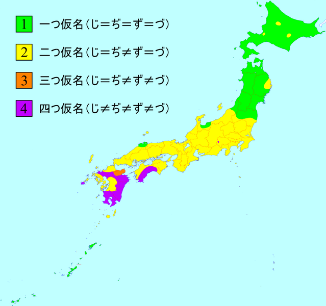| Word | Spell Change? | Original | New | Word | Spell Change? | Original | New |
| 泉 | Yes | いづみ | いずみ | 案じる | No | 案じる | 案じる |
| 味 | Yes | あぢ | あじ | 言伝て | No | ことづて | ことづて |
| 雫 | Yes | しづく | しずく | 埋める | Yes | うづめる | うずめる |
| 傷 | No | きず | きず | 築く | Yes | きづく | きずく |
| それじゃ | Yes | それぢゃ | それじゃ | ずつ | Yes | づつ | ずつ |
| ネズミ | No | ネズミ | ネズミ | 恥 | Yes | はぢ | はじ |
| 短い | No | みじかい | みじかい | 譲る | Yes | ゆづる | ゆずる |
| 水 | Yes | みづ | みず | 羊 | No | ひつじ | ひつじ |
| 虹 | No | にじ | にじ | つづら | No | つづら | つづら* |
| 沈む | Yes | しづむ | しずむ | 頷く | Yes/No | うなづく | うなづく・うなずく |
As has been discussed thus far, 四つ仮名 have been and continue to be pronounced differently in different dialects. As the picture above demonstrates, a dialect could fall under one of four categories in respect to 四つ仮名.
一つ仮名弁: Dialects in which じ ＝ ぢ＝ず＝づ
二つ仮名弁: Dialects in which じ ＝ ぢ≠ ず＝づ
三つ仮名弁: Dialects in which じ ＝ ぢ≠ ず≠ づ
四つ仮名弁: Dialects in which じ ≠ ぢ ≠ ず ≠ づ
標準語 is a 二つ仮名弁, just in case you didn't know. However, as we've seen, there are certain environments that allow for all four distinct pronunciations to be used. This categorization tells not how exactly they are pronounced but how they are used contrastively. In 四つ仮名弁, these sounds are all used to contrast words. So, the main focus in this section will be to study how exactly 四つ仮名 are pronounced in various dialects of Japanese.
一つ仮名弁
In 一つ仮名弁, there are two ways of saying them all based on specific dialect. If you are a speaker of Kita-ou'u Dialect (far north in Tohoku) or Unpaku Dialect (in Izumo), you pronounce them all as [ʣï]. The vowel is in between い and う as the two vowels merged in this region. If you are a speaker of Minami-ou'u Dialect, you pronounce them all as [ʣɯ̈]. Because of this, these dialects have been given the stereotypical name ズーズー弁.
四つ仮名弁
The completely opposite of 一つ仮名弁 are 四つ仮名弁. However, even though a dialect may have all four as separate sounds, these separate sounds are not uniformly the same throughout these dialects. Many parts of Kyushu, Kouchi Prefecture (高知県), the south of Nara Prefecture (奈良県南部), and Narada in Yamanashi Prefecture (山梨県奈良田) are all areas with 四つ仮名弁.
In 高知県, dialects may have the following pronunciations: ジ ＝ [ʑi], ズ ＝ [zu], ヂ ＝ [di] ~ [dzi], ヅ＝ [du] ~ [dzu]. In Kagoshima Dialect (鹿児島弁), ジ ＝[ʑi], ズ ＝ [zu], ヂ ＝ [ʥi], and ヅ ＝ [ʣu].
The Oddity of Narada Dialect in Yamanashi Prefecture
Narada is strength with its unique pronunciations: ジ = [ði], ズ ＝ [ðu/dzu/zu], ヂ ＝ [ɖʐi], ヅ ＝ [ɖu/du]. It is also important to note that ツ ＝ [tu] in this dialect. The ð is in English words like "that". These speakers would at least have less difficulty in one sound in English than other Japanese speakers. However, these speakers are dwindling very quickly as many are converting their speech to 標準語 standards.
Narata Dialect is first transitioning into a 三つ仮名弁 with most speakers not distinguishing じ and ぢ, though they may still not be exactly like in Standard Japanese. For the most part, the pronunciation reflects traditional orthography, but there are some words in Narada Dialect in which the sounds have flipped. So, for instance 葛 ＝ 屑 as くず. Although 渦 was うづ, it is rendered as うず, which means it is either pronounced as [uzu], [udzu], or [uðu].
Research Note: To hear sound files of Narada Dialect for this information, see http://home.hiroshima-u.ac.jp/ikonishi/narada/narada_tu&du.html.
三つ仮名弁
三つ仮名弁 are not that common, but some speakers may naturally pronounce 四つ仮名 in this way at times regardless of dialect. Anyway, in these dialects such as 大分弁, ジ ＝ ヂ, butズ doesn't sound like ヅ, which are [zu] and [dzu] respectively.
二つ仮名弁
As was said before, there is variation even among 二つ仮名弁. In 京都弁 where the allophonous (varying in specific environments) pronunciation rules developed, most speakers now lightly affricate all these sounds except AFTER ん. In recent years due to the contact of peoples from different parts of the country, and because script reform has gotten rid of the need to notice any traditional differences in pronunciation, most dialects are becoming 二つ仮名弁.
Transcription Note: Symbols in IPA (International Phonetic Alphabet) are used in this lesson to make transcription as accurate and easy as possible. To look up glyphs that you don't understand, simply copy and paste the problematic ones into Wikipedia where you can find audio tapes for them.
In Classical Japanese works there are many かな that may seem very odd to the novice beginner. These かな are called 変体仮名. No, not へんたい as in 変態 but as in 変体.
変体仮名 are simply historical variants of the now standard ひらがな today. So, each mora had several possible ひらがな. The problem was not so in カタカナ as variants were made obsolete early in its development. 変体仮名 came from 万葉仮名, and many 変体仮名 originated from different 漢字.
変体仮名 were made obsolete in 1900 as one of the final reforms of the Meiji Reformation ( 明治維新). However, they still play a role in calligraphy, billboards, and authentic copies or replications of Classical works. 変体仮名 is also referred to as 異体仮名, making it clear that they can still be viewed as variants used at the author's will. It must be known, though, that not a lot of people know how to read them.
変体仮名 have played a very important role in writing ever since conception. People of the arts could liberally chose to their heart's desire what かな they wished to use, a continuation of the privilege people had when Japanese was still written in 万葉仮名.
変体仮名 are for the most part somewhat evolved forms of 万葉仮名 cursive style characters, from which other standard ひらがな derive from as well. As many 漢字 share the same 音読み, 変体仮名 inevitable came from a lot of characters, and many were made to represent the same sound.
変体仮名 are still seldom used. Many soba restaurant signs remind people of the character's glory-days and martial art centers and centers devoted to the preservation of historical events display them. Expect to see these characters by just going to a battlefield marker.
変体仮名 are not able to be viewed on computers. However, we will study by looking at the characters from this table from http://www10.plala.or.jp/koin/koinhentaigana.html
| 読み | あ | あ | あ | あ | あ | あ・を | い | い | い | い |
| 変 体 仮 名 |
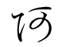 | 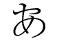 | 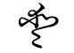 | 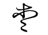 | 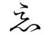 | 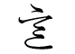 | 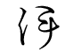 | 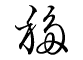 | ||
| 字母 | 阿 | 安 | 安 | 愛 | 愛 | 悪 | 以 | 意 | 伊 | 移 |
| い | う | う | う | う | う | う | う | う・は | う | え |
| 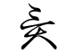 | 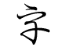 | 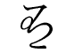 | 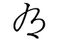 | 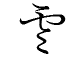 | 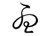 | 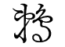 | 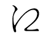 | |||
| 異 | 宇 | 宇 | 有 | 有 | 雲 | 右 | 憂 | 羽 | 鵜 | 江 |
| え | え | え | え | え | え | お | お | お | か | か |
| 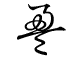 | 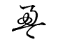 | 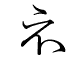 | 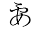 | 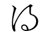 | 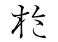 | 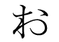 | 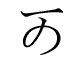 | 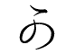 | ||
| 盈 | 盈 | 衣 | 要 | 得 | 縁 | 於 | 於 | 於 | 可 | 可 |
| か | か | か | か | か | か | か | か | か | か | か |
| 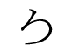 | 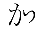 | 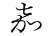 | 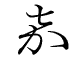 | 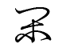 | 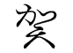 | 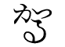 | 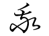 | 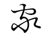 | 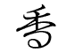 | 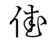 |
| 可 | 加 | 嘉 | 嘉 | 閑 | 賀 | 駕 | 我 | 家 | 香 | 佳 |
| が | が | が | が | が | が | が | が | が | が | が |
| 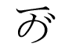 | 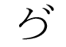 | 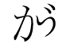 | 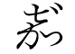 | 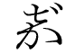 | 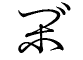 | 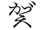 | 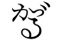 | 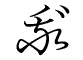 | 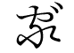 | |
| が | が | き | き | き | き | き | き | き | き・こ | き |
| 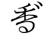 | 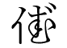 | 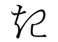 | ||||||||
| 起 | 幾 | 幾 | 喜 | 支 | 木 | 貴 | 期 | 記 | ||
| き | ぎ | ぎ | ぎ | ぎ | ぎ | ぎ | ぎ | ぎ・ご | ぎ | ぎ |
| 季 | ||||||||||
| く | く | く | く | く | く | ぐ | ぐ | ぐ | ぐ | ぐ |
| 具 | 久 | 九 | 求 | 供 | 倶 | |||||
| ぐ | け | け・と | け | け | け | け | け | け | け | げ |
| 希 | 計・斗 | 計 | 介 | 介 | 遣 | 気 | 気 | 稀 | ||
| げ・ど | げ | げ | げ | げ | げ | げ | げ | こ | こ | こ |
| 古 | 故 | 許 | ||||||||
| こ | こ | こ・ね | こ | こ・き | ご | ご | ご | ご | ご | ご |
| 許 | 胡 | 子 | 興 | 期 | ||||||
| ご | ご・ぎ | さ | さ | さ | さ | さ | さ | さ | さ | さ |
| 左 | 佐 | 佐 | 散 | 散 | 斜 | 乍 | 沙 | 狭 | ||
| さ | ざ | ざ | ざ | ざ | ざ | ざ | ざ | ざ | ざ | ざ |
| 差 | ||||||||||
| し | し | し | し | し | し | し | し | じ | じ | じ |
| 志 | 之 | 之 | 新 | 四 | 斯 | 事 | 師 | |||
| じ | じ | じ | じ | じ | す | す | す | す | す | す |
| 春 | 春 | 須 | 寿 | 寿 | 数 | |||||
| す | す | ず | ず | ず | ず | ず | ず | ず | ず | せ |
| 数 | 受 | 勢 | ||||||||
| せ | せ | せ | せ | ぜ | ぜ | ぜ | ぜ | ぜ | そ | そ |
| 世 | 世 | 声 | 瀬 | 楚 | 曽 | |||||
| そ | そ | そ | そ | そ | そ | そ | ぞ | ぞ | ぞ | ぞ |
| 曽 | 曽 | 所 | 所 | 処 | 処 | 蘇 | ||||
| ぞ | ぞ | ぞ | ぞ | ぞ | た | た | た | た | た | た |
| 多 | 多 | 多 | 堂 | 堂 | 田 | |||||
| た | だ | だ | だ | だ | だ | だ | だ | ち | ち | ち |
| 当 | 知 | 知 | 千 | |||||||
| ち | ち | ち | ち | ち | ぢ | ぢ | ぢ | ぢ | ぢ | ぢ |
| 遅 | 地 | 致 | 馳 | 智 | ||||||
| ぢ | ぢ | つ | つ | つ | つ | つ | つ | つ | づ | づ |
| 徒 | 徒 | 川 | 川 | 津 | 都 | 頭 | ||||
| づ | づ | づ | づ | づ | て | て | て | て | て | て |
| 天 | 天 | 亭 | 帝 | 帝 | 伝 | |||||
| て | て | て | で | で | で | で | で | で | で | で |
| 転 | 氐 | 低 | ||||||||
| で | と | と | と | と | と | と | と・け | ど | ど | ど |
| 登 | 登 | 東 | 度 | 砥 | 土 | 斗・計 | ||||
| ど | ど | ど | ど・げ | な | な | な | な | な | な | な |
| 奈 | 奈 | 奈 | 那 | 那 | 那 | 難 | ||||
| な | な | な | に | に | に | に | に | に | に | に |
| 名 | 南 | 菜 | 爾 | 爾 | 丹 | 耳 | 仁 | 児 | 而 | 尼 |
| ぬ | ぬ | ぬ | ね | ね | ね | ね | ね | ね | ね | ね |
| 怒 | 努 | 駑 | 禰 | 禰 | 年 | 年 | 根 | 熱 | 音 | 寝 |
| ね | ね・こ | の | の | の | の | の | の | の | の | の |
| 念 | 子 | 能 | 能 | 能 | 野 | 乃 | 迺 | 農 | 農 | 濃 |
| は | は | は | は | は | は | は | は | は | は | は |
| 者 | 者 | 者 | 葉 | 葉 | 盤 | 盤 | 盤 | 八 | 波 | 婆 |
| は | は | は | は | は・う | ば | ば | ば | ば | ば | ば |
| 婆 | 半 | 破 | 芳 | 羽 | ||||||
| ば | ば | ば | ば | ば | ば | ば | ば | ば | ば | ぱ |
| ぱ | ぱ | ぱ | ぱ | ぱ | ぱ | ぱ | ぱ | ぱ | ぱ | ぱ |
| ぱ | ぱ | ぱ | ぱ | ひ | ひ | ひ | ひ | ひ | ひ | ひ |
| 飛 | 飛 | 悲 | 悲 | 比 | 非 | 日 | ||||
| ひ | び | び | び | び | び | び | び | び | ぴ | ぴ |
| 妣 | ||||||||||
| ぴ | ぴ | ぴ | ぴ | ぴ | ぴ | ふ | ふ | ふ | ぶ | ぶ |
| 婦 | 布 | 不 | ||||||||
| ぶ | ぷ | ぷ | ぷ | へ | へ | へ | へ | へ | へ | へ |
| 遍 | 弊 | 弊 | 辺 | 辺 | 倍 | 幣 | ||||
| へ | べ | べ | べ | べ | べ | べ | べ | べ | ぺ | ぺ |
| 変 | ||||||||||
| ぺ | ぺ | ぺ | ぺ | ぺ | ぺ | ほ | ほ | ほ | ほ | ほ |
| 保 | 保 | 保 | 本 | 本 | ||||||
| ほ | ほ | ほ | ぼ | ぼ | ぼ | ぼ | ぼ | ぼ | ぼ | ぼ |
| 報 | 奉 | 穂 | ||||||||
| ぽ | ぽ | ぽ | ぽ | ぽ | ぽ | ぽ | ぽ | ま | ま | ま |
| 満 | 満 | 万 | ||||||||
| ま | ま | ま | ま | ま | ま・め | ま | ま | み | み | み |
| 万 | 万 | 末 | 末 | 麻 | 馬 | 真 | 間 | 美 | 美 | 美 |
| み | み | み | み | む | む | む | む | む・も・ん | む・も・ん | む・も・ん |
| 見 | 三 | 微 | 身 | 無 | 舞 | 舞 | 牟 | 无 | 无 | 无 |
| め | め | め・ま | も | も | も | も | も | も | も | も・む・ん |
| 免 | 面 | 馬 | 毛 | 毛 | 毛 | 茂 | 茂 | 裳 | 母 | 无 |
| も・む・ん | も・む・ん | や | や | や・よ | や | や | ゆ | ゆ | ゆ | ゆ |
| 无 | 无 | 屋 | 也 | 夜 | 耶 | 哉 | 由 | 由 | 遊 | 遊 |
| ゆ | ゆ | よ | よ | よ | よ | よ | よ | よ・や | ら | ら |
| 遊 | 游 | 与 | 与 | 与 | 代 | 余 | 余 | 夜 | 羅 | 良 |
| ら | ら | り | り | り | り | り | り | り | り | る |
| 良 | 良 | 里 | 利 | 利 | 利 | 利 | 理 | 李 | 梨 | 留 |
| る | る | る | る | る | れ | れ | れ | れ | れ | れ |
| 留 | 累 | 流 | 類 | 類 | 連 | 礼 | 礼 | 礼 | 礼 | 麗 |
| ろ | ろ | ろ | ろ | ろ | ろ | ろ | わ | わ | わ | わ |
| 路 | 呂 | 呂 | 楼 | 露 | 婁 | 侶 | 王 | 和 | 和 | 倭 |
| ゐ | ゐ |
ゐ |
ゐ |
ゐ |
ゐ | ゑ |
ゑ |
ゑ |
ゑ |
を |
| 井 | 為 | 為 | 遺 | 委 | 衛 | 衛 | 衛 | 恵 | 恵 | 越 |
| を | を | を | を | を | を・あ | ん・む・も | ん・む・も | ん・む・も | ||
| > | > | |||||||||
| 遠 | 遠 | 乎 | 乎 | 緒 | 悪 | 无 | 无 | 无 |
Try learning 5 a day once you reach IMABI IV and you will be fine. Also, if you are interested in learning the cursive form of characters, this will also greatly lessen the stress of learning another writing system.
One thing that is important to know and that can greatly help you memorize 変体仮名 is to recognize where they originated. The following chart shows where all かな have derived from. The abbreviations 平, 片, and 変 will stand for ひらがな, カタカナ, and 変体仮名 respectively.
Reading names is extremely difficult. Personal names, surnames, and place names are all very difficult for learners of Japanese and Japanese natives to know how to read properly. Though a lifetime of experience in the language makes the process easier, there is not a foolproof way of being 100% certain 100% of the time. Despite this difficulty, this lesson will attempt to explain various aspects you can find in the readings of names.
Names, though, are truly important to people. The famous author known by the name of 森鷗外 upon his death gave the following statement in his will: 余ハ石見人森林太郎トシテ死セント欲ス。墓ハ森林太郎ノ外一字モホルベカラズ (I wish to die as Iwamijin Mori Rintarou. Do not carve any other letters other than Mori Rintarou on my grave. He was a native of Iwami, a part of present day Chiba Prefecture. His given name was 森林太郎, and he wished to die that way. In Japanese culture a lot of thought is put into a name. Think of this as you learn more about names.
Though there have been many characters used in name in both Chinese and Japanese for a very long time, in attempts to practically narrow down the number of characters and readings that could be used in names, a list of characters not already in the list of general use characters was created by National Language Committee in 1951. Although it has been updated several times since, it is enforced by the Ministry of Justice.
People can only have the 2136 常用漢字, 861 人名用漢字, and かな in their names. Any character outside of this is considered as a 表外字. Additions to the list are being considered in accordance to requests from parents. The increase of name characters is being done in attempts to increase the list of general use characters. In fact, in 2010 121 characters from the 人名用漢字表 were put into the 常用漢字表. This trend will probably continue as the use of 漢字 is re-surging due to typing technology and people's cultural pride in the use of 漢字 becomes ever stronger.
| 丑 | 丞 | 乃 | 之 | 乎 | 也 | 云 | 亘・亙 | 些 | 亦 |
| 亥 | 亨 | 亮 | 仔 | 伊 | 伍 | 伽 | 佃 | 佑 | 伶 |
| 侃 | 侑 | 俄 | 俠 | 俣 | 俐 | 倭 | 俱 | 倦 | 倖 |
| 偲 | 傭 | 儲 | 允 | 兎 | 兜 | 其 | 冴 | 凌 | 凜・凛 |
| 凧 | 凪 | 凰 | 凱 | 函 | 劉 | 劫 | 勁 | 勺 | 勿 |
| 匁 | 匡 | 廿 | 卜 | 卯 | 卿 | 厨 | 厩 | 叉 | 叡 |
| 叢 | 叶 | 只 | 吾 | 吞 | 吻 | 哉 | 哨 | 啄 | 哩 |
| 喬 | 喧 | 喰 | 喋 | 嘩 | 嘉 | 嘗 | 噌 | 噂 | 圃 |
| 圭 | 坐 | 尭・堯 | 坦 | 埴 | 堰 | 堺 | 堵 | 塙 | 壕 |
| 壬 |
夷 | 奄 | 奎 | 套 | 娃 | 姪 | 姥 | 娩 | 嬉 |
| 孟 | 宏 | 宋 | 宕 | 宥 | 寅 | 寓 | 寵 | 尖 | 尤 |
| 屑 | 峨 | 峻 | 崚 | 嵯 | 嵩 | 嶺 | 巌・巖 | 已 | 巳 |
| 巴 | 巷 | 巽 | 帖 | 幌 | 幡 | 庄 | 庇 | 庚 | 庵 |
| 廟 | 廻 | 弘 | 弛 | 彗 | 彦 | 彪 | 彬 | 徠 | 忽 |
| 怜 | 恢 | 恰 | 恕 | 悌 | 惟 | 惚 | 悉 | 惇 | 惹 |
| 惺 | 惣 | 慧 | 憐 | 戊 | 或 | 戟 | 托 | 按 | 挺 |
| 挽 | 掬 | 捲 | 捷 | 捺 | 捧 | 掠 | 揃 | 摑 | 摺 |
| 撒 | 撰 | 撞 | 播 | 撫 | 擢 | 孜 | 敦 | 斐 | 斡 |
| 斧 | 斯 | 於 | 旭 | 昂 | 昊 | 昏 | 昌 | 昴 | 晏 |
| 晃・晄 | 晒 | 晋 | 晟 | 晦 | 晨 | 智 | 暉 | 暢 | 曙 |
| 曝 | 曳 | 朋 | 朔 | 杏 | 杖 | 杜 | 李 | 杭 | 杵 |
| 杷 | 枇 | 柑 | 柴 | 柘 | 柊 | 柏 | 柾 | 柚 | 桧・檜 |
| 栞 | 桔 | 桂 | 栖 | 桐 | 栗 | 梧 | 梓 | 梢 | 梛 |
| 梯 | 桶 | 梶 | 椛 | 梁 | 棲 | 椋 | 椀 | 楯 | 楚 |
| 楕 | 椿 | 楠 | 楓 | 椰 | 楢 | 楊 | 榎 | 樺 | 榊 |
| 榛 | 槙・槇 | 槍 | 槌 | 樫 | 槻 | 樟 | 樋 | 橘 | 樽 |
| 橙 | 檎 | 檀 | 櫂 | 櫛 | 櫓 | 欣 | 欽 | 歎 | 此 |
| 殆 | 毅 | 毘 | 毬 | 汀 | 汝 | 汐 | 汲 | 沌 | 沓 |
| 沫 | 洸 | 洲 | 洵 | 洛 | 浩 | 浬 | 淵 | 淳 | 渚・渚 |
| 淀 | 淋 | 渥 | 湘 | 湊 | 湛 | 溢 | 滉 | 溜 | 漱 |
| 漕 | 漣 | 澪 | 濡 | 瀕 | 灘 | 灸 | 灼 | 烏 | 焰 |
| 焚 | 煌 | 煤 | 煉 | 熙 | 燕 | 燎 | 燦 | 燭 | 燿 |
| 爾 | 牒 | 牟 | 牡 | 牽 | 犀 | 狼 | 猪・猪 | 獅 | 玖 |
| 珂 | 珈 | 珊 | 珀 | 玲 | 琢・琢 | 琉 | 瑛 | 琥 | 琶 |
| 琵 | 琳 | 瑚 | 瑞 | 瑶 | 瑳 | 瓜 | 瓢 | 甥 | 甫 |
| 畠 | 畢 | 疋 | 疏 | 皐 | 皓 | 眸 | 瞥 | 矩 | 砦 |
| 砥 | 砧 | 硯 | 碓 | 碗 | 碩 | 碧 | 磐 | 磯 | 祇 |
| 祢・禰 | 祐・祐 | 祷・禱 | 禄・祿 | 禎・禎 | 禽 | 禾 | 秦 | 秤 | 稀 |
| 稔 | 稟 | 稜 | 穣・穰 | 穹 | 穿 | 窄 | 窪 | 窺 | 竣 |
| 竪 | 竺 | 竿 | 笈 | 笹 | 笙 | 笠 | 筈 | 筑 | 箕 |
| 箔 | 篇 | 篠 | 簞 | 簾 | 籾 | 粥 | 粟 | 糊 | 紘 |
| 紗 | 紐 | 絃 | 紬 | 絆 | 絢 | 綺 | 綜 | 綴 | 緋 |
| 綾 | 綸 | 縞 | 徽 | 繫 | 繡 | 纂 | 纏 | 羚 | 翔 |
| 翠 | 耀 | 而 | 耶 | 耽 | 聡 | 肇 | 肋 | 肴 | 胤 |
| 胡 | 脩 | 腔 | 脹 | 膏 | 臥 | 舜 | 舵 | 芥 | 芹 |
| 芭 | 芙 | 芦 | 苑 | 茄 | 苔 | 苺 | 茅 | 茉 | 茸 |
| 茜 | 莞 | 荻 | 莫 | 莉 | 菅 | 菫 | 菖 | 萄 | 菩 |
| 萌・萠 | 萊 | 菱 | 葦 | 葵 | 萱 | 葺 | 萩 | 董 | 葡 |
| 蓑 | 蒔 | 蒐 | 蒼 | 蒲 | 蒙 | 蓉 | 蓮 | 蔭 | 蔣 |
| 蔦 | 蓬 | 蔓 | 蕎 | 蕨 | 蕉 | 蕃 | 蕪 | 薙 | 蕾 |
| 蕗 | 藁 | 薩 | 蘇 | 蘭 | 蝦 | 蝶 | 螺 | 蟬 | 蟹 |
| 蠟 | 衿 | 袈 | 袴 | 裡 | 裟 | 裳 | 襖 | 訊 | 訣 |
| 註 | 詢 | 詫 | 誼 | 諏 | 諄 | 諒 | 謂 | 諺 | 讃 |
| 豹 | 貰 | 賑 | 赳 | 跨 | 蹄 | 蹟 | 輔 | 輯 | 輿 |
| 轟 | 辰 | 辻 | 迂 | 迄 | 辿 | 迪 | 迦 | 這 | 逞 |
| 逗 | 逢 | 遥・遙 | 遁 | 遼 | 邑 | 祁 | 郁 | 鄭 | 酉 |
| 醇 | 醐 | 醍 | 醬 | 釉 | 釘 | 釧 | 銑 | 鋒 | 鋸 |
| 錘 | 錐 | 錆 | 錫 | 鍬 | 鎧 | 閃 | 閏 | 閤 | 阿 |
| 陀 | 隈 | 隼 | 雀 | 雁 | 雛 | 雫 | 霞 | 靖 | 鞄 |
| 鞍 | 鞘 | 鞠 | 鞭 | 頁 | 頌 | 頗 | 顚 | 颯 | 饗 |
| 馨 | 馴 | 馳 | 駕 | 駿 | 驍 | 魁 | 魯 | 鮎 | 鯉 |
| 鯛 | 鰯 | 鱒 | 鱗 | 鳩 | 鳶 | 鳳 | 鴨 | 鴻 | 鵜 |
| 鵬 | 鷗 | 鷲 | 鷺 | 鷹 | 麒 | 麟 | 麿 | 黎 | 黛 |
| 鼎 |
The following 常用漢字 have 旧字体 variants that are allowed in names.
| 亞 （亜） | 惡（悪） | 爲（為） | 逸（逸） | 榮（栄） | 衞（衛） | 謁（謁） | 圓（円） | 緣（縁） | 薗（園） | 應（応） |
| 櫻（桜） | 奧（奥） | 橫（横） | 溫（温） | 價（価） | 禍（禍） | 悔（悔） | 海（海） | 壞（壊） | 懷（懐） | 樂（楽） |
| 渴（渇） | 卷（巻） | 陷（陥） | 寬（寛） | 漢（漢） | 氣（気） |
祈（祈） | 器（器） | 僞（偽） | 戲（戯） | 虛（虚） |
| 峽（峡） | 狹（狭） | 響（響） | 曉（暁） | 勤（勤） | 謹（謹） | 駈（駆） | 勳（勲） | 薰（薫） | 惠（恵） | 揭（掲） |
| 鷄（鶏） | 藝（芸） | 擊（撃） | 縣（県） | 儉（倹） | 劍（剣） | 險（険） | 圈（圏） | 檢（検） | 顯（顕） | 驗（験） |
| 嚴（厳） | 廣（広） | 恆（恒） | 黃（黄） | 國（国） | 黑（黒） | 穀（穀） | 碎（砕） | 雜（雑） | 祉（祉） | 視（視） |
| 兒（児） | 濕（湿） | 實（実） | 社（社） | 者（者） | 煮（煮） | 壽（寿） | 收（収） | 臭（臭） | 從（従） | 澁（渋） |
| 獸（獣） | 縱（縦） | 祝（祝） | 暑（暑） | 署（署） | 緖（緒） | 諸（諸） | 敍（叙） | 將（将） | 祥（祥） | 涉（渉） |
| 燒（焼） | 奬（奨） | 條（条） | 狀（状） | 乘（乗） | 淨（浄） | 剩（剰） | 疊（畳） | 孃（嬢） | 讓（譲） | 釀（醸） |
| 神（神） | 眞（真） | 寢（寝） | 愼（慎） | 盡（尽） | 粹（粋） | 醉（酔） | 穗（穂） | 瀨（瀬） | 齊（斉） | 靜（静） |
| 攝（摂） | 節（節） | 專（専） | 戰（戦） | 纖（繊） | 禪（禅） | 祖（祖） | 壯（壮） | 爭（争） | 莊（荘） | 搜（捜） |
| 巢（巣） | 曾（曽） | 裝（装） | 僧（僧） | 層（層） | 瘦（痩） | 騷（騒） | 增（増） | 憎（憎） | 藏（蔵） | 贈（贈） |
| 臟（臓） | 卽（即） | 帶（帯） | 滯（滞） | 瀧（滝） | 單（単） | 嘆（嘆） | 團（団） | 彈（弾） | 晝（昼） | 鑄（鋳） |
| 著（著） | 廳（庁） | 徵（徴） | 聽（聴） | 懲（懲） | 鎭（鎮） | 轉（転） | 傳（伝） | 都（都） | 嶋（島） | 燈（灯） |
| 盜（盗） | 稻（稲） | 德（徳） | 突（突） | 難（難） | 拜（拝） | 盃（杯） | 賣（売） | 梅（梅） | 髮（髪） | 拔（抜） |
| 繁（繁） | 晚（晩） | 卑（卑） | 祕（秘） | 碑（碑） | 賓（賓） | 敏（敏） | 冨（富） | 侮（侮） | 福（福） | 拂（払） |
| 佛（仏） | 勉（勉） | 步（歩） | 峯（峰） | 墨（墨） | 飜（翻） | 每（毎） | 萬（万） | 默（黙） | 埜（野） | 彌（弥） |
| 藥（薬） | 與（与） | 搖（揺） | 樣（様） | 謠（謡） | 來（来） | 賴（頼） | 覽（覧） | 欄（欄） | 龍（竜） | 虜（虜） |
| 凉（涼） | 綠（緑） | 淚（涙） | 壘（塁） | 類（類） | 禮（礼) |
The word 名乗り has several definitions, but before we hone in on the one to be the focus of this lesson, we'll begin by looking at its definitions from the fifth edition of the 広辞苑.
な-のり【名告・名乗】
①自分の名・素性などを告げること。また、その名。特に武士が戦場でおこなうもの。
To tell your name/lineage. Or, that name. Particularly what warriors do on the battlefield.
②売物の名を呼びあるくこと。
To walk around calling out one's things to sell.
③公家および武家の男子が、元服後に通称以外に加えた実名。通称藤吉郎に対して秀吉と名乗る類。
Real name aside from one's alias after attaining manhood for boys of the Imperial Court and military families. The sort seen with labeling oneself as Hideyoshi versus the alias Fujikichirou.
④漢字の、通常の読みとは別に、特に名前に用いる訓。
Kun readings used particularly in names aside from the normal readings of a Kanji.
⑤能や狂言の構成部分の一。登場人物が自己の身分や、そこに来た趣旨などを述べるせりふ。
A compositional part of Noh and Kyogen. Speech made by characters to tell one's status and intentions on coming.
名乗り in this lesson refers to meaning 4, which refers to special 訓読み in personal names and surnames. These readings are those that have been historically attributed to names and are well established readings that people have chosen for names for a long time.
Many names in Japanese, though, are made with just standard readings of characters. In fact, some of the most common surnames are as such.
| 鈴木 | すずき | 山田 | やまだ | 山本 | やまもと | 山口 | やまぐち | 川端 | かわばた |
| 夏目 | なつめ | 本田 | ほんだ | 澤田 | さわだ | 川崎 | かわさき | 杉本 | すぎもと |
| 加納 | かのう | 竹中 | たけなか | 石井 | いしい | 田口 | たぐち | 坂本 | さかもと |
| 大坪 | おおつぼ | 田村 | たむら | 片山 | かたやま | 辻本 | つじもと | 石田 | いしだ |
| 清水 | しみず | 細野 | ほその | 沼田 | ぬまた | 根本 | ねもと | 野呂 | のろ |
Spelling Note: Old characters such as 澤 instead of 沢 is common in names.
Reading Note: 清水, although an irregular reading, also happens to be a common word spelled this way. So, しみず will be treated as a standard reading.
Special readings can be used with other special readings or regular readings. There is no rule that a 名乗り reading must be used with another 名乗り reading. In fact, there is no standardization on the use of 名乗り. 名乗り will be in bold in the following examples.
| 飯田 | いいだ (Surname) | 新潟 | にいがた (Place name) | 圭輔 | けいすけ (Personal name) |
| 希 | のぞみ (Personal name) | 秀吉 | ひでよし (Personal name) | 英雄 | ひでお (Personal name) |
There is some concern as to how far one can use 名乗り and what should even be considered 名乗り. In Japan parents have complete liberty in how they wish for to read their child's name. However, the overwhelming majority of Japanese believe that parents should only give names to their children that the intended reading can be figured out. Attributing a reading that is not a standard reading or a 名乗り recognized in dictionaries (and most importantly the public) is not popular.
Names of Famous Literary Figures
| ペンネーム | 読み | 本名 | ペンネーム | 読み | 本名 |
| 二葉亭四迷 | ふたばてい しめい | 長谷川辰之助 | 森鷗外 | もり おうがい | 森林太郎 |
| 与謝野昌子 | よさの しょうこ | 与謝野志よう | 永井荷風 | ながい かふう | 永井壮吉 |
| 正宗白鳥 | まさむね はくちょう | 正宗忠夫 | 高浜虚子 | たかはま きょし | 高濱清 |
| 武者小路実篤 | むしゃのこうじ さねあつ | 々 | 平塚らいてう | ひらつか らいちょう | 奥村明 |
| 高村光太郎 | たかむら こうたろう | 高村光太郎 | 菊池寛 | きくち かん | 菊池寛 |
| 室生犀星 | むろう さいせい | 室生照道 | 佐藤湖鳴 | さとう ちょうめい | 佐藤春夫 |
| 金子光晴 | かねこ みつはる | 金子安和 | 尾崎士郎 | おざき しろう | 々 |
| 川端康成 | かわばた やすなり | 々 | 草野心平 | くさの しんぺい | 々 |
| 井上靖 | いのうえ やすし | 々 | 唐十郎 | から じゅうろう | 大鶴義英 |
| 樋口一葉 | ひぐち いちよう | 樋口夏子 | 国木田独歩 | くにきだ どっぽ | 国木田哲夫 |
| 夏目漱石 | なつめ そうせき | 夏目金之助 | 田山花袋 | たやま かたい | 田山録弥 |
| 長谷川時雨 | はせがわ しぐれ | 長谷川ヤス | 北原白秋 | きたはら はくしゅう | 北原隆吉 |
| 志賀直哉 | しが なおや | 々 | 斉藤茂吉 | さいとう もきち | 々 |
| 宇野浩二 | うの こうじ | 宇野格次郎 | 芥川龍之介 | あくたがわりゅうのすけ | 々 |
| 宇野千代 | うの ちよ | 々 | 山本周五郎 | やまもと しゅうごろう | 清水三十六 |
| 佐多稲子 | さた いねこ | 佐多イネ | 種田山頭火 | たねだ さんとうか | 種田正一 |
| 太宰治 | だざい おさむ | 津島修治 | 島崎藤村 | しまざき とうそん | 島崎春樹 |
| 三島由紀夫 | みしま ゆきお | 平岡公威 | 大田翔子 | おおだ しょうこ | 々 |
| 吉行淳之介 | よしゆき じゅんのすけ | 々 | 寺山修司 | てらやま しゅうじ | 々 |
| 泉鏡花 | いずみ きょうか | 泉鏡太郎 | 石川啄木 | いしかわ たくぼく | 石川一 |
| 野上弥生 | のがみ やえこ | 野上ヤヱ | 中里介山 | なかざと かいざん | 中里弥之介 |
| 宮本百合子 | みやもと ゆりこ | 宮本ユリ | 萩原朔太郎 | はぎわら さくたろう | 々 |
| 山本有三 | やまもと ゆうぞう | 山本勇造 | 横光利一 | よこみつ りいち | 横光利一 |
| 梶井基次郎 | かじい もとじろう | 々 | 小林多喜二 | こばやし たきじ | 々 |
| 堀辰雄 | ほり たつお | 々 | 坂口安吾 | さかぐち あんご | 坂口炳五 |
| 中原中也 | なかはら ちゅうや | 々 | 壺井栄 | つぼい さかえ | 々 |
| 火野葦平 | ひの あしへい | 玉井勝則 | 椎名麟三 | しいな りんぞう | 大坪昇 |
| 大岡昇平 | おおおか しょうへい | 々 | 島尾敏雄 | しまお としお | 々 |
| 柳田國男 | やなぎた くにお | 々 | 三木露風 | みき ろふう | 三木操 |
| 有島武郎 | ありしま たけお | 々 | 葛西善蔵 | かさい ぜんぞう | 々 |
| 広津和郎 | ひろつ かずろう | 々 | 原民喜 | はら たみき | 々 |
Reading Notes:
1. 志よう ＝ しょう
2. 壮吉 ＝ そうきち
3. 奥村明 ＝ おくむら はる
4. 高村’s real name is read as たかむら みつたろう.
5. 菊池’s real name is read as きくち ひろし.
6. 清水三十六 is read as しみず さとむ.
7. 君威 ＝ きみたけ
8. 石川一 ＝ いしかわ はじめ.
9. 横光利一’s real name is read as よこみつ としかず.
10. 三木操 ＝ みき みさお.
Even though you may never read even one novel of all of these literary figures, at least knowing how to correctly read their names will impress natives as you will inevitably encounter their names being invoked for whatever reason.
Using Rare 名乗り
Using rare 名乗り that still appear in dictionaries may cause problems as well. Consider the character 和, which has the 名乗り reading とし. Even so, it is usually read as わ or かず in names. If you were to name your male child the common name さとし but spell it as 佐和, people may understandably mistakenly read it as the common female name read as さわ, which is normally spelled that way.
This is not to say that ambiguous reading of names isn't a problem, which is why it's so difficult to read the names of people you personally don't know correctly for the first time. Gender ambiguity in names has actually been used by people who change the reading of their name when they get a gender change, and people can also choose to leave the reading of their name ambiguous to have slightly more privacy in their identity.
きらきらネーム
However, there are names called きらきらネーム that are really flashy names with cute (and some would say bizarre readings). For instance, people have named children 光宙 with the reading ぴかちゅう. On this end of the spectrum, how to read the name is not necessarily that difficult. Yet, societal consequences for names such as this is highly debated. These names may also be called DQNネーム.
| 天響（てぃな） | 緑輝（さふぁいあ） | 火星（まあず） | 姫凛（ぷりん） | 七音（どれみ） | 月（あかり） |
| 希星（きらら） | 陽（ぴん） | 神生理（かおり） | 星影夢（ぽえむ） | 美々魅（みみみ） | 姫奈（ぴいな） |
| 園風（ぞふぃ） | 男（あだむ） | 束生夏（ばなな） | 晴日（はるひ） | 精飛愛（せぴあ） | 宝物（おうじ） |
Choosing what the final letter of a name is--止め字--is an important decision, and the decision is highly based on what the previous sound. A lot of parents decide the final character before thinking about the rest of the name they want to give to their child.
止め字 for Girl Names
| ア | 亜, 明, 愛, 阿, 有, 綾, 安 | 星愛 |
| イ | 衣, 依, 伊, 意 | 真衣, 優衣 |
| エ | 絵, 恵, 江, 慧, 枝, 瑛, 映, 依, 永, 重, 笑, 詠, 栄, 英 |
千恵, 澄江, 沙恵, 沙絵, 真理江, 真梨恵, 春恵 |
| オ | 央, 生, 於, 緒, 桜, 欧 | 伽緒 |
| オリ | 織 | 香織, 沙織, 詩織 |
| カ | 花, 華, 香, 果, 歌, 夏, 加, 馨, 霞, 佳, 鹿, 伽, 茄, 賀, 可, 嘉, 樺 |
涼香, 穂乃果, 美香, 実夏, 智香, 千香, 麗華, 玲花, 怜香, 玲果, 晴香, 陽香, 舞香, 麻衣香, 澄香, 純美花 |
| キ | 樹, 貴, 輝, 希, 紀, 季, 規, 岐, 記, 起, 姫, 木, 祈, 芸, 黄, 来, 稀, 葵, 綺, 嬉, 伎 |
沙樹, 早希, 真貴, 美樹, 玉樹 |
| コ | 子, 鼓, 湖, 胡, 古, 虹, 瑚 | 菜々子, 萌子 |
| サ | 沙, 紗, 砂, 左, 茶, 彩, 咲, 早, 冴, 採, 嵯, 裟, 瑳 |
美沙, 千紗, 理沙, 莉紗, 茉莉沙 |
| ジ | 路 | |
| ス | 朱, 寿, 須 | |
| スミ・ズミ | 澄, 純 | 伽純 |
| セ | 瀬, 勢, 世, 星、 静 | |
| チ | 千, 地, 知, 智, 小, 稚 | |
| ツ・ヅ | 津, 都, 鶴、 通 | |
| ツキ・ヅキ | 月 | |
| ト | 都, 渡, 登, 富, 音 | |
| ナ | 那, 奈, 菜, 南, 名, 七 | 鈴菜, 鈴奈, 陽菜, 綾奈, 彩那, 絢奈, 佑奈, 夕菜, 優那, 沙奈, 紘奈, 宏奈, 茉奈, 玲菜, 陽菜 |
| ナミ | 浪, 波 | |
| ネ | 音, 根, 嶺 | 朱音, 鈴音, 桃音 |
| ノ | 乃, 野, 農, 能, 濃 | 志乃, 知野 |
| ハ | 葉, 羽, 波 | |
| ヒ | 日, 陽, 斐 | |
| ブ | 舞 | |
| ホ | 穂, 保, 帆, 歩, 朋 | 奈保, 菜穂, 真帆, 夏帆 |
| マ | 麻, 摩, 磨, 万, 茉, 真, 舞, 雅, 満 | |
| ミ | 美, 未, 巳, 見, 実, 海, 満, 水, 光, 身、 味, 泉 | 愛美, 留美, 晴見, 裕未, 聡美 |
| メ | 女, 芽 | |
| モ | 萌, 望 | |
| ヤ | 耶, 矢, 弥, 夜, 也, 野, 椰 | |
| ユ | 由, 優, 悠, 友, 愉, 佑, 侑, 有 | |
| ユキ | 雪, 幸 | |
| ヨ | 世, 夜, 容, 代, 葉, 与, 予, 依, 陽 | 小夜, 沙世 |
| ラ | 良, 羅, 楽 | |
| リ | 里, 莉, 理, 梨, 璃, 利, 李, 理, 吏 | 真理, 万理, 茉莉, 真里, 絵里, 恵理, 絵梨, 衣里, 汐里, 芽里, 優里, 友梨 |
| リン | 鈴, 林, 凛 | |
| ル | 留, 瑠, 流 | |
| レイ | 礼, 怜, 伶, 嶺, 麗, 玲 | |
| ワ | 和, 輪, 羽, 環 |
止め字 for Boy Names
| キ | 貴, 輝, 樹 | 祐樹, 優輝, 航輝 |
| ゴ | 吾, 悟 | 信吾, 真悟, 賢吾, 涼吾 |
| シ | 史, 士, 司, 志, 至 | 靖史, 建志, 忠士, 雅司, 慶至 |
| ジ | 自, 二 | 達自, 浩二 |
| スケ | 介, 助, 甫, 輔 | 大輔, 康介 |
| タ | 太, 汰 | 雄太, 謙太, 隆太, 翔太 |
| ダイ | 大 | 佑大, 航大 |
| タケ | 健 | 剛健 |
| ト | 人, 斗, 登 | 流斗, 勇人, 駿斗, 健人 |
| ドウ | 童 | 義童 |
| ノリ | 則, 典, 紀 | 忠典, 勝紀 |
| ヘイ | 平 | 陽平, 昭平, 哲平, 晃平 |
| マ | 真, 馬, 磨 | 和馬, 優馬, 達馬, 卓磨 |
| ヤ | 也, 矢 | 信也, 徹也, 竜也, 智也 |
| ユキ | 之 | 弘之, 尚之, 敏行, 智之 |
| ラ | 羅 | 森羅 |
| ロウ | 郎, 朗 | 健太郎, 舜太郎, 晃太郎 |
Classifying Kanji is controversial. The first classification attempt was done by Xu Shen in his work "Shuōwén Jiězì 說文解字", creating the 六書 . The 六書 is the categorization of characters by 6 principles. There is still great debate on them since his work was so broad.
The 六書
The usage of 部首 is often referred to as "偏旁冠脚（へんぼうかんきゃく）". This method relies on the fact that there is generally 1 or more different radicals in a character and 4 main locations where the "true" radical may be located. As 90% of all characters are 形声文字, the "true" radical should almost always be apparent. Due to simplification, though, some characters are impossible to categorize appropriately. When such cases exist, you must rely on your knowledge of 旧字体. However, most 新字体 are easily assigned a 部首.
The number of 部首 has been a controversial issue. As the characters evolved, so did their parts. As it is not as if this evolution caused the creation of completely different radicals, we often classify variants of the same thing as a single 部首. It is here where the classification of 部首 is different in China and Japan. In Japan, there is a somewhat agreement classification with 214 distinct 部首.
In listing radicals, there are two accepted steps: counting the strokes of the radical and figuring out the 音読み and listing in a 五十音図 style ordering. For example, a character that has 3 strokes whose radical has an 音読み with the first letter K would be before a character with that same amount of strokes but with the first letter T. Voiced consonants, in dictionaries, are shown after their non-voiced counterparts with the only issue being h. In this case, h is first, b is second, and p is last. When searching for words or characters, you must understand that the small y かな are treated as full characters.
There are some radicals whose strokes may be counted differently depending on one's viewpoint and choice of font. For example, the 部首 瓜, 阝, 鬼, and 臣 are considered to have 5, 3, 10, and 7 strokes in Japan respectively but are considered to have 6, 2, 9, and 6 in China respectively. To find the 部首 of a character, a system of different positions has been created to pinpoint where it is normally located.
THE STANDARD PATTERNS
脚の変形: Irregularities of the Ashi pattern.
構の変形: Irregularities of the 構 pattern.
THE 214 BUSHU ACCORDING TO THE 康熙（こうき）字典
| # | Radical | Stroke Number | Name | Popular/Normal Name | Meaning | |
| 1. | 一 | 1 | 一部 | いちぶ | イチ | ”One" radical |
| 2. | 丨 | 1 | ｜部 | こんぶ | たてぼう | ”Bar" radical |
| 3. | 丶 | 1 | 丶部 | ちゅぶ | テン | ”Dot" radical |
| 4. | 丿 | 1 | 丿部 | へつぶ | の | ”Slash" radical |
| 5. | 乙・乚 | 1 | 乙部 | おつぶ | おつ、おつにょう、つばり | ”Fish-hook" radical |
| 6. | 亅 | 1 | 亅部 | けつぶ | はねぼう、かぎ | ”Hook" radical |
| 7. | 二 | 2 | 二部 | にぶ | に | ”Two" radical |
| 8. | 亠 | 2 | 亠部 | とうぶ | なべぶた、け（い）さんかんむり | ”Top" radical |
| 9. | 人・亻 | 2 | 人部 | じんぶ | ひと、にんべん、ひとがしら、ひとやね | ”Person" radical |
| 10. | 儿 | 2 | 儿部 | じんぶ | にんにょう、ひとあし | ”Legs" radical |
| 11. | 入 | 2 | 入部 | にゅうぶ | いる、いりがしら、いりやね、にゅう | ”Enter" radical |
| 12. | 八 | 2 | 八部 | はちぶ | はち、はちがしら | ”Eight" radical |
| 13. | 冂 | 2 | 冂部 | けいぶ | けいがまえ、まきがまえ、どうがまえ、えんがまえ | ”Down-box" radical |
| 14. | 冖 | 2 | 冖部 | べきぶ | わかんむり、べきかんむり | ”Cover" radical |
| 15. | 冫 | 2 | 冫部 | ひょうぶ | にすい | ”Ice" radical |
| 16. | 几 | 2 | 几部 | きぶ | つくえ、きにょう、つくえきにょう、かぜかんむり、かぜがまえ | ”Table" radical |
| 17. | 凵 | 2 | 凵部 | かんぶ | かんにょう、うけばこ、したばこ | ”Up-box" radical |
| 18. | 刀・刂 | 2 | 刀部 | とうぶ | かたな、りっとう | ”Sword" radical |
| 19. | 力 | 2 | 力部 | りょくぶ | ちから | ”Strength" radical |
| 20. | 勹 | 2 | 勹部 | ほうぶ | つつみがまえ | ”Wrap" radical |
| 21. | 匕 | 2 | 匕部 | ひぶ | ひ、さじ、さじのひ | ”Spoon" radical |
| 22. | 匚 | 2 | 匚部 | ほうぶ | はこがまえ | "Right-open-box" radical |
| 23. | 匸 | 2 | 匸部 | けいぶ | かくしがまえ | ”Hiding enclosure" radical |
| 24. | 十 | 2 | 十部 | じゅうぶ | じゅう | ”Ten" radical |
| 25. | 卜 | 2 | 卜部 | ぼくぶ | ぼく、ぼくのと、うらない | ”Divination" radical |
| 26. | 卩・⺋ | 2 | 卩部 | せつぶ | ふしづくり、まげわりふ | ”Seal" radical |
| 27. | 厂 | 2 | 厂部 | かんぶ | がんだれ | ”Cliff" radical |
| 28. | 厶 | 2 | 厶部 | しぶ | む | ”Private" radical |
| 29. | 又 | 2 | 又部 | ゆうぶ | また | ”Again" radical |
| 30. | 口 | 3 | 口部 | こうぶ | くち、くちへん | ”Mouth" radical |
| 31. | 囗 | 3 | 囗部 | いぶ | くにがまえ | ”Enclosure" radical |
| 32. | 土 | 3 | 土部 | どぶ | つち、つちへん | ”Earth" radical |
| 33. | 士 | 3 | 士部 | しぶ | さむらい、さむらいかんむり | ”Scholar" radical |
| 34. | 夂 | 3 | 夂部 | ちぶ | ふゆがしら、ちかんむり、のまたかんむり | ”Go" radical |
| 35. | 夊 | 3 | 夊部 | すいぶ | すいにょう、すいにゅう、なつあし | ”Go slowly" radical |
| 36. | 夕 | 3 | 夕部 | せきぶ | ゆうべ、ゆう、た | ”Evening" radical |
| 37. | 大 | 3 | 大部 | だいぶ | だい、だいがしら、だいかんむり | ”Big" radical |
| 38. | 女 | 3 | 女部 | じょぶ | おんな、おんなへん | ”Woman" radical |
| 39. | 子 | 3 | 子部 | しぶ | こ、こども、こへん、こどもへん | ”Child" radical |
| 40. | 宀 | 3 | 宀部 | べんぶ | うかんむり | ”Roof" radical |
| 41. | 寸 | 3 | 寸部 | すんぶ | すん | ”Inch" radical |
| 42. | 小 | 3 | 小部 | しょうぶ | しょう、しょうがしら、なおがしら | ”Small" radical |
| 43. | 尢・尣 | 3 | 尢部 | おうぶ | まげあし、だいのまげあし、おうにょう | ”Lame" radical |
| 44. | 尸 | 3 | 尸部 | しぶ | しかばね、しかばねかんむり、かばねだれ | ”Corpse" radical |
| 45. | 屮 | 3 | 屮部 | てつぶ | てつ、めばえ | ”Sprout" radical |
| 46. | 山 | 3 | 山部 | さんぶ | やま、やまへん | ”Mountain" radical |
| 47. | 巛・川 | 3 | 巛部 | せんぶ | かわ、まがりがわ、さんぽがわ | ”River" radical |
| 48. | 工 | 3 | 工部 | こうぶ | こう、たくみ、たくみへん | ”Work" radical |
| 49. | 己・已・巳 | 3 | 己部 | きぶ | おのれ | ”Self" radical |
| 50. | 巾 | 3 | 巾部 | きんぶ | はば、はばへん、きんへん、きんべん | ”Turban" radical |
| 51. | 干 | 3 | 干部 | かんぶ | ほす、かん、いちじゅう | ”Dry" radical |
| 52. | 幺 | 3 | 幺部 | ようぶ | いとがしら | ”Thread" radical |
| 53. | 广 | 3 | 广部 | げんぶ | まだれ | ”Dotted cliff" radical |
| 54. | 廴 | 3 | 廴部 | いんぶ | えんにょう、えんにゅう、いんにょう | ”Long stride" radical |
| 55. | 廾 | 3 | 廾部 | きょうぶ | こまぬき | ”Two hands" radical |
| 56. | 弋 | 3 | 弋部 | よくぶ | しきがまえ | ”Shoot" radical |
| 57. | 弓 | 3 | 弓部 | きゅうぶ | ゆみ、ゆみへん | ”Bow" radical |
| 58. | 彐・彑 | 3 | 彐部 | けいぶ | けいがしら、いのこがしら | ”Snout" radical |
| 59. | 彡 | 3 | 彡部 | さんぶ |
さんづくり、かみかざり | ”Bristle" radical |
| 60. | 彳 | 3 | 彳部 | てきぶ | ぎょうにんべん | ”Step" radical |
| 61. | 心・忄・㣺 | 4 | 心部 | しんぶ | こころ・りっしんべん・したごころ | ”Heart" radical |
| 62. | 戈 | 4 | 戈部 | かぶ | ほこがまえ、ほこづくり、たすき、かのほこ | ”Halberd" radical |
| 63. | 戶・戸 | 4 | 戶部 | こぶ | と、とかんむり、とだれ、とびらのと | ”Door" radical |
| 64. | 手・扌 | 4 | 手部 | しゅぶ | て、てへん | ”Hand" radical |
| 65. | 支 | 4 | 支部 | しぶ | しにょう、えだにょう、じゅうまた | ”Branch" radical |
| 66. | 攴・攵 | 4 | 攴部 | ぼくぶ | ぼくづくり、ぼくにょう、のぶん、しぶん、とまた | ”Strike" radical |
| 67. | 文 | 4 | 文部 | ぶんぶ | ぶん、ぶんにょう、ふみづくり | ”Writing" radical |
| 68. | 斗 | 4 | 斗部 | とぶ | と、ます、とます | ”Dipper" radical |
| 69. | 斤 | 4 | 斤部 | きんぶ | おの、おのづくり | ”Ax" radical |
| 70. | 方 | 4 | 方部 | ほうぶ | かたへん、ほうへん | ”Square" radical |
| 71. | 无 | 4 | 无部 | むぶ | なし、むにょう、すでのつくり | ”Not" radical |
| 72. | 日 | 4 | 日部 | にちぶ | にち、ひへん | ”Day" radical |
| 73. | 曰 | 4 | 曰部 | えつぶ | ひらび、いわく | ”Say" radical |
| 74. | 月 | 4 | 月部 | げつぶ | つき、つきへん | ”Moon" radical |
| 75. | 木 | 4 | 木部 | もくぶ | き、きへん | ”Tree" radical |
| 76. | 欠 | 4 | 欠部 | けんぶ | あくび、かける | ”Lack" radical |
| 77. | 止 | 4 | 止部 | しぶ | とめる、とめへん | ”Stop" radical |
| 78. | 歹 | 4 | 歹部 | がつぶ | かばねへん、がつ、がつへん、しにがまえ、いちたへん | ”Death" radical |
| 79. | 殳 | 4 | 殳部 | しゅぶ | ほこ、ほこづくり、るまた | ”Weapon" radical |
| 80. | 毋 | 4 | 毋部 | ぶぶ | なかれ | "Do not" radical |
| 81. | 比 | 4 | 比部 | ひぶ | ならびひ、くらべる | "Compare" radical |
| 82. | 毛 | 4 | 毛部 | もうぶ | け | "Hair" radical |
| 83. | 氏 | 4 | 氏部 | しぶ | うじ | "Clan" radical |
| 84. | 气 | 4 | 气部 | きぶ | きがまえ | "Air" radical |
| 85. | 水・氵・氺 | 4 | 水部 | すいぶ | みず・さんずい・したみず | "Water" radical |
| 86. | 火・灬 | 4 | 火部 | かぶ | ひ、ひへん、れんが、れっか | "Fire" radical |
| 87. | 爪・爫 | 4 | 爪部 | そうぶ | つめ、そうにょう、つめかんむり | "Nail" radical |
| 88. | 父 | 4 | 父部 | ふぶ | ちち | "Father" radical |
| 89. | 爻 | 4 | 爻部 | こうぶ | "Yao" radical |
|
| 90. | 爿・丬 | 4/3 | 爿部 | しょうぶ | しょうへん | "Half tree trunk" radical |
| 91. | 片 | 4 | 片部 | へんぶ | かた、かたへん | "Slice" radical |
| 92. | 牙 | 4/5 | 牙部 | がぶ | きば | "Fang" radical |
| 93. | 牛・牜 | 4 | 牛部 | ぎゅうぶ | うし、うしへん | "Cow" radical |
| 94. | 犬・犭 | 4 | 犬部 | けんぶ | いぬ、けものへん | "Dog" radical |
| 95. | 玄 | 5 | 玄部 | げんぶ | げん | "Profound" radical |
| 96. | 玉・王・玊 | 5 | 玉部 | ぎょくぶ | たま、たまへん、ぎょくへん、おうへん | "Jade" radical |
| 97. | 瓜 | 5 | 瓜部 | かぶ | うり | "Melon" radical |
| 98. | 瓦 | 5 | 瓦部 | がぶ | かわら | "Tile" radical |
| 99. | 甘 | 5 | 甘部 | かんぶ | あまい、かん | "Sweet" radical |
| 100. | 生 | 5 | 生部 | せいぶ | いきる、うまれる、せい、しょう | "Life" radical |
| 101. | 用・ 甩 | 5 | 用部 | ようぶ | もちいる、よう | "Use" radical |
| 102. | 田 | 5 | 田部 | でんぶ | た、たへん | "Field" radical |
| 103. | 疋 | 5 | 疋部 | しょうぶ | ひき | "Bolt of cloth" radical |
| 104. | 疒 | 5 | 疒部 | だくぶ | やまいだれ | "Disease" radical |
| 105. | 癶 | 5 | 癶部 | はつぶ | はつがしら | "Dotted tent" radical |
| 106. | 白 | 5 | 白部 | はくぶ | しろ、しろへん | "White" radical |
| 107. | 皮 | 5 | 皮部 | ひぶ | けがわ、ひのかわ | "Skin" radical |
| 108. | 皿 | 5 | 皿部 | べいぶ | さら | "Plate" radical |
| 109. | 目・罒 | 5 | 目部 | もくぶ | め、めへん | "Eye" radical |
| 110. | 矛 | 5 | 矛部 | ぼうぶ | ほこ、ほこへん | "Spear" radical |
| 111. | 矢 | 5 | 矢部 | しぶ | や、やへん | "Arrow" radical |
| 112. | 石 | 5 | 石部 | せきぶ | いし、いしへん | "Stone" radical |
| 113. | 示・礻 | 5 | 示部 | しぶ | しめす、しめすへん、ねへん | "Spirit" radical |
| 114. | 禸 | 5 | 禸部 | じゅうぶ | ぐうのあし | "Track" radical |
| 115. | 禾 | 5 | 禾部 | かぶ | いね、いねへん、のぎ、のぎへん | "Grain" radical |
| 116. | 穴 | 5 | 穴部 | けつぶ | あな、あなかんむり | "Hole" radical |
| 117. | 立 | 5 | 立部 | りゅうぶ | たつ、たつへん | "Stand" radical |
| 118. | 竹 | 6 | 竹部 | ちくぶ | たけ、たけかんむり | "Bamboo" radical |
| 119. | 米 | 6 | 米部 | べいぶ | こめ、こめへん | "Rice" radical |
| 120. | 糸・糹 | 6 | 糸部 | べきぶ | いと、いとへん | "Thread" radical |
| 121. | 缶 | 6 | 缶部 | ふぶ | ほとぎ、ほとぎへん、かん | "Can" radical |
| 122. | 网・罒・罓 | 6 | 网部 | もうぶ | あみがしら・よんがしら・あみめ | "Net" radical |
| 123. | 羊 | 6 | 羊部 | ようぶ | ひつじ、ひつじへん | "Sheep" radical |
| 124. | 羽 | 6 | 羽部 | うぶ | はね | "Wing" radical |
| 125. | 老・耂 | 6/4 | 老部 | ろうぶ | おいがしら・おいかんむり | "Age" radical |
| 126. | 而 | 6 | 而部 | じぶ | しこうして | "And" radical |
| 127. | 耒 | 6 | 耒部 | らいぶ | すきへん、らいすき | "Plow" radical |
| 128. | 耳 | 6 | 耳部 | じぶ | みみ、みみへん | "Ear" radical |
| 129. | 聿・肀 | 6/4 | 聿部 | いつぶ | ふでづくり | "Brush" radical |
| 130. | 肉・月 | 6/4 | 肉部 | にくぶ | にく・にくづき | "Meat" radical |
| 131. | 臣 | 6/7 | 臣部 | しんぶ | しん | "Minister" radical |
| 132. | 自 | 6 | 自部 | じぶ | みずから | "Own" radical |
| 133. | 至 | 6 | 至部 | しぶ | いたる、いたるへん | "Arrive"radical |
| 134. | 臼 | 6 | 臼部 | きゅうぶ | うす | "Mortar" radical |
| 135. | 舌 | 6 | 舌部 | ぜつぶ | した | "Tongue" radical |
| 136. | 舛 | 6・7 | 舛部 | せんぶ | ます、まいあし | "Oppose" radical |
| 137. | 舟 | 6 | 舟部 | しゅうぶ | ふね、ふねへん | "Boat" radical |
| 138. | 艮 | 6 | 艮部 | ごんぶ | こんづくり、ごんづくり、ごん、ねづくり | "Stopping" radical |
| 139. | 色 | 6 | 色部 | しょくぶ | いろ | "Color" radical |
| 140. | 艸・艹 | 6/3 | 艸部 | そうぶ | くさかんむり 、くさ、そうこう | "Grass" radical |
| 141. | 虍 | 6 | 虍部 | こぶ | とらがしら | "Tiger" radical |
| 142. | 虫 | 6 | 虫部 | きぶ | むし、むしへん | "Bug" radical |
| 143. | 血 | 6 | 血部 | けつぶ | ち、ちへん | "Blood" radical |
| 144. | 行 | 6 | 行部 | こうぶ | ゆきがまえ、ぎょうがまえ | "Walk enclosure" radical |
| 145. | 衣・衤 | 6 | 衣部 | いぶ | ころも、ころもへん | "Clothes" radical |
| 146. | 襾・覀・西 | 6 | 襾部 | あぶ | にし | "West" radical |
| 147. | 見 | 7 | 見部 | けんぶ | みる | "See" radical |
| 148. | 角 | 7 | 角部 | かくぶ | つの、つのへん | "Horn" radical |
| 149. | 言・訁 | 7 | 言部 | げんぶ | ごんべん | "Talk" radical |
| 150. | 谷 | 7 | 谷部 | こくぶ | たに | "Valley" radical |
| 151. | 豆 | 7 | 豆部 | とうぶ | まめ | "Bean" radical |
| 152. | 豕 | 7 | 豕部 | しぶ | いのこ、いのこへん | "Boar" radical |
| 153. | 豸 | 7 | 豸部 | ちぶ | むじなへん | "Badger" radical |
| 154. | 貝 | 7 | 貝部 | ばいぶ | かい、かいへん | "Shell" radical |
| 155. | 赤 | 7 | 赤部 | せきぶ | あか、あかへん | "Red" radical |
| 156. | 走 | 7 | 走部 | そうぶ | はしる、そうにょう | "Run" radical |
| 157. | 足 | 7 | 足部 | そくぶ | あし、あしへん | "Foot" radical |
| 158. | 身 | 7 | 身部 | しんぶ | み、みへん | "Body" radical |
| 159. | 車 | 7 | 車部 | しゃぶ | くるま、くるまへん | "Vehicle" radical |
| 160. | 辛 | 7 | 辛部 | しんぶ | からい | "Bitter" radical |
| 161. | 辰 | 7 | 辰部 | しんぶ | しんのたつ | "Morning" radical |
| 162. | 辵・辶 | 7/3 | 辵部 | ちゃくぶ | しんにょう | "Walk" radical |
| 163. | 邑・阝 | 7/3 | 邑部 | ゆうぶ | おおざと | "City" radical |
| 164. | 酉 | 7 | 酉部 | ゆうぶ | ひよみのとり、とりへん、さけつくり | "Wine" radical |
| 165. | 釆 | 7 | 釆部 | はんぶ | のごめ、のごめへん | "Distinguish" radical |
| 166. | 里 | 7 | 里部 | りぶ | さと、さとへん | "Village" radical |
| 167. | 金 | 8 | 金部 | きんぶ | かね、かねへん | "Gold" radical |
| 168. | 長 | 8 | 長部 | ちょうぶ | ながい | "Long" radical |
| 169. | 門 | 8 | 門部 | もんぶ | もんがまえ、かどがまえ | "Gate" radical |
| 170. | 阜・阝 | 8 | 阜部 | ふぶ | こざとへん | "Mound" radical |
| 171. | 隶 | 8 | 隶部 | たいぶ | れいづくり | "Slave" radical |
| 172. | 隹 | 8 | 隹部 | すいぶ | ふるとり | "Tailed bird" radical |
| 173. | 雨 | 8 | 雨部 | うぶ | あめかんむり | "Rain" radical |
| 174. | 靑・青 | 8 | 青部 | せいぶ | あお | "Blue" radical" |
| 175. | 非 | 8 | 非部 | ひぶ | あらず | "Wrong" radical |
| 176. | 面 | 9 | 面部 | めんぶ | めん | "Face" radical |
| 177. | 革 | 9 | 革部 | かくぶ | かわへん、つくりがわ | "Leather" radical |
| 178. | 韋 | 9・10 | 韋部 | いぶ | なめしがわ | "Tanned leather" radical |
| 179. | 韭 | 9 | 韭部 | きゅうぶ | にら | "Leek" radical |
| 180. | 音 | 9 | 音部 | おんぶ | おと、おとへん | "Sound" radical |
| 181. | 頁 | 9 | 頁部 | けつぶ | おおがい | "Leaf" radical |
| 182. | 風 | 9 | 風部 | ふうぶ | かぜ | "Wind" radical |
| 183. | 飛 | 9 | 飛部 | ひぶ | とぶ | "Flight" radical |
| 184. | 食・飠 | 9/8 | 食部 | しょくぶ | しょくへん | "Food" radical |
| 185. | 首 | 9 | 首部 | しゅぶ | くび | "Neck" radical |
| 186. | 香 | 9 | 香部 | こうぶ | かおり | "Smell" radical |
| 187. | 馬 | 10 | 馬部 | ばぶ | うまへん | "Horse" radical |
| 188. | 骨 | 10 | 骨部 | こつぶ | ほねへん | "Bone" radical |
| 189. | 高・髙 | 10 | 高部 | こうぶ | たかい | "Tall" radical |
| 190. | 髟 | 10 | 髟部 | ひょうぶ | かみがしら | "Long hair" radical |
| 191. | 鬥 | 10 | 鬥部 | とうぶ | たたかいがまえ、とうがまえ | "Fight" radical |
| 192. | 鬯 | 10 | 鬯部 | ちょうぶ | ちょう、においざけ | "Sacrificial wine' radical |
| 193. | 鬲 | 10 | 鬲部 | れきぶ | かなえ、れき | "Tripod" radical |
| 194. | 鬼 | 10 | 鬼部 | きぶ | おに、きにょう | "Demon" radical |
| 195. | 魚 | 11 | 魚部 | ぎょぶ | うお、うおへん | "Fish" radical |
| 196. | 鳥 | 11 | 鳥部 | ちょうぶ | とり | "Bird" radical |
| 197. | 鹵 | 11 | 鹵部 | ろぶ | ろ、しお | "Salt" radical |
| 198. | 鹿 | 11 | 鹿部 | ろくぶ | しか | "Dear" radical |
| 199. | 麥・麦 | 11 | 麦部 | ばくぶ | むぎ、ばくにょう | "Wheat" radical |
| 200. | 麻 | 11 | 麻部 | まぶ | あさ、あさかんむり | "Hemp" radical |
| 201. | 黃・黄 | 12 | 黄部 | こうぶ | き | "Yellow" radical |
| 202. | 黍 | 12 | 黍部 | しょぶ | きび | "Millet" radical |
| 203. | 黑・黒 | 12/11 | 黒部 | こくぶ | くろ | "Black" radical |
| 204. | 黹 | 12 | 黹部 | ちぶ | ち、ぬいとり、ふつへん | "Embroidery" radical |
| 205. | 黽 | 13 | 黽部 | ぼうぶ | べんあし、べん、かえる | "Frog" radical |
| 206. | 鼎 | 13 | 鼎部 | ていぶ | てい、かなえ | "Tripod" radical |
| 207. | 鼓 | 13 | 鼓部 | こぶ | つづみ | "Drum" radical |
| 208. | 鼠 | 13 | 鼠部 | そぶ | ねずみ | "Mouse" radical |
| 209. | 鼻 | 14 | 鼻部 | びぶ | はな、はなへん | "Nose" radical |
| 210. | 齊・斉 | 14/8 | 斉部 | せいぶ | せい | "Even" radical |
| 211. | 齒・歯 | 15/12 | 歯部 | しぶ | は、はへん | "Tooth" radical |
| 212. | 龍・竜 | 16/10 | 竜部 | りゅうぶ | りゅう | "Dragon" radical |
| 213. | 龜・亀 | 16/11 | 亀部 | きぶ | かめ | "Turtle" radical |
| 214. | 龠 | 17 | 龠部 | やくぶ | やく、ふえ | "Flute" radical |
Chart Note: Some variants have been omitted due to the unavailability of the respectful glyphs.
Name Note: If you learn any of the names, you should focus on the popular ones.
The development of 国字 is nothing less than fascinating. Despite having already borrowed thousands of 漢字 from mainland China and created its own syllabaries, hundreds of 漢字 have also been made by the Japanese. These 国字, also known as 和(製漢)字, have even at times been sent back to be used in China.
Curriculum Note: There is a resource page with a lot of 国字. This page, however, is coverage concerning 国字 in lesson format.
国字 have come and gone. By the beginning of the Heian Period (794~1185 A.D), around 400 such characters were recorded in the 新撰字鏡(しんせんじきょう), an early 漢和辞典. Of all the 国字 that have been created, only a relatively small percentage are still extremely important characters. However, this is not meant to disregard those that are important. For instance, 働 was made in Japan and is now used in China to mean “work” as well. It has even acquired its own 音読み ドウ. Another important case is 腺, which surprisingly only has the 音読み セン. It was coined in translating medical texts in Dutch to mean “gland”.
There are have only been 10 国字in the 常用漢字表: 働 (to work), 畑 (field), 込 (to put into, etc.), 枠 (frame), 搾 (to squeeze), 峠 (mountain pass), 塀 (earthen wall), 栃 (horse chestnut), 腺 (gland), 匁 (monme). The latter was taken out in 2010. There are also others as 人名用漢字 such as 笹 (bamboo grass) and 麿 (phonetic "maro" in names).
The large majority of 国字, though, are not included in these lists as they are in large point used in writing the names of plants and animals. Examples include 鰯 (sardines), 鴫 (snipe), 樫 (oak tree), 橡 (sawtooth oak), 椚 (sawtooth oak), etc. A lot of this is due to the fact that there are some things that are just not found in China that are in Japan, so the Japanese felt the need to create characters for these things.
For the most part, 国字 were created with the 六書 principles kept in mind. Here are a few examples.
| 鱈 | Created with the cod fish that can be caught when it’s snowing in mind. |
| 樫 | Created with the hard Japanese oak tree in mind. |
| 辻 | Created with crossroads in a path in mind. |
| 畑 | Created with slash and burn agriculture in mind. |
| 雫 | Created with rain falling down in mind. |
| 俥 | Created with a rickshaw in mind. |
Although the majority of 国字 do not have 音読み, there are rare instances where some were made with漢字 phonetics in mind.
| 腺 | Created with the radical meat plus 泉 (セン). Thus, 腺’s sound is セン. |
| 塀 | Created with the radical ground plus 屏 (ヘイ). |
Some, though, were created by combining characters.
| 粂 | 久 (ク) + 米 (メ). Thus, read as くめ. It is seen in names. |
| 麿 | 麻 has the reading マ, and 呂 has the reading ロ. So, 麿 ＝ まろ. It is seen in names. |
国訓
There are even some characters that may also be found in China whose meanings are so different in Japanese that it begs the question whether such characters changed usage once brought to Japan or happened to be made in Japan as well. The two main examples of this are the following characters.
| Character | Chinese Meaning | Japanese Meaning |
| 偲 | Suddenly | To recollect |
| 鮎 | Sheatfish | Ayu fish |
| 藤 | Vine | Wisteria |
| 沖 | To rinse; minor river | Offing/open water |
Though there are many easily searchable lists of 国字 online, below are the most important ones that you should study. Some of these are far rarer than others. So, the table will label these characters with a scale of 1-10 for importance with 10 being extremely important and 1 being minimally important.
If you are hoping to do well on the most difficult 漢字 tests like the 漢検1級, then try learning them all and more. If you want to just know those that show up frequently in literature, you may want to only learn half of them.
| 国字 | 重要度 | 意味 | 音訓 | 国字 | 重要度 | 意味 | 音訓 |
| 畑 | 10 | Field | はたけ | 働 | 10 | To work | ドウ・はたら(く) |
| 込 | 10 | To put into | こ(む) | 枠 | 10 | Frame | わく |
| 峠 | 10 | Ridge | とうげ | 搾 | 10 | To squeeze | サク・しぼ(る) |
| 腺 | 9 | Gland | セン | 匂 | 9 | Smell | にお(い) |
| 辻 | 9 | Crossroads | つじ | 辷 | 8 | To slip | すべ(る) |
| 雫 | 8 | Raindrop | しずく | 凧 | 8 | Kite | たこ |
| 笹 | 8 | Bamboo grass | ささ | 俥 | 8 | Rickshaw | くるま |
| 畠 | 8 | Field | はたけ | 躾 | 8 | Behavior | しつけ |
| 喰 | 8 | To eat | くら（う） | 癪 | 8 | Spasm | シャク |
| 凪 | 8 | Calm; lull | なぎ | 鰯 | 8 | Sardine | いわし |
| 鋲 | 8 | Tack | ビョウ | 榊 | 8 | Sakaki | さかき |
| 膵 | 8 | Pancreas | スイ | 襷 | 7 | Sash | たすき |
| 枡 | 7 | Measure | ます | 桝 | 7 | Measure | ます |
| 噺 | 7 | Chat | はなし | 鯰 | 7 | Catfish | なまず |
| 鑓 | 7 | Spear | やり | 栃 | 7 | Horse chestnut | とち |
| 褄 | 7 | Skirt; hem | つま | 鱈 | 7 | Cod | たら |
| 俣 | 7 | Crotch; fork | また | 鱚 | 7 | Sillago | きす |
| 颪 | 7 | Wind from mountains | おろし | 埖 | 7 | Trash | ごみ |
| 錺 | 7 | Metal jewelry | かざり | 梺 | 7 | Mountain base | ふもと |
| 縅 | 7 | Braid of armor | おどし | 麿 | 7 | Maro | まろ |
| 蓙 | 7 | Mat | ござ | 迚 | 6 | A lot | とても |
| 鞆 | 6 | Archer arm protector | とも | 簗 | 6 | Girder | やな |
| 裃 | 6 | Samurai garb | かみしも | 硴 | 6 | Oyster | かき |
| 毟 | 6 | To pull out (hair) | むし(る) | 毮 | 6 | To pull out (hair) | むし(る) |
| 裄 | 6 | Sleeve length | ゆき | 俤 | 6 | Vestige | おもかげ |
| 栂 | 6 | Hemlock | つが | 叺 | 6 | Straw bag | かます |
| 籾 | 6 | Unhulled rice | もみ | 鴫 | 6 | Snipe | しぎ |
| 鶇 | 6 | Thrush | つぐみ | 閊 | 6 | To be obstructed | つかえ(る) |
| 杢 | 6 | Woodworker | もく | 椙 | 6 | Japanese cedar | すぎ |
| 柾 | 6 | Spindle tree | まさき | 梻 | 6 | Grave tree | しきみ |
| 聢 | 6 | Certainly | しかと | 杣 | 6 | Timber | そま |
| 鳰 | 5 | Grebe | にお | 鵤 | 5 | Grosbeak | いかる |
| 〆 | 5 | Letter ending mark | しめ | 怺 | 5 | To endure | こらえ（る） |
| 渕 | 5 | Edge | ふち | 鯑 | 5 | Yellow fish; 寿司 eggs | かずのこ |
| 鮗 | 5 | Gizzard shad | このしろ | 圷 | 5 | Low ground | あくつ |
| 糀 | 5 | Malt | こうじ | 鶎 | 5 | Goldcrest | きくいた |
| 椚 | 5 | Horse chestnut | くぬぎ | 橡 | 5 | Horse chestnut | くぬぎ |
| 桛 | 5 | Reel; skein | かせ | 鎹 | 5 | Clamp | かすがい |
| 嬶 | 5 | Wife | かかあ | 遖 | 5 | Good job! | あっぱれ |
| 籏 | 5 | Banner | はた | 鰙 | 5 | Japanese smelt | わかさぎ |
| 圦 | 5 | Penstock; sluice | いり | 綛 | 4 | Reel; skein | かすり・かせ |
| 鱩 | 4 | Sailfin sandfish | はたはた | 鎺 | 4 | Habaki | はばき |
| 籡 | 4 | Temple (clothing) | しんし | 纐 | 4 | Tie-dying | コウ |
| 硲 | 4 | Gorge | はざま | 㐂 |
4 | To be joyful | よろこ(ぶ) |
| 魸 | 4 | Catfish | なまず | 椛 | 4 | Colored leaves | もみじ |
| 鮴 | 4 | Flathead | ごり | 鞐 | 4 | Fastener | こはぜ |
| 艝 | 4 | Sled | そり | 轌 | 4 | Sled | そり |
| 鯏 |
4 | Chub; dace | あさり・うぐい | 饂 |
4 | Udon | ウン |
| 燵 |
4 | Foot warmer | タツ | 鵥 | 4 | Eurasian jay | カケス |
| 蛯 |
4 | Shrimp | えび | 軈 |
4 | At last | やがて |
| 鯱 |
4 | Killer whale | しゃち(ほこ) | 簓 |
4 | Bamboo whisk | っさら |
| 鯲 | 3 | Lamprey | どじょう | 鵇 | 3 | Crested ibis | とき |
| 鮟 |
3 | Anglerfish | アン | 鱇 |
3 | Anglerfish | コウ |
| 蚫 | 3 | Abalone | ホウ・あわび | 苆 | 3 | Finish (plaster, etc.) | すさ |
| 魞 | 3 | Fish trap | えり | 逧 |
3 | Ravine | さこ・たに |
| 鵆 | 3 | Plover | ちどり | 鯐 | 3 | Young striped mullet | すばしり |
| 鶍 | 3 | Crossbill | いすか | 鮖 | 3 | Bullhead | かじか |
| 躮 | 3 | Son/brat | せがれ | 鮇 | 2 | Charr | いわな |
| 鯎 |
2 | Japanese dace | うぐい | 鰘 |
2 | Mackerel scad | むろあじ |
| 屶 |
2 | Wide blade knife | なた | 熕 | 2 | Big cannon | おおづつ |
| 塰 | 2 | Fisherman | あま | 鱛 |
1 | Lizardfish | えそ |
| 袰 | 1 | Awning | ほろ | 弖 | 1 | The phoneme te | て |
あて字 is a blanket term for irregular readings in Japanese. However, there is a more exact definition of it that separates it from other special cases that this lesson will go in depth in.
Consequently, in using 漢字 to write Japanese, there are plenty of instances in which the set readings of characters are still not efficient to spell particular native words. Thus, to compensate this problem, one solution is to attribute a particular reading of a set of characters for a certain instance, ignoring the phonetic values of the 漢字 chosen. Thus, the characters are chosen for semantic value. This is called 熟字訓 or 義訓.
This, as you would imagine, causes major problems. As we have seen with 国字, many characters had to be created to write the names of fish and what not. The other option chosen that was not mentioned in that lesson was the plethora of 熟字訓 created for the same purpose. Thus, from the perspective of the avid Japanese reader and prospecting Japanese learner, spelling is an arduous task to say the least.
Luckily, very few instances of 熟字訓 are taught in school. Thus, the average number known by even natives is relatively few. So, in the case of literature, they are generally given reading aids. However, due to the sheer number of them, you will and have surely already encountered them.
It must also be noted that not all 熟字訓 are for native words. There are instances of it for loanwords. However, the large majority of examples are still native words.
Native Word Examples
| 大人 | おとな | Adult | 時雨 | しぐれ | Drizzle | 梅雨 | つゆ | Rainy season |
| 五月雨 | さみだれ | May rain | 紫陽花 | あじさい | Hydrangea | 紅葉 | もみじ | Colored leaves |
| 田舎 | いなか | Countryside | 今日 | きょう | Today | 今朝 | けさ | This morning |
| 昨日 | きのう | Yesterday | 明日 | あす・あした | Tomorrow | 去年 | こぞ | Last year |
| 狗母魚 | えそ | Lizardfish | 薔薇 | ばら | Rose | 梔子 | くちなし | Gardenia |
| 向日葵 | ひまわり | Sunflower | 硫黄 | いおう | Sulfur | 意気地 | いくじ | Self-confidence |
| 乙女 | おとめ | Maiden | 母屋 | おもや | Main building | 河岸 | かし | River bank |
| 風邪 | かぜ | A cold | 仮名 | かな | Kana | 為替 | かわせ | Exchange |
| 雑魚 | ざこ | Small fry | 桟敷 | さじき | Gallery | 素人 | しろうと | Novice |
| 玄人 | くろうと | Expert | 仲人 | なこうど | Go-between | 若人 | わこうど | Young person |
| 数珠 | じゅず | Rosary | 師走 | しわす | 12th month | 雪崩 | なだれ | Avalanche |
| 博士 | はかせ | Professor | 下手 | へた | Bad at | 土産 | みやげ | Souvenir |
| 木綿 | もめん | Cotton | 寄席 | よせ | Vaudeville | 水母 | くらげ | Jellyfish |
Indigenous Cultural Items Note: Many 熟字訓 are for indigenous/cultural items. Clearly, China wouldn't have had a spelling for them as they wouldn’t be Chinese things.
| 神楽 | かぐら | Kagura | 出汁 | だし | Dashi | 太刀 | たち | Longsword |
| 祝詞 | のりと | Ritual prayer | お神酒 | おみき | Sacred sake | 大和 | やまと | Yamato |
| 相撲 | すもう | Sumo | 草履 | ぞうり | Zori | 小豆 | あずき | Azuki bean |
| 浴衣 | ゆかた | Yukata | 竹刀 | しない | Fencing stick | 手水 | ちょうず | Water for washing hands |
Classification Note: Although 意気地 and仮名 happen to have readings the resemble actual readings of the characters, because they are chosen primarily for meaning, they are classified as 熟字訓.
Counter Note: Remember that many counter expressions are irregular in this regard. Consider the days of the month like 一日, 二日, etc. Also consider 一人 and 二人 which are half 熟字訓 because of the -り reading of 人. There's also the important exception for 20 years old, 二十歳 .
Archaism Note: こぞ is now an archaism. Also, 師走 is the 12th month of the lunar calendar.
Loanword Examples
| 煙草 | タバコ | Tobacco | 燐寸 | マッチ | Match |
| 煙管 | キセル | Pipe | 硝子 | ガラス | Glass |
| 洋燈 | ランプ | Lamp | 麦酒 | ビール | Beer |
外来語 Note: Most loanwords are normally written in カタカナ. However, there are instances where really old loans such as タバコ are frequently written in ひらがな and 漢字. By the end of the Meiji Period, there were already hundreds of loans that were given 漢字spellings, and they were frequently used up until after World War II. Even so, if you read a lot of literature, you will undoubtedly encounter more example of this. As they are tested to some degree in the upper levels of the 漢検, learning these spellings is not completely trivial. Also, if you read anything from the late 1800s or early 1900s, they obviously show up in large number.
Part 熟字訓
There are also instances where only part of a word is 熟字訓. Again, there are a lot of examples regarding indigenous items, plants, and what not. However, it’s important to note that irregular changes to 音読み are also classified as 熟字訓.
| 日和 | ひより | Weather | 息子 | むすこ | Son | 一言居士 | いちげんこじ | Ready critic |
| 笑顔 | えがお | Smiling face | 息吹 | いぶき | Breath | 海原 | うなばら | Seabed |
| 浮気 | うわき | Affair | 果物 | くだもの | Fruit | 心地 | ここち | Sensation |
| 清水 | しみず | Pure water | 三味線 | しゃみせん | Shamisen | 白髪 | しらが | Grey hair |
| 砂利 | じゃり | Gravel | 読経 | どきょう | Sutra chanting | 友達 | ともだち | Friend |
| 子供 | こども | Friend | 名残 | なごり | Vestige | 上手 | じょうず | Good at |
| 眼鏡 | めがね | Glasses | 行方 | ゆくえ | Whereabouts | 蚊帳 | かや | Mosquito net |
| 達磨 | だるま | Daruma | 八百屋 | やおや | Greengrocer | 伝馬船 | てんません | Sculling boat |
Battle with Loanwords
In their heyday, loanwords brought another problem. For the examples we've seen thus far, there weren't Japanese equivalents. But, there have also been borrowings even though Japanese equivalents already existed. So, what better thing to do then attribute the loanword to the existing spellings! This is exactly what happened and the way one knew for sure how to read them was with ルビ. Though the practice is no longer near as common, you'll no doubt find some examples.
| 北極光 | ほっきょくこう | オーロラ | Aurora | 郷愁 | きょうしゅう | ノスタルジア | Nostalgia |
| 珈琲店 | こーひーてん | カフェ | Cafe | 火酒 | かしゅ | ウォッカ・ヴォッカ | Vodka |
| 接吻 | せっぷん | キッス | Kiss | 情調 | じょうちょう | ムード | Mood |
| 短艇 | たんてい | ボート | Boat | 並木道 | なみきみち | アベニュー | Avenue |
| 裁縫機械 | さいほうきかい | ミシン | Sewing machine | 喞筒 | そくとう | ポンプ | Pump |
漢語 → 和語
Although not considered 熟字訓 by some, there is a tendency in writing to impose the native word on the Sino-Japanese word and indicate the intended reading with ルビ.
| 漢語 | 和語 | 漢語 | 和語 |
| 暫時 | しばらく | 失敗 | しくじる |
| 墳墓 | 墓 | 生活 | 暮し |
あて字 is the use of 漢字 for phonetic purposes only. The meanings of the characters are, thus, ignored. Characters used in this fashion are called 借字. 音読み being borrowed for this are called音借, and 訓読み being borrowed for this are called 訓借.
There are also words spelled with a mixture of 音借 and 訓借. There is also a strong tendency to choose characters that help with meaning. These may resemble 熟字訓, but 熟字訓 clearly show no relation between the characters and their phonetic values.
Words like this can easily be written in かな. They may also have alternative non-あて字 spellings. Such spellings are common for loanwords, but as you can imagine, there are also plenty of native word examples. There are also 漢語 examples.
Spelling Note: あて字 can also be spelled as 当(て)字 and 宛字.
Native Word Examples
| 寿司 | すし | Sushi | 合羽 | かっぱ | Raincoat |
| 野良 | のら | Wild | 波止場 | はとば | Pier |
| 出鱈目 | でたらめ | Random | 滅茶苦茶 | めちゃくちゃ | Wreck; absurd |
| 芽出度い・目出度い | めでたい | Auspicious | 浦山敷 | うらやましく | Enviously |
| 沢山 | たくさん | A lot | 滅多 | めった | Seldom |
| 珍紛漢紛・珍糞漢糞・陳奮翰奮 |
ちんぷんかんぷん | Nonsense | 兎に角 | とにかく | Anyway |
Loan Word Examples
| 瓦斯 | ガス | Gas | 珈琲 | コーヒー | Coffee | 曹達 | ソーダ | Soda |
| 護謨 | ゴム | Rubber | 羅紗 | ラシャ | Woolen cloth | 沙翁 | シェークスピア | Shakespeare |
| 倶楽部 | クラブ | Club | 型録 | カタログ | Catalog | 場穴 | バケツ | Basket |
| 浪漫 | ロ（ウ)マン | Romance | 咖[喱・哩] | カレー | Curry | 亜細亜 | アジア | Asia |
| 欧羅巴 | ヨーロッパ | Europe | 亜米利加 | アメリカ | America | 加奈陀 | カナダ | Canada |
Spelling Note: 珈琲 may still be frequently seen on coffee cans, store signs, etc.
Although あて字, because certain loans have been attributed to particular single characters, they are felt to be 訓読み.
| 頁 | ページ | Page | 米 | メートル | Meter | 瓦 | グラム | Gram | 片 | ペンス | Pence | 釦 | ボタン | Button |
Country Names
All country names have been given あて字. Some are the same as used in Chinese, and if you watched the 2008 Beijing Olympics, you no doubt saw all of the country names in 漢字. However, there are still many differences as the sound systems of Mandarin and Japanese are quite different.
Some Chinese spellings had great influence. For instance, the spelling for England, 英吉利, begins with 英. So, although the pronunciation of 英吉利 is イギリス, 英 is frequently used in words regarding England. 英語 and 英国 are perfect examples. The first (or second if the first is taken) character of the spellings for the countries are used as abbreviations for them.
亜米利加 → 米 ベイ 露西亜 → 露 ロ 濠太剌利 → 豪・濠 ゴウ
As you would expect, there are often options. There are even あて字 spellings for important international cities such as Paris (巴里). These spellings were more common in the heyday of writing loans in 漢字 at the beginning of the 20th century. But, some remain important. Because these spellings in particular are featured in the upper levels of the 漢検, for those that truly love 漢字, by all means try to learn them all. For the casual, normal Japanese learner, it may help to learn the spellings of some of the most important countries and cities. Wikipedia has a lovely chart with a comparison between the Japanese and Chinese spellings. 国名の漢字表記一覧
In 1945 a lot of the most commonly used complex characters were simplified. The now defunct characters are called 旧字体. Ironically, the term has two simplified characters in it. So, the term should be written as 舊字體 to follow old orthography. 新字体, of course, are the resultant simplified forms.
Simplification took a more passive role in Japan as only a handful of methods were used to simplify a handful of 漢字. In the following decade after reform, typesets were still not entirely equipped to comply with simplification. So, it is very easy to find publications from the 1950s with 旧字体. 旧字体, because of their lasting cultural impression, similar to 変体仮名, were often referred to as 正字(体), meaning "correct characters". Many felt that 新字体 deserved to keep their 略字 status. In modern usage, 旧字体 can still be seen in personal and geographical names. It is still important to learn 旧字体 because they have been used throughout Japanese literary history.
The major methods used to create 新字体 forms are:
At times there were variants of a character. For example, 島 could be seen as 嶋, 嶌 and 島 before reform. The radical in 近 has one dot but originally had two. For characters that are not in the 常用漢字 List, it is still common to see two dots. Other differences between the written and printed form were resolved in favor of the written form in many other characters such as the 八 change to 丷 in Kanji such as 判.
Phonetic Replacement
A lot of characters classified under the 六書 as 形成文字（けいせいもじ） had their phonetic replaced with another character with the same phonetic without regards to the possible change in meaning in some cases. This allowed many characters to become much simpler. The process continues on in colloquial 略字 handwriting with カタカナ.
| 旧字体 | 新字体 | ON Reading Used for Simplification |
| 圍 | 囲 | イ |
| 廰 | 庁 | チョウ |
| 膽 | 胆 | タン |
Part Removal
Characters often got parts taken out during simplification. Duplicate parts were either reduced completely or considerably simplified to cut down stroke count. Some 旧字体 that were simplified this way became the same as an already existing character. The instances that this is so is far from many, but some like 藝 to 芸 caused problems. The latter character was a character with an 音読み of ウン and is in the name of Japan's first public library, 芸亭（うんてい）.
| 旧字体 | 新字体 |
| 蟲 | 虫 |
| 壘 | 塁 |
| 縣 | 県 |
漢字 have massive appearance change and stroke reduction when written in cursive/grass script. The resultant script, at times, gave shape to a more solidified and simple 略字 that were made proper in reform.
| 旧字体 | 新字体 | 旧字体 | 新字体 |
| 圖 | 図 | 覺 | 覚 |
| 晝 | 昼 | 樂 | 楽 |
| 學 | 学 | 靑 | 青 |
Radical Change
Radical change happened primarily from the use of cursive script. With such a simple change like this, many characters received a reduction in stroke number of as much as 2 or 3 strokes. An example of such radical change would be the change of 神 to 神 where the radical on the left changed to fit its cursive form.
新字体 Extension
Simplification was only applied to standardized 漢字, but it is common to see patterns used in 新字体 affect non-常用漢字i. 略字 are simplifications that are considered improper but are not uncommon.
| 旧字体 | 新字体 | 旧字体 | 新字体 |
| 潑 | 溌 | 曾 | 曽 |
| 欅 | 﨔 | 鬱 | 欝 |
| 鷗 | 鴎 | 頰 | 頬 |
| 旧字体 | 新字体 | 旧字体 | 新字体 |
| 萬 | 万 | 與 | 与 |
| 兩 | 両 | 竝 | 並 |
| 乘 | 乗 | 亂 | 乱 |
| 豫 | 予 | 爭 | 争 |
| 亞 | 亜 | 佛 | 仏 |
| 假 | 仮 | 會 | 会 |
| 傳 | 伝 | 伴 | 伴 |
| 體 | 体 | 餘 | 余 |
| 倂 | 併 | 價 | 価 |
| 侮 | 侮 | 僞 | 偽 |
| 儉 | 倹 | 僧 | 僧 |
| 免 | 免 | 兒 | 児 |
| 黨 | 党 | 具 | 具 |
| 內 | 内 | 圓 | 円 |
| 册 |
冊 | 寫 | 写 |
| Slashes look like ン |
冬 | 處 | 処 |
| 兇 | 凶 | 判 | 判 |
| Strokes are slashes in 月 |
前 | 劍 | 剣 |
| 劑 | 剤 | 剩 | 剰 |
| 勵 | 励 | 勞 | 労 |
| 效 | 効 | 敕 | 勅 |
| 勉 | 勉 | 勝 | 勝 |
| 勤 | 勤 | 勸 | 勧 |
| 勳 | 勲 | 包 | 包 |
| 區 | 区 | 醫 | 医 |
| 半 | 半 | 卑 | 卑 |
| 單 | 単 | 卽 | 即 |
| 釐 | 厘 | 嚴 | 厳 |
| 參 | 参 | 又 | 又 |
| 雙 | 双 | 收 | 収 |
| 敍 | 叙 | 臺 | 台 |
| 號 | 号 | 吳 | 呉 |
| 土 changed from stake with two lines | 周 | 咊、龢 | 和 |
| 八 changed to 丷 | 咲 | 啓 | 啓 |
| 喝 | 喝 | 營 | 営 |
| 嘆 | 嘆 | 囑 | 嘱 |
| 器、噐 | 器 | 團 | 団 |
| 圍 | 囲 | 圖 | 図 |
| 國 | 国 | 圈 | 圏 |
| 壓 | 圧 | 坪 | 坪 |
| 墮 | 堕 | 塀 | 塀 |
| 壘 | 塁 | 塚 | 塚 |
| 鹽、盬 | 塩 | 增 | 増 |
| 墨 | 墨 | 壞 | 壊 |
| 壤 | 壌 | 壯 | 壮 |
| 聲 | 声 | 壹 | 壱 |
| 賣 | 売 | 變 | 変 |
| 奧 | 奥 | 奬 | 奨 |
| 姬 | 姫 | 娛 | 娯 |
| 孃 | 嬢 | 學 | 学 |
| 寶 | 宝 | 實 | 実 |
| 寒 | 寒 | 寬 | 寛 |
| 寢 | 寝 | 對 | 対 |
| 壽 | 寿 | 專 | 専 |
| 將 | 将 | 尊 | 尊 |
| 尙 | 尚 | 盡 | 尽 |
| 屆 | 届 | 屬 | 属 |
| 層 | 層 | 嶽 | 岳 |
| 峽 | 峡 | 峯 | 峰 |
| 嶌、嶋 | 島 | Strokes are slashes in 月 |
崩 |
| 巢 | 巣 | 卷 | 巻 |
| 帶 | 帯 | 歸 | 帰 |
| 幤 | 幣 | 平 | 平 |
| 廳 | 庁 | 廣 | 広 |
| 廢 | 廃 | 廉 | 廉 |
| 廊 | 廊 | 獘 | 弊 |
| 辨、瓣、辯 | 弁 | 貳 | 弐 |
| 弱 | 弱 | 强 | 強 |
| 彈 | 弾 | 當 | 当 |
| 徑 | 径 | 從 | 従 |
| 德 | 徳 | 徵 | 徴 |
| 應 | 応 | 戀 | 恋 |
| 恆 | 恒 | 惠 | 恵 |
| 悔 | 悔 | 惱 | 悩 |
| 惡 | 悪 | 情 | 情 |
| 慘 | 惨 | 慈 | 慈 |
| 愼 | 慎 | 慨 | 慨 |
| 憎 | 憎 | 懷 | 懐 |
| 懲 | 懲 | 戰 | 戦 |
| 戲 | 戯 | 戾 | 戻 |
| 拂 | 払 | 拔 | 抜 |
| 擇 | 択 | 擔 | 担 |
| 拐 | 拐 | 拜 | 拝 |
| 據 | 拠 | 擴 | 拡 |
| 擧 | 挙 | 挾 | 挟 |
| 插 | 挿 | 搜 | 捜 |
| 揭 | 掲 | 搖 | 揺 |
| 攜、擕 | 携 | 攝 | 摂 |
| 擊 | 撃 | 敏 | 敏 |
| 敎 | 教 | 數 | 数 |
| 敷 | 敷 | 齊 | 斉 |
| 齋 | 斎 | 斷 | 断 |
| 旣 | 既 | 舊 | 旧 |
| 曐 | 星 | 晝 | 昼 |
| 晚 | 晩 | 晴 | 晴 |
| 曉 | 暁 | 暑 | 暑 |
| 曆 | 暦 | 朗 | 朗 |
| 朕 | 朕 | Strokes are slashes in 月 |
朝 |
| 條 | 条 | 來 | 来 |
| 樞 | 枢 | 榮 | 栄 |
| 櫻 | 桜 | 棧 | 桟 |
| 梅 | 梅 | Strokes are slashes in 月 |
棚 |
| 檢 |
検 | 樓 | 楼 |
| 樂 | 楽 | 槪 | 概 |
| 樣 | 様 | 權 | 権 |
| 橫 | 横 | 欄 | 欄 |
| 缺 | 欠 | 歐 | 欧 |
| 士 changed to 木 | 款 | 歡 | 歓 |
| 步 | 歩 | 齒 | 歯 |
| 歷 | 歴 | 殘 | 残 |
| 毆 | 殴 | 殺 | 殺 |
| 殼 | 殻 | 每 | 毎 |
| 氣 | 気 | 冰 | 氷 |
| 沒 | 没 | 澤 | 沢 |
| 淨 | 浄 | 淺 | 浅 |
| 濱 | 浜 | 海 | 海 |
| 淚 | 涙 | 淸 | 清 |
| 渴 | 渇 | 濟 | 済 |
| 涉 | 渉 | 澁 | 渋 |
| 溪 | 渓 | 氵＋廴＋ 咼 | 渦 |
| 溫 | 温 | 港 | 港 |
| 灣 | 湾 |
濕 | 湿 |
| 滿 | 満 | 玄 were separate | 滋 |
| 瀧 | 滝 | 滯 | 滞 |
| 桼 | 漆 | 漢 | 漢 |
| 潔 | 潔 | 潛 | 潜 |
| 瀨 | 瀬 | 燈 | 灯 |
| 灰 | 灰 | 爐 | 炉 |
| 點 | 点 | 爲 | 為 |
| 燒 | 焼 | 煮 | 煮 |
| 犧 | 犠 | 狀 | 状 |
| 獨 | 独 | 狹 | 狭 |
| 獵 | 猟 | 獻 | 献 |
| 獸 | 獣 | 甁 | 瓶 |
| 畫 | 画 | 畍 |
界 |
| 畔 | 畔 | 畱、畄 | 留 |
| 疊 | 畳 | 疏 | 疎 |
| 癡 | 痴 | 瘉 | 癒 |
| 發 | 発 | 益 | 益 |
| 盜 | 盗 | 譼 | 監 |
| 縣 | 県 | 眞 | 真 |
| 硏 | 研 | 碎 | 砕 |
| 碑 | 碑 | 禮 | 礼 |
| 玄 were separate | 磁 | 社 | 社 |
| 祈 | 祈 | 祉 | 祉 |
| 祖 | 祖 | 祝 | 祝 |
| 神 | 神 | 祥 | 祥 |
| 禪 | 禅 | 禍 | 禍 |
| 福 | 福 | 祕 | 秘 |
| 稱 | 称 | 稻 | 稲 |
| 穀 | 穀 | 穗 | 穂 |
| 穩 | 穏 | 突 | 突 |
| 竊 | 窃 | 窗、囱、牎、牕、窻 | 窓 |
| 竆 | 窮 | 龍 | 竜 |
| 竸 | 競 | 節 | 節 |
| 粹 | 粋 | 肅 | 粛 |
| 精 | 精 | 絲 | 糸 |
| 納 | 納 | 終 | 終 |
| 經 | 経 | 繪 | 絵 |
| 絕 | 絶 | 繼 | 継 |
| 續 | 続 | 緜 |
綿 |
| 總 | 総 | 綠 | 緑 |
| 緖 | 緒 | 練 | 練 |
| 緣 | 縁 | 繩 | 縄 |
| 縱 | 縦 | 繁 | 繁 |
| 纖 | 繊 | 罐 | 缶 |
| 署 | 署 | 飜 | 翻 |
| 者 | 者 | First slash has no line above it |
耕 |
| 秏 | 耗 | 聖 | 聖 |
| 聽 | 聴 | 膽 | 胆 |
| 脫 | 脱 | 腦 | 脳 |
| 腕 | 捥 | 臟 | 臓 |
| 臭 | 臭 | 舍 | 舎 |
| 舖 | 舗 | 藝 |
芸 |
| 莖 | 茎 | 莊 | 荘 |
| 著 | 著 | 藏 | 蔵 |
| 薰 | 薫 | 藥 | 薬 |
| 虛 | 虚 | 虜 | 虜 |
| 虞 | 虞 | 蟲 | 虫 |
| 蠶 | 蚕 | 螢 | 蛍 |
| 蠻 | 蛮 | 眾 | 衆 |
| 衞 | 衛 | 裝 | 装 |
| 裡 | 裏 | 褐 | 褐 |
| 襃 | 褒 | 霸 | 覇 |
| 視 | 視 | 覺 | 覚 |
| 覽 | 覧 | 觀 | 観 |
| 觸 | 触 | 譯 | 訳 |
| 證 | 証 | 評 | 評 |
| 譽 | 誉 | 誤 | 誤 |
| 說 | 説 | 読 | 讀 |
| 請 | 請 | 諸 | 諸 |
| 謁 | 謁 | 謠 | 謡 |
| 謹 | 謹 | 讓 | 譲 |
| 豐 | 豊 | 賓 | 賓 |
| 贊 | 賛 | 贈 | 贈 |
| 踐 | 践 | 轉 | 転 |
| 輕 | 軽 | 辭 | 辞 |
| 邊 | 辺 | 送 | 送 |
| 遞 | 逓 | 逸 | 逸 |
| 遲 | 遅 | 郞 | 郎 |
| 鄕 | 郷 | 都 | 都 |
| 醉 | 酔 | 釀 | 醸 |
| 釋 | 釈 | 鐵 | 鉄 |
| 鑛 | 鉱 | 錢 | 銭 |
| 鑄 | 鋳 | 鍊 | 錬 |
| 錄 | 録 | 鎭 | 鎮 |
| 兏、镸 | 長 | 關 | 関 |
| 鬪 | 闘 | 陷 | 陥 |
| 險 | 険 | 隆 | 隆 |
| 隨 | 随 | 隱 | 隠 |
| 隸 | 隷 | 雜 | 雑 |
| 難 | 難 | 雪 | 雪 |
| 靈 | 霊 | 靜 | 静 |
| 響 | 響 | 頻 | 頻 |
| 賴 | 頼 | 顏 | 顔 |
| 顯 | 顕 | 類 | 類 |
| 飮 |
飲 | 馱 | 駄 |
| 驛 | 駅 | 驅 | 駆 |
| 騷 | 騒 | 驗 | 験 |
| 髓 | 髄 | 髙 | 高 |
| 髮 | 髪 | 鷄 | 鶏 |
| 麥 | 麦 | 黃 | 黄 |
| 黑 | 黒 | 默 | 黙 |
| 鼻 | 鼻 | 齢 | 齡 |
| 龜 |
亀 | 剝 | 剥 |
| 齅 | 嗅 | 嘲 | 嘲 |
| 塡 | 填 | 彌 | 弥 |
| 捗 | 捗 | 曾 | 曽 |
| 溺 | 溺 | 煎 | 煎 |
| 瘦 | 痩 | 箸 | 箸 |
| 艷 | 艶 | 葛 | 葛 |
| 蔽 | 蔽 | 賭 | 賭 |
| 遡 | 遡 | 頰 | 頬 |
| 餠 | 餅 | 麵 | 麺 |
Variant Notes: Radical changes that affected all characters such as 餠 to 餅 in respect to the radical on the left, two dots to one for characters such as 近 have been omitted from the chart. When a character is not supported by UNICODE, a description is given instead.
Part of the orthography reforms that were put in place by the Japanese Language Council (国語審議会) in 1956 involved the rewriting of words which contained Kanji outside of the designated list of common-use characters (当用漢字表) by replacing one or more characters with ones that had the same phonetic (音読み). The practice of substituting one Kanji for another is referred to as 書き換え, which simply means "rewriting."
This practice, however, is not as radical as it may seem. As you will see in this lesson, many of the examples of replacing very similar characters with each other, with the ultimate spelling being the less complicated spelling which may have actually been in use prior to these standardization reforms.
Though it has been a long time since these reformed spellings were implemented, all traditional spellings of words are still easily typed with modern word processors. As such, you will still see many of the original spellings introduced in this lesson. It is because of this that knowing about them is important to have full literacy.
A lot of factors have contributed to the mess in orthography 書き換え has caused. One such factor was the concept of 代用字, characters chosen to unilaterally replace another character. This is the main contributing factor to examples aside from unifying spellings.
An extremely important thing to note as you read through the many examples presented in this lesson is how much of an impact the practice of 書き換え has had on both the written and spoken language. You will notice that the overwhelming majority of examples are exemplary of the written language. A lot of words that had their spellings altered simply fell out of use. In fact, only about 40% of the words listed in the charts can be classified as common even in the spoken language.
Orthography Note: Spellings used in example sentences are stilted toward using replaced characters. This is because the traditional spelling(s) of many of these words have fallen almost entirely out of use. However, if you wish to substitute newer spellings with older ones, you may do so but at the risk of the reader potentially not being able to read the word.
| 意味 | 読み | 元の用字 | 変化後 | 意味 | 読み | 元の用字 | 変化後 |
| Recitation | あんしょう | 暗誦・諳誦 | 暗唱 | Dark night | あんや | 闇夜 | 暗夜 |
| Intention | いこう | 意嚮 | 意向 | Reparation | いしゃりょう | 慰藉料 | 慰謝料 |
| Garment | いしょう | 衣裳 | 衣装 | Gloom | いんえい | 陰翳 | 陰影 |
| Genius | えいさい | 穎才 | 英才 | Wisdom | えいち | 叡智 | 英知 |
| Protection | えんご | 掩護 | 援護 | Favor | おんぎ | 恩誼 | 恩義 |
1. 今学期より
漢詩暗誦
スキルという授業が開かれます。
A new course called "Chinese Poem Recitation"will be given starting this semester.
2. 去年のハロウィンで、ナチスの
軍服
を
連想
させるとされる
衣装
を着たアイドルグループがイスラエルから
抗議
を受けるというニュースがあった。
There was a news report in last year's Halloween about a pop idol group which wore outfits reminiscent of Nazi military uniforms.
3.
原子爆弾被爆者
を
援護
すること。
Helping atomic bomb victims.
4. 厳しい
入学試験
に合格して入学してくるほど英才であれば、そうした学生はすでに大学教育に
相応
しい学力を持っているでしょう。
If someone is the kind of genius who is admitted into a university after having passed a harsh entry exam, that student already has the academic ability becoming of a college education.
5.
比喩
や
陰影
に
富
んだ文章だからこそ、読者の方々の心に響かせるでしょう。
Because it is a such a prose filled with metaphors and subtleties, it is sure to reverberate in the minds of readers.
6. 古代の
叡智
は素晴らしいなと思っています。
I think that ancient wisdom is amazing.
7. 長い暗夜にも必ず夜明けがある。
Dawn will always break even for the longest of dark nights.
8.
既
に
支出
した
治療費
と今後かかるであろう治療費を含めてこれから
加害者
に
慰謝料
を求めようと思っています。
I intend to hereafter seek reparation from the perpetrator for medical expenditures I've already incurred as well as those I expect to incur in the future.
Controversy Note: 援護 and 掩護 are technically different words. 援護 refers to rescuing those in trouble whereas 掩護 refers to protecting allies from enemy attack.
| 意味 | 読み | 元の用字 | 変化後 | 意味 | 読み | 元の用字 | 変化後 |
| Rotation | かいてん | 廻転 | 回転 | Blaze | かえん | 火焰 | 火炎 |
| Scuffling | かくとう | 挌闘 | 格闘 | Lively | かっぱつ | 活潑 | 活発 |
| Intermittent | かんけつ | 間歇 | 間欠 | Vital | かんじん | 肝腎 | 肝心 |
| Scarce | きしょう | 稀少 | 希少 | Badge | きしょう | 徽章 | 記章 |
| Miracle | きせき | 奇蹟 | 奇跡 | Colorful story | きだん | 綺談 | 奇談 |
| Counseling | きょうかい | 教誨 | 教戒 | Lethal weapon | きょうき | 兇器 | 凶器 |
Controversy Note: 記章 and 徽章 are technically different words. 記章 refers to an insignia used to commemorate something. 徽章 refers to a badge indicating affiliation.
Controversy Note: 奇談 and 綺談 are technically different words. 奇談 refers to strange stories. 綺談 refers to well-crafted stories.
Controversy Note: 教戒 and 教誨 are technically different words. 教戒 refers to admonishing. 教誨 refers to doing pastoral work to prisoners.
9. 格闘技を習いたいと思っているのですが、なかなかどれを選べばいいのか分かりません。
I'd like to study martial arts, but I'm not quite sure which one I should choose.
10. 肝心なところをしっかりと理解してほしい。
I want you to firmly understand the essentials.
11. 家が腫れ上げる火炎に飲まれ瞬く間に爆発した。
The home was swallowed in bellowing flames and exploded in an instant.
12. 彼は見ての通り元気で活発な少年です。
As you can see, he is a lively and active youth.
13. 度重なる奇蹟に驚きました。
I was surprised at the repeated miracles.
14. もし凶器を持って「殺すぞ」と脅した時、相手が「やってみな」などと言い返したとします。
Let's suppose that you threaten someone by saying "I'll kill you" while holding a deadly weapon and your opponent retorts back "I'd like to see you try."
15. 貴子は、ここまで長々と話を聞かされた以上、偶然でも奇跡でも構わないから、その美容師の記憶力に間違いがないことを祈るだけだと思いながら、ひたすら黙って立っていた。
Seeing that she had been made to listen to this long-winded talk, Takako earnestly stood there silently as she felt there was no other recourse but to pray that there was no doubt in the stylist's memory, whether it be by sheer coincidence or by miracle.
From 凍える牙 by 乃南アサ.
| 意味 | 読み | 元の用字 | 変化後 | 意味 | 読み | 元の用字 | 変化後 |
| Fishing | ぎょろう | 漁撈 | 漁労 |
Talent | ぎりょう | 伎倆 |
技量 |
| Compartment | くかく | 区劃 | 区画 | Excavation | くっさく | 掘鑿 | 掘削 |
| Admonition | くんかい | 訓誡 | 訓戒 | Smoking (food) | くんせい | 燻製 | 薫製 |
| Washout | けっかい | 決潰 | 決壊 | Rising to action | けっき | 蹶起 | 決起 |
| Farewell | けつべつ | 訣別 | 決別 | String music | げんか | 絃歌 | 弦歌 |
16.
漁労設備
が船ごとに異なるのは仕方がない。
It can't be helped that fishing equipment differs per bus.
17.
技量
を
磨
くために
更
なる
研修
が必要だ。
Further training is needed to improve skills.
18. 海外の
行政区画
を「
県
」と
訳
す
基準
は何でしょうか。
What is the standard for translating overseas administrative districts as "prefectures"?
19.
鬼怒川
の
防波堤
が
決壊
し、家が次々と
濁流
に飲まれてしまった。
The Kinugawa seawall broke and house after house was swallowed up by a muddy stream.
20.
故郷
に
決別
し、自分なりの思いの地で
生活再建
に
専心
したいと思う。
Saying farewell to my hometown, I'd like to devote myself to resettling akin to my own mind.
21. 3本の
運河
の
掘削量
を減らすために、
幾
つかの
人造湖
を作る計画が出された。
A plan to construct several man-made lakes was brought up to reduce the amount of excavation work for the three canals.
22.
豆腐
の
燻製
に
挑戦
しました。
I challenged myself with smoking tofu.
23. 政府に
搾取
され続けてきた国民が
決起
して
与党幹部
らを
打倒
することに成功した。
The citizens, who had continued to be exploited by the government, succeeded in overthrowing the party leaders by rising to action.
| 意味 | 読み | 元の用字 | 変化後 | 意味 | 読み | 元の用字 | 変化後 |
| Solemn | げんぜん | 儼然 | 厳然 | Precipice | けんそ | 嶮岨 | 険阻 |
| Crossing | こうさ | 交叉 | 交差 | Deduction | こうじょ | 扣除 | 控除 |
| Ore | こうせき | 礦石 | 鉱石 | Funeral offering | こうでん | 香奠 | 香典 |
| Far-reaching | こうはん | 広汎 | 広範 | Excitement | こうふん | 亢奮・昂奮 | 興奮 |
| Public relations | こうほう | 弘報 | 広報 | Reconciliation | こうわ | 媾和 | 講和 |
24.
爆薬
を
設置
して
鉱山
を
爆破
することで
鉱石
を
掘
り
起
こすことができる。
You can dig up ore by setting off dynamite in a mine.
25. 日本は1951年9月8日にサンフランシス
講和条約
を
締結
し
占領
から
開放
され
正式
に
終戦
となりました。
Japan entered into the Treaty of San Francisco on September 8th, 1951, which released Japan from occupation and officially ended the war.
26. この道の
特色
のひとつは
比較的
に
険阻
な
坂道
が多いことである。
One characteristic of this road is that there is a lot of relatively steep slopes.
27.
所得税控除
を受けるためには、
確定申告
の手続きを行う必要があります。
In order to receive an income tax credit, having a final tax form done is necessary.
28.
経営
に
関
する
広範
な知識を身につける使命を持っているんです。
I have a mission to acquire far-reaching knowledge in management.
29. ヒトの
骨格
とチンパンジーの骨格と比べてみましょう。
Let's compare the skeletal structures of humans and chimpanzees.
30. 自分と
大差
ないと思う、きっかけ一つ間違えただけだと思うのに、貴子と彼女たちとの間には、
厳然
たる違いがあった。
Although Takako felt they weren't so different from herself, and although she felt that they had only messed up on one chance, there was a solemn difference between them and her.
From 凍える牙 by 乃南アサ.
31. 駅に向かって歩きながら、貴子の中で奇妙な
興奮
が
湧
き起こっていた。
As Takako walked toward the train station, a curious excitement welled up inside her.
From 凍える牙 by 乃南アサ.
| 意味 | 読み | 元の用字 | 変化後 | 意味 | 読み | 元の用字 | 変化後 |
| Running dry | こかつ | 涸渇 | 枯渇 | Physique/framework | こっかく | 骨骼 | 骨格 |
| Employment | こよう | 雇傭 | 雇用 | Root/basis | こんてい | 根柢 | 根底 |
| Acetic acid | さくさん | 醋酸 | 酢酸 | Turmoil | こんめい | 昏迷 | 混迷 |
| Idle spectating | ざし | 坐視 | 座視 | Traffic jam | ざっとう | 雑沓 | 雑踏 |
| Compliment/eulogy | さんじ | 讃辞 | 賛辞 | Irrigating | さんすい | 撒水 | 散水 |
| Stimulus | しげき | 刺戟 | 刺激 | Corpse | したい | 屍体 | 死体 |
Controversy Note: 混迷 and 昏迷 are technically different words. 混迷 refers to being bewildered with no insight to be had. 昏迷 refers to being stupefied, or in medical terms, being in a coma.
32. 世界の
資源
が
枯渇
しつつある。
The world's resources are running dry.
33.
雇用証明書
を
提出
してください。
Please submit employment verification.
34.
雑踏対策
が
軽視
されていた。
Congestion countermeasures had been neglected.
35.
工事現場
で
散水車
を運転する。
To drive a sprinkler trunk at a construction site.
36. 死んだ後も、朽ちることのない死体と
化
してしまったのだった。
Even after death, he transformed into a corpse which experienced no decay.
37. あの
頃
は、刑事ごっこをしているようで、新たな刺激に包まれつつも、何とも気楽なものだった。
At that time, it seemed like (she) was playing detective,and while she was surrounded with new stimuli, she was quite at ease.
From 凍える牙 by 乃南アサ.
What I had believed and supported was overturned from the ground up.
| 意味 | 読み | 元の用字 | 変化後 | 意味 | 読み | 元の用字 | 変化後 |
| Wheeled vehicle | しゃりょう | 車輛 | 車両 | Collection | しゅうしゅう | 蒐集 | 収集 |
| Being resolved | しゅうそく | 終熄 | 終息 | Settlement | しゅうらく | 聚落 | 集落 |
| Impediment | しょうがい | 障碍・障礙 | 障害 | Effacement | しょうきゃく | 銷却 | 消却 |
| Advancement | しょうじょ | 陞叙 | 昇叙 | Impatience | しょうそう | 焦躁 | 焦燥 |
| Barrier | しょうへき | 牆壁 | 障壁 | Distillation | じょうりゅう | 蒸溜 | 蒸留 |
Controversy Note: 収集 and 蒐集 are technically different words. 収集 refers to people/things "gathering" and 蒐集 refers to collecting lots of things/material out of interest/for study.
Controversy Note: 障壁 and 牆壁 are technically different words. 障壁 refers to an obstruction. 牆壁 refers to fences and walls.
39.
高額車輛
を
輸送
する場合に輸送コストは
割高
になってしまうが、セキュリティー上の理由から利用されることが多い。
Transporting high-cost rail cars means transport costs are comparatively high, but they are used a lot for security reasons.
40.
意識
して
前向
きに
思考
することが必要なのは不安と
恐怖
と
焦燥感
に
駆
られているときなどでしょう。
It is necessary to consciously think positively whenever one is frantic with anxiety, fear, and impatience.
41. 韓国の
朴
大統領は
慰安婦問題
が日本との
外交
の
障壁
になっていると発言した。
South Korea President Park remarked that the issue of comfort women was an obstacle in diplomacy with Japan.
42.
名簿
から名前を
消却
する。
To erase one's name from the register.
43.
集落
が
全焼
し200人が犠牲となった。
The whole settlement burned down, resulting in 200 victims.
| 意味 | 読み | 元の用字 | 変化後 | 意味 | 読み | 元の用字 | 変化後 |
| Epistle | しょかん | 書翰 | 書簡 | Lyricism | じょじょう | 抒情 | 叙情 |
| Trial | しれん | 試煉 | 試練 | Corrosion | しんしょく | 浸蝕 | 浸食 |
| Stretching | しんちょう | 伸暢 | 伸長 | Permeation | しんとう | 滲透 | 浸透 |
| Interrogation | じんもん | 訊問 | 尋問 | Degeneration | すいたい | 衰頽 | 衰退 |
| Inhabiting | せいそく | 棲息 | 生息 | (Leading) edge | せんたん | 尖端 | 先端 |
| Acute/radical | せんえい | 尖鋭 | 先鋭 | Screening | せんこう | 銓衡 | 選考 |
| Cleaning | せんじょう | 洗滌 | 洗浄 | Sensationalism | せんじょう | 煽情 | 扇情 |
Controversy Note: 洗浄 and 洗滌 are technically different words. 洗浄 refers to cleansing in a religious sense. 洗滌 refers to cleaning with water/medicine.
Controversy Note: 生息 and 棲息 are technically different words. 生息 refers either to "living one's life" or plants living. 棲息 refers either to (animal) habitation.
Controversy Note: 先端 and 尖端 are technically different words. 先端 refers to the end of something long. 尖端 refers either to the tip of something sharp or the start of a trend/period.
44.
郵便書簡
とは
封筒兼用
の
便箋
のことです。
A letter-card is letter paper combined with an envelope.
45. 最初の
試練
にチャレンジしたが失敗に終わった。
I challenged the first trial, but I ended in failure.
46. 中国は21世紀になっても膨張主義で
隣国
を次々と
侵食
していった。
Even into the 21st century, China eroded into its neighboring countries one after another under expansionism.
47. 沖縄に対する
偏向
が日本社会に
浸透
している。
A bias toward Okinawa has percolated into Japanese society.
48.
扇情的
な見出しの記事のほうが読者を増やすのが当たり前だ。
It’s only natural that sensational headlines are what increases readers.
49.
洗浄剤
や
塩素系
漂白剤
などを誤って飲んだ時、すぐに水で口をすすいでから、コップ1～2杯の牛乳または水を飲んでください。
When you accidentally ingest detergent or chlorine bleach, immediately rinse your mouth with water and then drink one or two cups of milk or water.
漢字Note: すすぐ in the meaning of “to rinse out (one’s mouth)” can be spelled as 漱ぐ.
| 意味 | 読み | 元の用字 | 変化後 | 意味 | 読み | 元の用字 | 変化後 |
| Arbitrariness | せんだん | 擅断 | 専断 | Death in battle | せんぼつ | 戦歿 | 戦没 |
| Inlaying | ぞうがん | 象嵌 | 象眼 | Fellowship | じょうぎ | 情誼 | 情義 |
| Integration | そうごう | 綜合 | 総合 | Rivalry | そうこく | 相剋 | 相克 |
| Annihilation | そうめつ | 剿滅 | 掃滅 | Growing in clusters | そうせい | 簇生 | 族生 |
| Hindrance | そし | 沮止 | 阻止 | Communication | そつう | 疏通 | 疎通 |
| Faded color | たいしょく | 褪色 |
退色 | Entreaty | たんがん | 歎願 | 嘆願 |
| Indoor heating | だんぼう | 煖房 | 暖房 | Wisdom/wit | ちえ | 智慧 | 知恵 |
| Knowledge | ちしき | 智識 | 知識 | Remark/annotation | ちゅうしゃく | 註釈 | 注釈 |
Controversy Note: 情義 and 情誼 are technically different words. 情義 refers to humanity in a sense of duty. 情誼 refers to cordiality with others.
Reading Note: 族生・簇生 may alternatively be read as ぞくせい.
50. 様々な生物の
棲息分布
が大きく変わってしまったら生態系が段々と壊れていくのだろう。
If the habitats of various creatures were to greatly change, the ecosystem would likely gradually collapse.
51.
路上
で私服警官に
尋問
を受ける。
To be questioned by a plain‐clothes officer on the street.
52. この部分の
伸長
は、
土壌中
でのみ起こり、光が当たると
停止
してしまう。
The elongated growth of this area only occurs when it is in soil and halts whenever light hits it.
53.
政府主催
の
全国戦没者追悼式
が行われた。
A government sponsored national memorial service for war dead was held.
54. 職務上の
権限
を
越
えた
専断的
な行為をしてはならない。
One mustn't commit arbitrary acts that go beyond the authority of one's work duties.
55.
繊細
な
金属象嵌
で
草花
の
模様
を表す。
To represent a flower design with delicate metal inlay.
56. 義理と人情の
相克
に
悩
む。
To be distressed over the rivalry between duty and humanity.
57. 周りと
意思疎通
ができなくても、身振り手振りで何となく分かり合えるようになるのではないかと思います。
I think that even if you couldn't mutually understand with those around you that you would somehow be able to understand each other with gestures.
58. 暖房を付けると電気代がぐんと上がってしまう。
One's electric bill drastically goes up when the heater is turned on.
59. 心理学の知識を生かす仕事って何でしょう。
What are some jobs that utilize knowledge in psychology?
60. Wordでの注釈の付け方がわかりません。
I don't know how to add annotations in Word.
61. 決して
進歩
を
阻止
するためではない。
It is never to obstruct progress.
62.
侵入者
を
掃滅
せよ。
Annihilate intruders.
63.
専門的
かつ
総合的
な
意見
を
取
り
纏
めました。
I have compiled expert and comprehensive opinion (on the matter).
| 意味 | 読み | 元の用字 | 変化後 | 意味 | 読み | 元の用字 | 変化後 |
| Order | ちゅうもん | 註文 | 注文 | Strange occurrence | ちんじ | 椿事 | 珍事 |
| Precipitation | ちんでん | 沈澱 | 沈殿 | Collision | ていしょく | 牴触・觝触 | 抵触 |
| Courteous | ていちょう | 鄭重 | 丁重 | Polite | ていねい | 叮嚀 | 丁寧 |
| Anchorage | ていはく | 碇泊 | 停泊 | Notebook | てちょう | 手帖 | 手帳 |
| Tumbling | てんとう | 顚倒 | 転倒 | Emulation | とうしゅう | 蹈襲 | 踏襲 |
| Stoppage | とぜつ | 杜絶 | 途絶 | Immorality | はいとく | 悖徳 | 背徳 |
| Revocation | はき | 破毀 | 破棄 | Exposure/disclosure | ばくろ | 曝露 | 暴露 |
| Crushing | はさい | 破摧 | 破砕 | Fermentation | はっこう | 醱酵 | 発酵 |
| Excerpt | ばっすい | 抜萃 | 抜粋 | Insurrection | はんらん | 叛乱 | 反乱 |
Controversy Note: 珍事 and 椿事 are technically different words. 珍事 refers to a rare event. 椿事 refers to unexpected occurrence usually with a negative nuance.
Controversy Note: 破棄 and 破毀 are technically different words. 破棄 refers to ridding of an agreement/contract. 破毀 refers to repealing a ruling upon appeal.
Meaning Note: 沈殿・沈澱 means "precipitation as in the formation of a solid in chemistry.
64.
釈放嘆願書
に
署名
する。
To sign an acquittal petition.
65. 化学の
実験操作法
として
沈殿
が利用される場合がある。
There are instances in which precipitation is used as a chemical experimental procedure.
66. 一人一人のお客さんと丁寧に向き合って仕事をすることが大事です。
It is important to work while facing each and every customer politely.
67.
転倒
しない限り、ガソリンが出てくることはないはずです。
So long as you don't tumble (in it), there shouldn't ever be gasoline coming out of it.
68. 米軍の
犯罪
を
暴露
したマニング
一
等兵
が20の
容疑
について有罪の
評決
を受けた。
Private First Class Officer Manning received a guilty verdict on twenty counts for exposing US military crimes.
69.
背徳行為
をしなくても
罪悪感
を持つことはあります。
There are times I have a sense of guilt even when I don't do something immoral.
70. 各地で反乱が起きている。
Revolts are happening everywhere.
71. ワインはブドウを
発酵
させて作ります。
Wine is made by fermenting grapes.
72. 気に入っているフレーズを
抜粋
して一冊の本にする。
To turn phrases one likes and has extracted into a book.
73. お手数ですがメールを破棄してくださいますようお願いいたします。
We apologize for the trouble, but we ask that you would please destroy e-mails.
74. ノースウェスト
準州
に
点在
する町から町への
航空輸送
が
途絶
したら、多くの人が
孤立状
態になってしまい、
深刻
な
食糧不足
に
直面
せざるを得ないだろう。
If air transport between town and town dotting the Northwest Territories were suspended, many people would be isolated and would have to face severe food shortage.
75. トランプ大統領は
就任
したら間もなく、オバマ
前政権
の
方針
を
踏襲
しない
意向
を
正式
に
表明
した。
No sooner after President Trump had taken office, he officially expressed his intent not to follow suit with Former President Obama's policies.
| 意味 | 読み | 元の用字 | 変化後 | 意味 | 読み | 元の用字 | 変化後 |
| Baseless rumor | ひご | 蜚語 | 飛語 | Cipher/mark | ふちょう | 符牒 | 符丁 |
| Compilation | へん | 篇 | 編 | Editing | へんしゅう | 編輯 | 編集 |
| Nurturing | ほいく | 哺育 | 保育 | Obstruction | ぼうがい | 妨碍・妨礙 | 妨害 |
| Abandonment | ほうき | 抛棄 | 放棄 |
Defense | ぼうぎょ | 防禦 | 防御 |
| Bandage | ほうたい | 繃帯 | 包帯 | Huge/swelling | ぼうだい | 厖大 | 膨大 |
| Kitchen knife | ほうちょう | 庖丁 | 包丁 | Adviser | ほさ | 輔佐 | 補佐 |
| Groping for | もさく | 摸索 | 模索 | Vulgar/crude | やひ | 野鄙 | 野卑 |
| Welding | ようせつ | 熔接 | 溶接 | Greed/desire | よく | 慾 | 欲 |
| Theory/reason | りくつ | 理窟 | 理屈 | Clever | りこう | 悧巧 | 利口 |
| Pillage | りゃくだつ | 掠奪 | 略奪 | Comprehension | りょうかい | 諒解 | 了解 |
| Contour | りんかく | 輪廓 | 輪郭 | Linkage | れんけい | 連繫 | 連係 |
| Alliance | れんごう | 聯合 | 連合 | Curve/bend | わんきょく | 彎曲 | 湾曲 |
Controversy Note: 膨大 and 厖大 are technically different words. 膨大 refers to getting larger and is traditionally just a verb. 厖大 refers to extent/amount being large and is traditionally just an adjective.
Controversy Note: 保育 and 哺育 are technically different words. 保育 refers to raising a child/infant. 哺育 refers to mammals (including humans) nursing.
Controversy Note: 妨害 and 妨碍・妨礙 are technically different words. 妨害 refers to obstruction in a roadway. 妨碍・妨礙 refers to causing harm to someone and obstructing the execution of something.
76. インターネット上の
流言飛語
に
対
する
規制
の
是非
を
理論的
に
検討
すべく、
討論会
が行われた。
A debate took place to logically consider the pros and cons of regulations on wild groundless Internet rumors
77.
常日頃
から
寿司屋
とかで『あがり』などの
符丁
を使う人を恥ずかしく思わないんですか。
Aren’t you ashamed of people who always use the coded speech of venues such as sushi restaurants, for example, “agari (for tea).”
78. トランプ氏は本当にロシアの
選挙妨害
を認めるのか。
Will Mr. Trump really admit to Russian obstruction in the election?
79. 一緒に課題を考え、一緒に解決の道を
模索
しましょう。
Together, let’s think of tasks and fumble for ways of solving them.
80.
硬
いまま
無理
やり
包丁
で切っていました。
I was forcibly cutting it with a kitchen knife while it was still hard.
81. 犯人は、コンビニから
商品
を
略奪
したりパトカーに火をつけたりしていたということです。
The criminal I said to have plundered a convenience store, set a police car on fire, and other things.
82.
湾曲
した
海岸線
が見えてきた。
A curved coastline came into view.
83. アラブ
連合共和国
は1958年にエジプト共和国とシリア共和国と連合して作られた国家でした。
The United Arab Republic was a nation created in 1958 by the unification of the Republic of Egypt and the Syrian Republic.
84. そうしたら、何が正しいのかという
理性的
な
観点
に立って、つまり
理屈
に
適
った説明ができ、相手を説得することができるでしょう。
And then, when you take a logical point of view of what’s correct, in other words, when you can make an explanation that’s rational, you should be able to persuade your opponent.
85.
溶接環境
における
換気設備
のメンテナンスでは、サービス
技術者
の安全を確保する必要があります。
It is necessary to secure the safety of service technicians during maintenance on the ventilation equipment in the welding environment.
86.
野卑
な
言葉遣
いは絶対にいけません。
Vulgar speech is never tolerable.
87. トランプ氏は13日、政権の
要
となる
次期首席大統領補佐官
に
共和党全国委員長
のラインス・プリーバス氏を
起用
すると発表しました。
On the 13th, Mr. Trump announced that he will appoint Reince Priebus, Republican National Committee Chairman, to be his administration’s pivotal appointee as the President Elect’s White House Chief of Staff.
88. 彼女は昌代の包帯を巻かれた手をさすり、「怖かったわよね」「痛かったでしょう」などと言った。
She stroked the bandaged hands of Masayo as she repeatedly said, "I bet it was so scary" and "I’m sure it hurt."
From 凍える牙 by 乃南アサ.
89. つまり、今回の事件については、ホシの
輪郭
が非常に
摑
みにくいということだった。
In other words, for this case, it was going to be extremely difficult to get a hold of a sketch of the perpetrator.
From 凍える牙 by 乃南アサ.
Unofficial Examples of 書き換え
The Japanese Language Council, incidentally, didn't do such a good job at covering every instance of 書き換え that would be necessary to comply with their overarching initiative. As such, the community at large implemented its own simplifications, many of which are still in common use.
| 意味 | 読み | 元の用字 | 変化後 | 意味 | 読み | 元の用字 | 変化後 |
| Dumbbell | あれい | 啞鈴 | 亜鈴 | Atrophy | いしゅく | 萎縮 | 委縮 |
| Getting rich quick | いっかくせんきん | 一攫千金 |
一獲千金 | Spoliation | いんめつ | 湮滅 | 隠滅 |
| Conjecture | おくだん | 臆断 | 憶断 | Cowardice | おくびょう | 臆病 | 憶病 |
| Roundworm | かいちゅう | 蛔虫 | 回虫 | Excursion | かいゆう | 回游・洄游 | 回遊 |
| Itemization | かじょうがき | 箇条書き | 個条書き | Resolute | かっこ | 確乎 | 確固 |
| Form/posture | かっこう | 恰好 | 格好 | Physique | かっぷく | 恰幅 | 格幅 |
| Function | かんすう | 函数 | 関数 | Dignity | かんろく | 貫禄 | 貫録 |
| Alms | ぎえん | 義捐 | 義援 | Gleeful | きき | 嬉々 | 喜々 |
| Defamation | きそん | 毀損 | 棄損 | Drive/spirit | きはく | 気魄 | 気迫 |
| Sophistry | きべん | 詭辯 | 奇弁・危弁 | Divertimenti | きゆうきょく | 嬉遊曲 | 喜遊曲 |
90.
木原刑事
は
光畑容疑者
の
気魄
に押されて後ずさりした。
Detective Kihara recoiled from being intimidated by the zeal of the suspect Mitsuhata.
91. これは
名誉毀損罪
に問われる内容でしょうか。
Is this the sort of stuff one can be accused of libel for?
92. 一般の角度に対する
三角関数
を得るためには、三角関数について成り立つ何らかの定理を
指針
として、定義の拡張を行う必要がある。
In order to get a trigonometric function for a general angle, it’s necessary that you expand its definition by using some theorem which holds as an index.
From the Wikipedia page on 三角関数.
93. 母親が
萎縮
したり、謝ったりする必要はありません。
There is no need for mother to cower or apologize.
94. 両手に鉄の｛亜鈴・ダンベル｝を持ち上げる。
To lift an iron dumbbell with both hands.
95. 猫は、
回虫
を持ったネズミや
小鳥
といった
小動物
を食べた場合や、
感染
した母猫の乳を子猫が飲んだ場合などにも、回虫に感染することがある。
Cats may be infected with roundworms by eating mice, small birds, and other small animals with them and kittens may also be infected by drinking milk from their mothers if infected.
96.
犯則嫌疑者
が
逃避
若
しくは証拠を
湮滅
する恐れがあって緊急を
要
する場合には、事後に
令状交付
を
請求
することができる。
When there is an urgent concern that a tax evader may flee or destroy evidence, you are able to request a warrant a posteriori.
97. 東日本大震災の
復興支援
のために
義援金
を
寄付
しました。
I donated contributions for the recovery efforts for the Great East Japan Earthquake.
| 意味 | 読み | 元の用字 | 変化後 | 意味 | 読み | 元の用字 | 変化後 |
| Feast/banquet | きょうえん | 饗宴 | 供宴 | Bridgehead | きょうとうほ | 橋頭堡 | 橋頭保 |
| Conjugation (math) | きょうやく | 共軛 | 共役 | Contribution | きょきん | 醵金 | 拠金 |
| Contribution | きょしゅつ | 醵出 | 拠出 | Imprisonment | きんこ | 禁錮 | 禁固 |
| Uniformity | きんせい | 均斉 | 均整 | Fumigation | くんじょう | 燻蒸 | 薫蒸 |
| Pious | けいけん | 敬虔 | 敬謙 | Indignant | げきこう | 激昂 | 激高 |
| Scapula/shoulder blade | けんこうこつ | 肩胛骨 | 肩甲骨 | Building-to-land ratio | けんぺいりつ | 建蔽率 | 建坪率 |
| Fascination | げんわく | 眩惑 | 幻惑 | Custody/abduction | こういん | 勾引 | 拘引 |
| Cultivator/tiller | こううんき | 耕耘機 | 耕運機 | Exacerbated | こうしん | 昂進・亢進 | 高進 |
| Joint management | ごうべん | 合辦 | 合弁 | Harmonious | こんぜん | 渾然 | 混然 |
| Three-forked road | さんさろ | 三叉路 | 三差路 | Article for pawning | しちぐさ | 質種 | 質草 |
98.
薫蒸
とは
有害生物
を
駆除
する方法のひとつです。
Fumigation is one way of exterminating pests.
99. 私のことなんですが、
敬虔
な
無視論者
と言っていいかもしれません。
Although this is about me, it’s probably safe to call me a pious atheist.
100.
激昂
して
審判（員）
を
狙
って投げつける。
To indignantly target and pelt an umpire/referee.
101.
鉄鋼関連
の
合弁事業契約
を結ぶ。
To sign a steel-related joint venture contract.
102.
上陸作戦
を成功させるには、
橋頭堡
を
築
くことが
不可欠
な
条件
である。
In order to make a landing operation succeed, establishing a bridgehead is an essential condition.
103. 一度見たら忘れられない
均整
の取れた形と色になっています。
It has a balanced form and color that you won’t be able to forget just by looking at it once.
104. 私が借りようとしている
借家
ですが、
立地
が
三差路
に面した場所です。
Although this is about the rental home I’m trying to rent, it’s the place where the lot faces a three-forked road.
105.
肩甲骨
の筋肉を動かして刺激することで
基礎代謝
があがる。
Moving and stimulating the muscles of the scapula raises one’s basal metabolism.
106. 世界中の
共産主義者
はロシアや中国などといった国々に
幻惑
されていた。
The communists of the world had been enchanting by countries such as Russia and China.
107. 今回のケースでは、
暴行
が複数回に
及
んでいたため、
禁固
150年の
判決
となった模様だ。
In this case, because the assaults had amounted to several times, it seems that the verdict was a 150 year prison sentence.
108.
第四十七条
機構
は、
救済給付
の支給に要する費用に
充
てるため、
石綿
の
使用量
、
指定疾病
の
発生
の
状況
その
他
の事情を
勘案
して
政令
で定める要件に該当する
事業主
から、
毎年度
、
特別拠出金
を
徴収
する。
From the 石綿による健康被害の救済に関する法律
Article 47: The Agency will impose special contributions annually to business owners who meet the requirements prescribed by the ordinance—taking into consideration the usage amount of asbestos, outbreak conditions of designated diseases, and other circumstances—in order to allot the costs for providing relief benefits.
| 意味 | 読み | 元の用字 | 変化後 | 意味 | 読み | 元の用字 | 変化後 |
| Purple spot | しはん | 紫斑 | 紫班 | Acclimation | じゅんか | 馴化 | 順化 |
| Compliance | じゅんしゅ | 遵守 | 順守 | Law observance | じゅんぽう | 遵法 | 順法 |
| Homeliness | じゅんぼく | 醇朴 | 純朴 | Swift horse | しゅんば | 駿馬 | 俊馬 |
| Loquacity | じょうぜつ | 饒舌 | 冗舌 | Tapeworm | じょうちゅう | 絛虫 | 条虫 |
| Meal | しょくじ | 食餌 | 食事 | Newly compiled | しんせん | 新撰 | 新選 |
| Heart rate | しんぱく | 心搏 | 心拍 | Compiler | せんじゃ | 撰者 | 選者 |
| Anthology | せんしゅう | 撰集 | 選集 | Compiling | せんしゅう | 撰修 | 選修 |
| Vanguard | せんぺい | 尖兵 | 先兵 | Prominence | たいとう | 擡頭 | 台頭 |
| Unattainable goal | たかねのはな | 高嶺の花 | 高根の花 | Determined/resolute | だんこ | 断乎 | 断固 |
| Lottery/raffle | ちゅうせん | 抽籤 | 抽選 | Bird's-eye view | ちょうかん | 鳥瞰 | 鳥観 |
109. 10歳の娘がアレルギー
性
紫斑病
を
発症
しました。
My ten year old daughter has developed an allergic purpura.
110. きょうは、前回と異なる種類のキュウリも同じ環境に
順化
するか検証してみたが、驚くことに
二酸化炭素濃度
の
低下
が
実生
の
光合成
に
悪影響
を
及
ぼしてしまって、成長を妨げたことがわかりました。
Today, we tested to see whether a different species of cucumber would accumulate to the same environment as the last one, but to our surprise, we found out that the decrease in the density of carbon dioxide had adverse effects on the photosynthesis of the seedlings, impairing its growth.
111. こういう事件が今でも多発していることに
鑑
みると、純朴すぎて利用されまくるという人が世間には多いことに
危惧
を覚えるでしょう。
In the light of this sort of incident occurring frequently even now, you get apprehended with the sense of uneasiness that there is a lot of people in this world that are too naïve and constantly used.
112.
条虫
を
退治
するとともに
体外
に
排出
するための
治療
を行う必要があります。
Along with exterminating the tapeworms, treatment for expelling them from the body is necessary.
113.
心拍数
を測るためには、心拍計を使えばわかるはずです。
To measure heart rate, you should be able to figure it out by using a heart rate monitor.
114.
鳥瞰図
を英語に訳すと何と言うんでしょうか。
How would you translate “bird’s-eye view” into English?
115. もう一度
抽籤
してみたが、また落ちてしまった。
I cast a lot once more, but I lost again.
116. きのう、
石川淳
という作家の
新書版撰集
を手に入れました。
I obtained a selection of new published works of the author Jun Ishikawa.
117. 私もパク・クネ政権に
断固
として反対です。
I too am adamantly against Park Geun Hye’s administration.
118. 中国政府も他の国と同じように、何故トランプ氏がこんなに強く
台頭
してきたのかすっかり
困惑
しているに違いない。
The Chinese government, in the same way as other nations, is also no doubt utterly puzzled as to why Mr. Trump has so strongly come to the forefront.
119. いつも
饒舌
な私が思わず無言になってしまった。
I myself, who is always verbose, went silent.
120. 昔ながらの
伝統
を
遵守
しながらも、現代でしか味わえない感覚をも
追求
し、人生をより
色彩豊
かにすることができる。
One is able to have a richer colorful life by also pursuing sensations only possible to experience in the present whilst acting in accordance to time-honored traditions.
| 意味 | 読み | 元の用字 | 変化後 | 意味 | 読み | 元の用字 | 変化後 |
| Tossing and turning in bed | てんてんはんそく | 輾転反側 | 展転反側 | Buttocks | でんぶ | 臀部 | 殿部 |
| Winning (lottery) | とうせん | 当籤 | 当選 |
Ruins | はいきょ | 廃墟 | 廃虚 |
| Comprador | ばいべん | 買辦 | 買弁 | Chalk | はくあ | 白堊 | 白亜 |
| Pulsation | はくどう | 搏動 | 拍動 | Disturbance | はらん | 波瀾 | 波乱 |
| Speck/fleck | はんてん | 斑点 | 班点 | Incompetence | ひさい | 菲才 | 非才 |
| Aimlessly | ひょうぜん | 飄然 | 漂然 | Revealing | ひれき | 披瀝 | 披歴 |
| Allegory | ふうゆ | 諷喩 | 風諭 | Expatiation | ふえん | 敷衍 | 敷延 |
| Fractional distillation | ぶんりゅう | 分溜 | 分留 | Pigtail/queue | べんぱつ | 辮髪 | 弁髪 |
| Flatness | へんぺい | 扁平 | 偏平 | Prevention | ぼうあつ | 防遏 | 防圧 |
| Bearing/presenting | ほうじ | 捧持 | 奉持 | Mellow | ほうじゅん | 芳醇 | 芳純 |
121.
起床時間
の5時半まで
輾転反側
していました。
I was tossing and turning in bed until 5:30, the time I get up.
122.
臀部
の痛みは
老若男女
問
わず
現
れる
症状
だ。
Gluteal pain is a symptom that emerges without regard to age or sex.
123.
廃墟
が
崩
れ始めたところ、
魔法
の
絨毯
が来てくれた。
Just when the ruins began to crumble, a magic carpet came to the rescue.
124.
宝籤
に
当籤
したら
翌年
の
税金
はどうなるんだろう。
I wonder what my taxes would be like the next year after winning the lottery.
125.
俳諧
は、
基本的
には社会に対して
否定的
な
風諭
を
含
まない。
Haikai poems, as a rule, do not contain negative allegories toward society.
126.
辮髪
は
男子
が
頭髪
を
剃
り、
後頭部
だけを長く
伸
ばして
編
み、
背後
に長く
垂
らす
髪型
のことである。
The queue is a male hairstyle with the head shaven, the hair at the back of the head lengthened and braided and hanging long down the back.
127. テロに対しての
防遏
は、人によって
築
かれ、人によって守られる。
Hindrance against terrorism is built by people and protected by people.
128.
甘
くて
芳醇
なワインを楽しましょう。
Enjoy sweet and mellow wine.
129. 一週間くらい前に
扁平
なイボができ、色は
薄
い
褐色
で、あまり目立ちませんが、ちょっと痛いのでどうしたらいいか分かりません。
About a week ago, a flat wart formed; the color is a light brown and it doesn’t really stand out, but since it does hurt a little, I’m not sure what to do.
130.
十字架
を
捧持
する人を「クロスベアラー」と呼ぶ。
A person holding a crucifix is called a “cross-bearer.”
131.
白亜紀
を
代表
する
恐竜
といえば、T・レックスでしょう。
Speaking of a dinosaur that represents the Cretaceous Period, there’s T Rex.
132.
通貨危機
が
波乱
を
巻
き
起
こしている。
The monetary crisis is causing a storm of troubles.
133.
浅学
にして
菲才
の
身
。
Lack of learning is a lack of ability.
134. インドを
統治
するイギリス人の
世界観
を
披瀝
する映画である。
This is a movie which reveals the worldview of Englishmen who ruled India.
135. 下記が
加齢
による
拍動
の変化を示す
図表
である。
Below is a chart which shows the change in heart beat due to aging.
136. 足に赤い
斑点
ができた。
A red speckle formed on my foot.
137.
飄然
として風の
如
く
消
え
去
る。
To fade away aimlessly like the wind.
138.これはキリスト教の基本的な立場を
敷衍
したものと考えられます。
This is thought to be an amplification of the fundamentals of Christianity.
| 意味 | 読み | 元の用字 | 変化後 | 意味 | 読み | 元の用字 | 変化後 |
| Swelling | ぼうちょう | 膨脹 | 膨張 | Stronghold | ほうるい | 堡塁 | 保塁 |
| Thumb | ぼし | 拇指 | 母指 | Pulse | みゃくはく | 脈搏 | 脈拍 |
| Picturesque | めいび | 明媚 | 明美 | Fellowship | ゆうぎ | 友誼 | 友宜 |
| Fine horse | ゆうしゅん | 優駿 | 優俊 | Calmly | ゆうぜん | 悠然 | 裕然 |
| Transport ship | ゆそうせん | 油槽船 | 油送船 | Public opinion | よろん | 輿論 | 世論 |
| Straggling | らくご | 落伍 | 落後 | Over-hunting | らんかく | 濫獲 | 乱獲 |
| Over-mining | らんくつ | 濫掘 | 乱掘 | Over-production | らんさく | 濫作 | 乱作 |
| Over-production | らんぞう | 濫造 | 乱造 | Desultory reading | らんどく | 濫読 | 乱読 |
| Reckless deforestation | らんばつ | 濫伐 | 乱伐 | Reckless firing | らんぱつ | 濫発 | 乱発 |
| Laving spending | らんぴ | 濫費 | 乱費 | Misappropriation | らんよう | 濫用 | 乱用 |
139. 宇宙が
膨張
していることが理解されるとすぐに、宇宙は過去には今より小さかったはずであることが認識された。
Immediately once it was understood that the universe was expanding, it was recognized that the universe in the past had to have been smaller than it is now.
140. 緊張した時など
脈拍
が早くなることがある。
There are times when one’s pulse gets faster such as when one is tense.
141.
母指対向性
とは
霊長類
の
特徴
の一つである。
The ability to oppose the thumb is one characteristic of primates.
142. どんな
明媚
な
山水
でも近寄ってみれば
小汚
い
雑草
などがその
下地
になって
裾
を引いているのでしょう。
No matter how scenic landscape may be, when you approach it, you will surely see that dirty weeds and such form the groundwork of the scenery and trail the bottom of it.
143. 社会から
落伍
していってしまう。
To straggle out of society.
144. 信念をやり通せば世論を動かすことができる。
When you achieve your convictions, you are able to mobilize public opinion.
145. その魚は
乱獲
のため
絶滅危惧種
となっている。
That fish has become an endangered species due to overfishing.
146.
解雇権
を
濫用
すると、解雇は
無効
となる。
If you abuse the right to discharge (an employee), the discharge becomes invalid.
147.
紙幣
の
乱発
をするとなぜ
物価
は
上昇
するのか。
Why do prices increase when you over-issue bank notes?
148. 金持ちの家に生まれた子供は必ずしも
財産
を
乱費
するとは限らない。
Children who are born in wealthy households do not always necessarily reckless spend their fortunes.
149. 内容のない小説を乱作する作家になんてなりたくない。
I do not want to become the kind of author who mass-produces works which have no substance.
| 意味 | 読み | 元の用字 | 変化後 | 意味 | 読み | 元の用字 | 変化後 |
| Guardrail | らんかん | 欄杆・闌干 | 欄干 | Water brash | りゅういん | 溜飲 | 留飲 |
| Distillation | りゅうしゅつ | 溜出 | 留出 | Outdoing | りょうが | 凌駕 | 陵駕 |
| Inclination | りょうけん | 料簡 | 了見 | Shouts of encouragement | れいせい | 厲声 | 励声 |
| Two reams | れん |
嗹 | 連 | Japanese person | わじん | 倭人 | 和人 |
150. 彼は
夜景
に
見惚
れて、
欄干
に
凭
れて
佇
んだ。
He stood and gazed in wonder at the nightscape while leaning against the bannister.
151. 真実の愛は全てを
凌駕
する！
True love is superior over everything.
152.
倭人
が単純に日本人になったと断言できない。
One cannot affirmatively state that the “wajin” simply became the Japanese people.
153.
各製品
の
留出温度
を
推定
するモデルの開発を進めている。
(They are) furthering development of a model to estimate the distillation temperature of each product.
154. 日本代表が勝利して
溜飲
が下がった。
I felt relieved when the Japanese delegation was victorious.
155. 見知らぬ男に時間で買われるのを、こんな息苦しくなるような部屋で、雑誌を読みながら何時間でも待っているなんて、今時の娘たちは、どういう
了見
なのか、滝沢にはまったく理解できない。
Takizawa could not understand at all what sort of motives female youth these days had that drove them to wait for hours as they read magazines in such a suffocating room as this to be bought by the hour by men they didn’t know.
From 凍える牙 by 乃南アサ.
交ぜ書き is when a single phrase consists of 漢字 that have been substituted with かな. This practice came about from language policies pushed by the National Language Council to curb the difficulty of learning Japanese orthography.
Today, the list of characters for general use has recently been updated in light of the fact that typing has made such a list irrelevant, as well as other changes to the orthography including 交ぜ書き. Although substituting 漢字 for かな has always been at the discretion of the writer, strictly abiding by the 常用漢字表 has resulted in words commonly written half in 漢字 and half in かな in the media and official texts.
The number of words written in 交ぜ書き is rather high, but change in public opinion toward the abandoning of 交ぜ書き as much as possible is becoming more prevalent. Because the practice is also used in the gradual implementation of 漢字 in education*, this is a facet of the writing system that will have to be dealt with on a case-by-case basis. Nevertheless, below are real examples extracted from news articles to demonstrate this phenomenon.
*: Even this practice is being phased out by utilizing ふりがな over untaught characters.
1. 女性に多い
子宮
がんの一種、「子宮体がん」の
治療
の
際
、がん
細胞
が残っているかどうかを
画像
で
診断
できる
検査法
を
福井大学
の
医療
チームが開発し、治療を終えた女性が今月、出産したと発表しました。
The medical treatment team of the University of Fukui has developed a way to examine whether cancer cells remain with image diagnosis for “cancer of the uterine body,” a kind of uterine cancer prevalent in women.
From NHK on 1/30/17.
漢字 Note: 子宮がん ＝ 子宮癌.
2. おたふくかぜはムンプスウイルスが原因の
感染症
で、
主
にせきなどによる
飛
まつで感染し、発熱や耳の下の
腫
れなどを引き起こします。
The mumps is an infectious disease caused by the mumps virus. Infection is mainly spread by spraying from coughing, and it induces fever and swelling under the ears.
From NHK on 1/29/17.
漢字 Note: 飛まつ ＝ 飛沫.
3. そして、
一連
の
実験中
に、
脳
の中でどのように記憶が作られたのか
観察
したところ、
電気刺激
の
恐怖
の記憶と
甘
い水の記憶は、それぞれ脳のへんとう
体
と呼ばれる場所で異なる
神経
細胞の
集団
に
蓄
えられましたが、２つの細胞の集団が、一部で重なり合うと、両方の記憶がつながることがわかったということです。
And now during a series of experiments, after observing how memories are created inside the brain, memories of fear toward electric stimulus and memories of sweet water were each respectively collected in different neuron masses in places in the brain called amygdala, but it was fond out that when a portion the two cell masses overlap, both sets of memories are connected.
From NHK on 1/29/17.
漢字 Note: へんとう体 ＝ 扁桃体.
4. 専門家は、ウイルスのまん
延
が
極
めて
深刻
なレベルにあると
警鐘
を
鳴
らしています。
Experts are raising the alarm that the spread of the virus has reached an exceedingly severe level.
From NHK on 1/26/17.
漢字 Note: まん延 ＝ 蔓延.
5. グループでは、あらかじめすい
臓
ができないよう
遺伝子
を操作したラットの
受精卵
にマウスのｉＰＳ細胞を入れ、
体内
にマウスのすい臓をもつラットを作り出すことに成功しました。
In the group, success was had in creating rats which had mouse pancreases in their bodies by injecting in advance mouse iPS cells into fertilized rat eggs, which had the genes operating the pancreas not work
From NHK on 1/26/17.
漢字 Note: すい臓 ＝ 膵臓.
6. 事故を受けて日本バレーボール
協会
は先月、
中垣内次期監督
をけん
責処分
にしています。
In response to the accident, the Japan Volleyball Association gave an official reprimand Coach Nakagai for next term last month.
From NHK on 1/30/17.
漢字 Note: けん責 ＝ 譴責.
7.
和歌山県御坊市
の小中学校や
幼稚園
に
通
う子どもなど７００人以上が
下痢
やおう
吐
などの
症状
を
訴
えた問題で、
児童
や生徒の
便
からノロウイルスが
検出
されたことが県の調査でわかりました。
In the case of over 700 children attending elementary schools and kindergartens of Gobo City in Wakayama City having symptoms including diarrhea and vomiting, it has been uncovered in a prefectural investigation that the norovirus has been detected in the stool of children and students.
From NHK on 1/28/17.
漢字 Note: おう吐 ＝ 嘔吐.
8. ２７日の
判決
で
札幌地方裁判所
の
田尻克已裁判長
は、「
凶器
を準備して
襲
ったうえ
被害者
が倒れても
執
ように
暴行
を
加
え、
残虐
で
計画的
な
犯行
だ」と
指摘
しました。
In a verdict on the 27th, Judge Katsumi Tajiri of Sapporo District Court pointed out, “on top of having prepared a deadly weapon and assaulted the victim, further acts of relentless violence were dealt even after the victim had collapsed, which is a heartless and deliberate criminal offense.”
From NHK on 1/27/17.
漢字 Note: 執よう ＝ 執拗.
9. うつ
病
を
発症
した
元社員
の男性に
違法
な
長時間労働
をさせたとして
書類送検
された
大手電機
メーカー、
三菱電機
と当時の上司について、
横浜地方検察庁
は
嫌疑不十分
で
不起訴
にしました。
In regards to a police report having been sent to Mitsubishi Electric and the boss at said time for making a former male employee work illegal long shifts which induced depression, the Yokohama District Public Prosecutors Office has decided not to prosecute due to lack of suspicion.
From NHK on 1/27/17.
漢字 Note: うつ病 ＝ 鬱病・欝病.
10. 会場には、
犠牲者
１９人分のろうそくが並べられ、はじめに全員で
黙
とうをささげ、
追悼
しました。
At the venue, candles for the 19 victims were lined up, and all participants began by offering a silent prayer as they mourned.
From NHK on 1/26/17.
漢字 Note: 黙とう ＝ 黙祷.
11. また、採用試験とは別に、教育委員会の人事に介入し、教育長が依頼を断るとどう喝したなどと指摘されている点については、持ち込まれた人事上の要望や意見を口頭で伝えたことは認めたものの、人事について指示したり、どう喝したりした事実はないと主張しました。
Additionally, apart from the employment examination affair, in regards to being remonstrated for interfering with the personnel affairs of the Board of Education and having blackmailed the committee whenever he Superintendent of Education denied are request among other things, although he has admitted to having orally expressed his wishes and opinions for human affairs referred to him, he insists that there is no truth in him having made any instructions regarding personal affairs or having blackmailed.
漢字 Note: どう喝 ＝ 恫喝.
12. この中で、民間議員は、世界の経済政策の不確実性によって、日本経済も大きな影響を受ける可能性があるとして、自由貿易体制の維持・強化に貢献するとともに、変動に動じない強じんな国内経済を構築するため、引き続き賃金の上昇や働き方改革に取り組むよう提言しました。
Amidst this, congressmen in civilian occupations have recommended that effort needs to be made for continued increase in wages and revolutionizing ways of work to build a tough domestic economy that isn’t perturbed by fluctuations along with contributions to the maintenance and strengthening of free trade agreements, citing that there is a possibility of the Japanese economy being greatly affected by the uncertainty in the world’s economic policies.
From NHK on 1/25/17.
漢字 Note: 強じん ＝ 強靭.
13. イージス
巡洋艦
はタグボートにえい
航
され、
基地
に
戻
ったということで、けが
人
はいませんでした。
The Aegis cruiser was towed by a tug boat and returned to the base; no one was injured.
From NHK on 2/1/17.
漢字 Note: えい航 ＝ 曳航; けが人 ＝ 怪我人.
| # | Mazegaki | True Spelling | Romanization | Definition |
| 1. | 危ぐ | 危惧 | Kigu | Misgiving; apprehension |
| 2. | 愛きょう | 愛嬌 | Aikyou | Amiability |
| 3. | えん恨 | 怨恨 | Enkon | Enmity; grudge |
| 4. | 喝さい | 喝采 | Kassai | Applause |
| 5. | 真ちゅう | 真鍮 | Shinchuu | Brass |
| 6. | けん責 | 譴責 | Kenseki | Censure; reprimand |
| 7. | しゅん工、しゅん功 | 竣工、竣功 | Shunkou | Completion |
| 8. | ち密 | 緻密 | Chimitsu | Elaborate |
| 9. | 双へき | 双璧 | Souheki | Matchless people; pair of bright jewels |
| 10. | 全ぼう | 全貌 | Zenbou | The whole story |
| 11. | 晩さん | 晩餐 | Bansan | Dinner |
| 12. | 分水れい | 分水嶺 | Bunsuirei | Watershed; divide |
| 13. | 復しゅう | 復讐 | Fukushuu | Revenge |
| 14. | 和ぼく | 和睦 | Waboku | Making peace with; bury the hatchet |
| 15. | ら致 | 拉致 | Rachi | Abduction |
| 16. | らく印 | 烙印 | Rakuin | Brand; stigmatization |
| 17. | ほう助 | 幇助 | Houjo | Abetment |
| 18. | 明りょうな | 明瞭な | Meiryou na | Clear; obvious; precise; articulate |
| 19. | 憂うつ | 憂鬱 | Yuu'utsu | Depression; melancholy; gloom; dismal |
| 20. | 片りん | 片鱗 | Henrin | Glimpse |
| 21. | れき死 | 轢死 | Rekishi | Getting killed by being run over by a train |
| 22. | 美ぼう | 美貌 | Bibou | Beauty; good looks |
| 23. | ばい菌 | 黴菌 | Baikin | Germ; bacteria; bug |
| 24. | ぜい弱な | 脆弱な | Zeijaku na | Weak; fragile; vulnerable |
| 25. | 終えん | 終焉 | Shuuen | End; demise |
| 26. | さく裂 | 炸裂 | Sakuretsu | Burst; explosion |
| 27. | 研さん | 研鑽 | Kensan | Study |
| 28. | 花こう岩 | 花崗岩 | Kakougan | Granite |
| 29. | 欺まん | 欺瞞 | Giman | Falsehood; fraud; deceit |
| 30. | 外とう | 外套 | Gaitou | (Over)coat |
| 31. | 警ら | 警邏 | Keira | Patrol |
| 32. | う回 | 迂回 | Ukai | Detour |
| 33. | 苦もん | 苦悶 | Kumon | Agony; pang; anguish |
| 34. | かく乱 | 霍乱 | Kakuran | Heatstroke |
| 35. | 円すい | 円錐 | Ensui | Cone |
| 36. | 祈とう | 祈祷 | Kitou | Prayer; devotion |
| 37. | 啓もう | 啓蒙 | Keimou | Enlightenment |
| 38. | 進ちょく | 進捗 | Shinchoku | Progress |
| 39. | 断がい | 断崖 | Dangai | Cliff; bluff |
| 40. | どう喝 | 恫喝 | Doukatsu | Intimidation; threat |
| 41. | どう猛な | 獰猛な | Doumou na | Fierce; savage; ferocious |
| 42. | はえ縄 | 延縄 | Haenawa | Trawl line |
| 43. | 比ゆ | 比喩 | Hiyu | Similitude; comparison; metaphor; simile |
| 44. | らつ腕 | 辣腕 | Ratsuwan | Competent; shrewd |
| 45. | まい進 | 邁進 | Maishin | Pushing forward; strive |
| 46. | ろう城 | 篭城 | Roujou | Holding up a castle; shutting oneself up in a room |
| 47. | 払しょく | 払拭 | Fusshoku | Sweeping away; eradicate |
| 48. | はく製 | 剥製 | Hakusei | Stuffed specimen |
| 49. | 便せん | 便箋 | Binsen | Writing paper |
| 50. | 明せきな | 明晰な | Meiseki na | Clear; precise |
| 51. | 補てん | 補填 | Hoten | Compensation |
| 52. | 山ろく | 山麓 | Sanroku | The foot of a mountain |
| 53. | 混とん | 混沌 | Konton | Chaos |
| 54. | こん包 | 梱包 | Konpou | Packing |
| 55. | ごう音 | 轟音 | Gou'on | Roar |
| 56. | 完ぺきな | 完璧な | Kanpeki na | Perfect; faultless; impeccable |
| 57. | し好 | 嗜好 | Shikou | Taste; liking; fancy |
| 58. | そう快な | 爽快な | Soukai na | Refreshing |
| 59. | 投かん | 投函 | Toukan | Dispatch |
| 60. | 石こう | 石膏 | Sekkou | Gypsum; plaster; alabaster |
| 61. | 痴ほう | 痴呆 | Chihou | Dementia |
| 62. | 信ぴょう | 信憑 | Shinpyou | Credence |
| 63. | 同せい | 同棲 | Dousei | Living together |
| 64. | 棟りょう | 棟梁 | Touryou | Master builder |
| 65. | どん欲な | 貪欲な | Don'yoku na | Greedy; insatiable; voracious; mercenary; lustful; acquisitive |
| 66. | すい星 | 彗星 | Suisei | Comet |
| 67. | 軟こう | 軟膏 | Nankou | Ointment |
| 68. | ねつ造 | 捏造 | Netsuzou | Fabrication; forgery; fiction |
| 69. | 怒とう | 怒涛 | Dotou | Angry waves |
| 70. | 惨たん | 惨憺、惨澹 | Santan | Miserable; wretched |
| 71. | 破たん | 破綻 | Hatan | Bankruptcy |
| 72. | えい航 | 曳航 | Eikou | Tow |
| 73. | いん石 | 隕石 | Inseki | Meteorite |
| 74. | きゅう覚 | 嗅覚 | Kyuukaku | Smell; scent |
| 75. | 改しゅん、悔しゅん | 改悛、悔悛 | Kaishun | Penance |
| 76. | こう配 | 勾配 | Koubai | Inclination; slope; incline; grade; gradient |
| 77. | 常とう | 常套 | Joutou | Conventionality; triteness |
| 78. | せん光 | 閃光 | Senkou | Flash; sparkle; glance |
| 79. | 鉄つい | 鉄槌、鉄鎚 | Tettsui | Punish severely |
| 80. | 石けん | 石鹸 | Sekken | Soap |
| 81. | 黙とう | 黙祷 | Mokutou | Silent prayer; tacit prayer |
| 82. | 余ろく | 余禄 | Yoroku | Extra profit |
| 83. | もん絶 | 悶絶 | Monzetsu | Faint in agony |
| 84. | 辺ぴな | 辺鄙な | Henpi na | Remote; out-of-the-way |
| 85. | ろう屋 | 牢屋 | Rouya | Prison |
| 86. | 憤まん | 憤懣 | Funman | Changrin; anger; resentment; indignation; irritation |
| 87. | 老かいな | 老獪な | Roukai na | Cunning; craft |
| 88. | べっ甲 | 鼈甲 | Bekkou | Tortoiseshell |
| 89. | ひん死 | 瀕死 | Hinshi | Dying; moribund |
| 90. | 配ぜん | 配膳 | Haizen | Setting a table |
| 91. | たく鉢 | 托鉢 | Takuhatsu | Monk's begging |
| 92. | しゃく熱 | 灼熱 | Shakunetsu | Tropical; sultry |
| 93. | 教べん | 教鞭 | Kyouben | Teaching |
| 94. | 死がい | 死骸 | Shigai | Corpse; carcass; body; bone; remain |
| 95. | 軽べつ | 軽蔑 | Keibetsu | Contempt; scorn; disdain; despise |
| 96. | 安ど | 安堵 | Ando | Relief |
| 97. | 隠ぺい | 隠蔽 | Inpei | Concealment |
| 98. | けん引 | 牽引 | Ken'in | Traction |
| 99. | し尿 | 屎尿 | Shinyou | Human waste |
| 100. | でき愛 | 溺愛 | Dekiai | Dotage; fondness |
| 101. | ゆう出 | 湧出 | Yuushutsu | Gush; pour; flow |
| 102. | 泡まつ | 泡沫 | Houmatsu | Bubble |
| 103. | 酒こう | 酒肴 | Shukou | Sake and side dish; food and drink |
| 104. | 位はい | 位牌 | Ihai | Buddhist memorial tablet |
| 105. | 漏えい | 漏洩 | Rouei | Leakage |
| 106. | こん睡 | 昏睡 | Konsui | Coma |
| 107. | うっ憤 | 鬱憤 | Uppun | Grudge; anger; resentment |
| 108. | 巣くつ | 巣窟 | Soukutsu | Den; nest |
| 109. | 自ちょう | 自嘲 | Jichou | Self derision |
| 110. | 灯ろう | 灯篭 | Tourou | Garden lantern |
| 111. | ふ頭 | 埠頭 | Futou | Pier |
| 112. | 要さい | 要塞 | Yousai | Fortress |
| 113. | 辛らつな | 辛辣な | Shinratsu na | Severe; bitter; sharp; acid; pointed; poignant; biting; cutting |
| 114. | 霊きゅう車 | 霊柩車 | Reikyuusha | Hearse |
| 115. | ろ過 | 濾過 | Roka | Percolation; filtration |
| 116. | 秘けつ | 秘訣 | Hiketsu | Secret |
| 117. | 親ぼく | 親睦 | Shinboku | Friendship |
| 118. | だ液 | 唾液 | Daeki | Saliva |
| 119. | 洞くつ | 洞窟 | Doukutsu | Cave; ghotto; cavern |
| 120. | ばい煙 | 煤煙 | Baien | Soot; smoke |
| 121. | 失そう | 失踪 | Shissou | Disappearance |
| 122. | 改ざん | 改竄 | Kaizan | Falsification; manipulation; violence |
| 123. | えん曲 | 婉曲 | Enkyoku | Euphemism; roundabout |
| 124. | けん制 | 牽制 | Kensei | Tow |
| 125. | なつ印 | 捺印 | Natsuin | Signet; stigmitization |
| 126. | 土のう | 土嚢 | Donou | Sandbag |
| 127. | 装てん | 装填 | Souten | Charge; load |
| 128. | 抜てき | 抜擢 | Batteki | Selection; choose |
| 129. | はく離 | 剥離 | Hakuri | Detachment; coming/peeling off; separation |
| 130. | はく落 | 剥落 | Hakuraku | To peel off |
| 131. | ばく進 | 驀進 | Bakushin | Dash; hurtle |
| 132. | ねん挫 | 捻挫 | Nenza | Sprain; twist |
| 133. | しゅう恥 | 羞恥 | Shuuchi | Bashfulness; shyness |
| 134. | 遮へい | 遮蔽 | Shahei | Shield from |
| 135. | 付せん | 付箋 | Fusen | Post-it; tag; docket |
| 136. | 容ぼう | 容貌 | Youbou | Looks; appearance; feature; countenance |
| 137. | わい曲 | 歪曲 | Waikyoku | Distortion; twists and turns; twist |
| 138. | 落いん | 落胤 | Rakuin | The son/daughter of (literary); nobleman's illegitimate child |
| 139. | 防じん | 防塵 | Boujin | Dust protector |
| 140. | 排せつ | 排泄 | Haisetsu | Excrement |
| 141. | 殺りく | 殺戮 | Satsuriku | Slaughter; genocide; carnage |
| 142. | こん倒 | 昏倒 | Kontou | To faint unconscious |
| 143. | ばん回 | 挽回 | Bankai | Recovery; retrieve; restoration |
| 144. | 親せき | 親戚 | Shinseki | Relatives |
| 145. | 平たんな | 平坦な | Heitan na | Flat; level; even |
| 146. | 風ぼう | 風貌 | Fuubou | Feature; countenance |
| 147. | ひな形 | 雛形 | Hinagata | Model; form |
| 148. | ごう慢な | 傲慢な | Gouman na | Arrogant |
| 149. | こう着 | 膠着 | Kouchaku | Adhesion; agglutination; stalemate |
| 150. | かん腸 | 浣腸 | Kanchou | Enema |
| 151. | 炭そ菌 | 炭疽菌 | Tansokin | Anthrax |
| 152. | りょう線 | 稜線 | Ryousen | Mountain ridge |
| 153. | 悲そうな | 悲愴な | Hisou na | Sorrowful; mournful |
| 154. | えん世 | 厭世 | Ensei | Pessimism; misanthropy |
| 155. | がい骨 | 骸骨 | Gaikotsu | Skeleton |
| 156. | かい書 | 楷書 | Kaisho | Standard/block style |
| 157. | 刺しゅう | 刺繍 | Shishuu | Embroidery |
| 158. | けん怠 | 倦怠 | Kentai | Ennui; boredom |
| 159. | 卑わいな | 卑猥な | Hiwai na | Obscene; vulgar; profane |
| 160. | 標ぼう | 標榜 | Hyoubou | Profress |
| 161. | へん平 | 扁平 | Henpei | Flat; flat-footed; depressed |
| 162. | へき地 | 僻地 | Hekichi | Remote place; out-of-the-way place; isolated district; backwater |
| 163. | 流ちょうな | 流暢な | Ryuuchou na | Fluent; facile; smooth |
| 164. | きゅう舎 | 厩舎 | Kyuusha | Riding stable |
| 165. | 編さん | 編纂 | Hensan | Proofreading; editing; compilation; cutting |
| 166. | 風さい | 風采 | Fuusai | Appearance; look; figure |
| 167. | こん身 | 渾身 | Konshin | With all one's might |
| 168. | 飛しょう体 | 飛翔体 | Hishoutai | Flying object |
| 169. | 残がい | 残骸 | Zangai | Wreckage; ruin; wreck |
| 170. | 敏しょうな | 敏捷な | Binshou na | Lithe; prompt; nimble; speedy |
| 171. | 集じん | 集塵 | Shuujin | Collecting dust |
| 172. | 変ぼう | 変貌 | Henbou | Transfiguration; transformation |
| 173. | さい銭 | 賽銭 | Saisen | Money offered at a Shinto shrine |
| 174. | かく乱 | 撹乱 | Kakuran | Disturbance; perturb |
| 175. | 謙そん | 謙遜 | Kenson | Humility; humbleness; modisty |
| 176. | 覚せい剤 | 覚醒剤 | Kakuseizai | Stimulant |
| # | Mazegaki | True Spelling | Romanization | Definition |
| 1. | 危ぐ | 危惧 | Kigu | Misgiving; apprehension |
| 2. | 愛きょう | 愛嬌 | Aikyou | Amiability |
| 3. | えん恨 | 怨恨 | Enkon | Enmity; grudge |
| 4. | 喝さい | 喝采 | Kassai | Applause |
| 5. | 真ちゅう | 真鍮 | Shinchuu | Brass |
| 6. | けん責 | 譴責 | Kenseki | Censure; reprimand |
| 7. | しゅん工、しゅん功 | 竣工、竣功 | Shunkou | Completion |
| 8. | ち密 | 緻密 | Chimitsu | Elaborate |
| 9. | 双へき | 双璧 | Souheki | Matchless people; pair of bright jewels |
| 10. | 全ぼう | 全貌 | Zenbou | The whole story |
| 11. | 晩さん | 晩餐 | Bansan | Dinner |
| 12. | 分水れい | 分水嶺 | Bunsuirei | Watershed; divide |
| 13. | 復しゅう | 復讐 | Fukushuu | Revenge |
| 14. | 和ぼく | 和睦 | Waboku | Making peace with; bury the hatchet |
| 15. | ら致 | 拉致 | Rachi | Abduction |
| 16. | らく印 | 烙印 | Rakuin | Brand; stigmatization |
| 17. | ほう助 | 幇助 | Houjo | Abetment |
| 18. | 明りょうな | 明瞭な | Meiryou na | Clear; obvious; precise; articulate |
| 19. | 憂うつ | 憂鬱 | Yuu'utsu | Depression; melancholy; gloom; dismal |
| 20. | 片りん | 片鱗 | Henrin | Glimpse |
| 21. | れき死 | 轢死 | Rekishi | Getting killed by being run over by a train |
| 22. | 美ぼう | 美貌 | Bibou | Beauty; good looks |
| 23. | ばい菌 | 黴菌 | Baikin | Germ; bacteria; bug |
| 24. | ぜい弱な | 脆弱な | Zeijaku na | Weak; fragile; vulnerable |
| 25. | 終えん | 終焉 | Shuuen | End; demise |
| 26. | さく裂 | 炸裂 | Sakuretsu | Burst; explosion |
| 27. | 研さん | 研鑽 | Kensan | Study |
| 28. | 花こう岩 | 花崗岩 | Kakougan | Granite |
| 29. | 欺まん | 欺瞞 | Giman | Falsehood; fraud; deceit |
| 30. | 外とう | 外套 | Gaitou | (Over)coat |
| 31. | 警ら | 警邏 | Keira | Patrol |
| 32. | う回 | 迂回 | Ukai | Detour |
| 33. | 苦もん | 苦悶 | Kumon | Agony; pang; anguish |
| 34. | かく乱 | 霍乱 | Kakuran | Heatstroke |
| 35. | 円すい | 円錐 | Ensui | Cone |
| 36. | 祈とう | 祈祷 | Kitou | Prayer; devotion |
| 37. | 啓もう | 啓蒙 | Keimou | Enlightenment |
| 38. | 進ちょく | 進捗 | Shinchoku | Progress |
| 39. | 断がい | 断崖 | Dangai | Cliff; bluff |
| 40. | どう喝 | 恫喝 | Doukatsu | Intimidation; threat |
| 41. | どう猛な | 獰猛な | Doumou na | Fierce; savage; ferocious |
| 42. | はえ縄 | 延縄 | Haenawa | Trawl line |
| 43. | 比ゆ | 比喩 | Hiyu | Similitude; comparison; metaphor; simile |
| 44. | らつ腕 | 辣腕 | Ratsuwan | Competent; shrewd |
| 45. | まい進 | 邁進 | Maishin | Pushing forward; strive |
| 46. | ろう城 | 篭城 | Roujou | Holding up a castle; shutting oneself up in a room |
| 47. | 払しょく | 払拭 | Fusshoku | Sweeping away; eradicate |
| 48. | はく製 | 剥製 | Hakusei | Stuffed specimen |
| 49. | 便せん | 便箋 | Binsen | Writing paper |
| 50. | 明せきな | 明晰な | Meiseki na | Clear; precise |
| 51. | 補てん | 補填 | Hoten | Compensation |
| 52. | 山ろく | 山麓 | Sanroku | The foot of a mountain |
| 53. | 混とん | 混沌 | Konton | Chaos |
| 54. | こん包 | 梱包 | Konpou | Packing |
| 55. | ごう音 | 轟音 | Gou'on | Roar |
| 56. | 完ぺきな | 完璧な | Kanpeki na | Perfect; faultless; impeccable |
| 57. | し好 | 嗜好 | Shikou | Taste; liking; fancy |
| 58. | そう快な | 爽快な | Soukai na | Refreshing |
| 59. | 投かん | 投函 | Toukan | Dispatch |
| 60. | 石こう | 石膏 | Sekkou | Gypsum; plaster; alabaster |
| 61. | 痴ほう | 痴呆 | Chihou | Dementia |
| 62. | 信ぴょう | 信憑 | Shinpyou | Credence |
| 63. | 同せい | 同棲 | Dousei | Living together |
| 64. | 棟りょう | 棟梁 | Touryou | Master builder |
| 65. | どん欲な | 貪欲な | Don'yoku na | Greedy; insatiable; voracious; mercenary; lustful; acquisitive |
| 66. | すい星 | 彗星 | Suisei | Comet |
| 67. | 軟こう | 軟膏 | Nankou | Ointment |
| 68. | ねつ造 | 捏造 | Netsuzou | Fabrication; forgery; fiction |
| 69. | 怒とう | 怒涛 | Dotou | Angry waves |
| 70. | 惨たん | 惨憺、惨澹 | Santan | Miserable; wretched |
| 71. | 破たん | 破綻 | Hatan | Bankruptcy |
| 72. | えい航 | 曳航 | Eikou | Tow |
| 73. | いん石 | 隕石 | Inseki | Meteorite |
| 74. | きゅう覚 | 嗅覚 | Kyuukaku | Smell; scent |
| 75. | 改しゅん、悔しゅん | 改悛、悔悛 | Kaishun | Penance |
| 76. | こう配 | 勾配 | Koubai | Inclination; slope; incline; grade; gradient |
| 77. | 常とう | 常套 | Joutou | Conventionality; triteness |
| 78. | せん光 | 閃光 | Senkou | Flash; sparkle; glance |
| 79. | 鉄つい | 鉄槌、鉄鎚 | Tettsui | Punish severely |
| 80. | 石けん | 石鹸 | Sekken | Soap |
| 81. | 黙とう | 黙祷 | Mokutou | Silent prayer; tacit prayer |
| 82. | 余ろく | 余禄 | Yoroku | Extra profit |
| 83. | もん絶 | 悶絶 | Monzetsu | Faint in agony |
| 84. | 辺ぴな | 辺鄙な | Henpi na | Remote; out-of-the-way |
| 85. | ろう屋 | 牢屋 | Rouya | Prison |
| 86. | 憤まん | 憤懣 | Funman | Changrin; anger; resentment; indignation; irritation |
| 87. | 老かいな | 老獪な | Roukai na | Cunning; craft |
| 88. | べっ甲 | 鼈甲 | Bekkou | Tortoiseshell |
| 89. | ひん死 | 瀕死 | Hinshi | Dying; moribund |
| 90. | 配ぜん | 配膳 | Haizen | Setting a table |
| 91. | たく鉢 | 托鉢 | Takuhatsu | Monk's begging |
| 92. | しゃく熱 | 灼熱 | Shakunetsu | Tropical; sultry |
| 93. | 教べん | 教鞭 | Kyouben | Teaching |
| 94. | 死がい | 死骸 | Shigai | Corpse; carcass; body; bone; remain |
| 95. | 軽べつ | 軽蔑 | Keibetsu | Contempt; scorn; disdain; despise |
| 96. | 安ど | 安堵 | Ando | Relief |
| 97. | 隠ぺい | 隠蔽 | Inpei | Concealment |
| 98. | けん引 | 牽引 | Ken'in | Traction |
| 99. | し尿 | 屎尿 | Shinyou | Human waste |
| 100. | でき愛 | 溺愛 | Dekiai | Dotage; fondness |
| 101. | ゆう出 | 湧出 | Yuushutsu | Gush; pour; flow |
| 102. | 泡まつ | 泡沫 | Houmatsu | Bubble |
| 103. | 酒こう | 酒肴 | Shukou | Sake and side dish; food and drink |
| 104. | 位はい | 位牌 | Ihai | Buddhist memorial tablet |
| 105. | 漏えい | 漏洩 | Rouei | Leakage |
| 106. | こん睡 | 昏睡 | Konsui | Coma |
| 107. | うっ憤 | 鬱憤 | Uppun | Grudge; anger; resentment |
| 108. | 巣くつ | 巣窟 | Soukutsu | Den; nest |
| 109. | 自ちょう | 自嘲 | Jichou | Self derision |
| 110. | 灯ろう | 灯篭 | Tourou | Garden lantern |
| 111. | ふ頭 | 埠頭 | Futou | Pier |
| 112. | 要さい | 要塞 | Yousai | Fortress |
| 113. | 辛らつな | 辛辣な | Shinratsu na | Severe; bitter; sharp; acid; pointed; poignant; biting; cutting |
| 114. | 霊きゅう車 | 霊柩車 | Reikyuusha | Hearse |
| 115. | ろ過 | 濾過 | Roka | Percolation; filtration |
| 116. | 秘けつ | 秘訣 | Hiketsu | Secret |
| 117. | 親ぼく | 親睦 | Shinboku | Friendship |
| 118. | だ液 | 唾液 | Daeki | Saliva |
| 119. | 洞くつ | 洞窟 | Doukutsu | Cave; ghotto; cavern |
| 120. | ばい煙 | 煤煙 | Baien | Soot; smoke |
| 121. | 失そう | 失踪 | Shissou | Disappearance |
| 122. | 改ざん | 改竄 | Kaizan | Falsification; manipulation; violence |
| 123. | えん曲 | 婉曲 | Enkyoku | Euphemism; roundabout |
| 124. | けん制 | 牽制 | Kensei | Tow |
| 125. | なつ印 | 捺印 | Natsuin | Signet; stigmitization |
| 126. | 土のう | 土嚢 | Donou | Sandbag |
| 127. | 装てん | 装填 | Souten | Charge; load |
| 128. | 抜てき | 抜擢 | Batteki | Selection; choose |
| 129. | はく離 | 剥離 | Hakuri | Detachment; coming/peeling off; separation |
| 130. | はく落 | 剥落 | Hakuraku | To peel off |
| 131. | ばく進 | 驀進 | Bakushin | Dash; hurtle |
| 132. | ねん挫 | 捻挫 | Nenza | Sprain; twist |
| 133. | しゅう恥 | 羞恥 | Shuuchi | Bashfulness; shyness |
| 134. | 遮へい | 遮蔽 | Shahei | Shield from |
| 135. | 付せん | 付箋 | Fusen | Post-it; tag; docket |
| 136. | 容ぼう | 容貌 | Youbou | Looks; appearance; feature; countenance |
| 137. | わい曲 | 歪曲 | Waikyoku | Distortion; twists and turns; twist |
| 138. | 落いん | 落胤 | Rakuin | The son/daughter of (literary); nobleman's illegitimate child |
| 139. | 防じん | 防塵 | Boujin | Dust protector |
| 140. | 排せつ | 排泄 | Haisetsu | Excrement |
| 141. | 殺りく | 殺戮 | Satsuriku | Slaughter; genocide; carnage |
| 142. | こん倒 | 昏倒 | Kontou | To faint unconscious |
| 143. | ばん回 | 挽回 | Bankai | Recovery; retrieve; restoration |
| 144. | 親せき | 親戚 | Shinseki | Relatives |
| 145. | 平たんな | 平坦な | Heitan na | Flat; level; even |
| 146. | 風ぼう | 風貌 | Fuubou | Feature; countenance |
| 147. | ひな形 | 雛形 | Hinagata | Model; form |
| 148. | ごう慢な | 傲慢な | Gouman na | Arrogant |
| 149. | こう着 | 膠着 | Kouchaku | Adhesion; agglutination; stalemate |
| 150. | かん腸 | 浣腸 | Kanchou | Enema |
| 151. | 炭そ菌 | 炭疽菌 | Tansokin | Anthrax |
| 152. | りょう線 | 稜線 | Ryousen | Mountain ridge |
| 153. | 悲そうな | 悲愴な | Hisou na | Sorrowful; mournful |
| 154. | えん世 | 厭世 | Ensei | Pessimism; misanthropy |
| 155. | がい骨 | 骸骨 | Gaikotsu | Skeleton |
| 156. | かい書 | 楷書 | Kaisho | Standard/block style |
| 157. | 刺しゅう | 刺繍 | Shishuu | Embroidery |
| 158. | けん怠 | 倦怠 | Kentai | Ennui; boredom |
| 159. | 卑わいな | 卑猥な | Hiwai na | Obscene; vulgar; profane |
| 160. | 標ぼう | 標榜 | Hyoubou | Profress |
| 161. | へん平 | 扁平 | Henpei | Flat; flat-footed; depressed |
| 162. | へき地 | 僻地 | Hekichi | Remote place; out-of-the-way place; isolated district; backwater |
| 163. | 流ちょうな | 流暢な | Ryuuchou na | Fluent; facile; smooth |
| 164. | きゅう舎 | 厩舎 | Kyuusha | Riding stable |
| 165. | 編さん | 編纂 | Hensan | Proofreading; editing; compilation; cutting |
| 166. | 風さい | 風采 | Fuusai | Appearance; look; figure |
| 167. | こん身 | 渾身 | Konshin | With all one's might |
| 168. | 飛しょう体 | 飛翔体 | Hishoutai | Flying object |
| 169. | 残がい | 残骸 | Zangai | Wreckage; ruin; wreck |
| 170. | 敏しょうな | 敏捷な | Binshou na | Lithe; prompt; nimble; speedy |
| 171. | 集じん | 集塵 | Shuujin | Collecting dust |
| 172. | 変ぼう | 変貌 | Henbou | Transfiguration; transformation |
| 173. | さい銭 | 賽銭 | Saisen | Money offered at a Shinto shrine |
| 174. | かく乱 | 撹乱 | Kakuran | Disturbance; perturb |
| 175. | 謙そん | 謙遜 | Kenson | Humility; humbleness; modisty |
| 176. | 覚せい剤 | 覚醒剤 | Kakuseizai | Stimulant |
略字 are unofficial variants of 漢字. 幽霊字 are characters that were supposedly accidentally created in the JIS character sets.
There are typically two meanings of 略字.
A very similar term is 俗字. They have circulated quite well but are not deemed proper. These characters may be called 異体字 in 漢字 dictionaries.
EXAMPLES OF 略字
| 州 | 卅 | The 3 ｀ are changed to 一. |
| 属 | 尸＋虫 | The 禹 is replaced with 虫. |
| 個 | 固 is replaced with 口. | |
| 薄 | 専 is replaced with 云. Similar characters are changed likewise. |
|
| 喜 | 七X3 | Replaced with three 七. |
| 品 | Characters with 品 are abbreviated likewise. |
|
| 機 | 木＋キ | The character may also be abbreviated with the top right part changed to . |
| 劇 | 虎＋リ | 豕 is taken out. |
| 門 | |
This radical change may be applied to other characters. |
| 藤 | 艸冠＋ト | The grass radical + the Katakana ト. |
| 潟 | 氵＋写 | Taken from the simplification of 写. |
| 層 | 尸＋ソ | 曽 is replaced with the Katakana ソ. |
| 魔 | 广＋マ | Also the simplification of 摩. |
| 点 | 奌 | 灬 is replaced with 大. Also happens to 魚. |
| 闘 | |
Two simplifications at once. |
| 第 | A simplification originating from cursive script. | |
| 都 | 者 is changed to 土＋日. |
|
| 寸 | The ｀ is moved to the top right corner. |
|
| 議 | 言＋ギ | 義 replaced with the Katakana ギ. |
| 魚 | 鱼 | 灬 replaced with 一. This can happen with any character. |
| 選 | 己己 replaced with ツ. |
|
| 堅 | 臣 is often replaced with リ. |
|
| 権 | 权 | Following the simplification made in China. |
| 曜 | 旺 | Pattern is not normally continued in similar characters. |
| 職 | 耺・耳＋ム | Patterns are not normally continued in similar characters. |
| 衛 | The right half can be replace with the Katakana ヱ. |
|
| 止 | と | This radical may be replaced with the Hiragana と. |
| 経 | 圣 | Also a common practice in replacing 軽. |
| 神 | 申 replaced with ヤ with ｀ in the lower right. |
|
| 風 | Inner radical may be replaced with two ｀. |
幽霊字 are characters found in JIS with uncertain origin, meaning, readings, or any number of these issues. The number of 幽霊字 is uncertain, and because JIS has been expanded since the initial discovery, more are bound to be discovered. It has also turned out that many 幽霊字 are actually 略字. This could give a slight reason to why they may have been added. Below is a chart with characters deemed to be 幽霊字.
| 垉 | ホウ | Break; collapse |
|
| 壥 | テン | Shop | |
| 彁 | カ、セイ | No meaning | |
| 暃 | ヒ | Be separated | |
| 汢 | ねた | Marsh | |
| 穃 | ヨウ | No meaning | |
| 粫 | ジ、メン、うるち | Gluten-free grain | |
| 蟐 | ジョウ、もみ | Mantis | |
| 鍄 | キョウ、リョウ | Clamp | |
| 駲 | シュン、ジュン | Horse's butt | |
| 垈 | タイ、ダイ、ぬた | Wetlands | 国字 |
| 妛 | シ、あなど（る）、おろか、みだる、みにく（い） | Ugly; contempt |
From a 外字 without 一 |
| 恷 | キュウ、ク | Be contrary; nice | |
| 椦 | ケン、まげもの | Wickerwork | A mistake of 橳 |
| 熕 | おおづつ | Cannon | 国字 |
| 粐 | コ、ロ、ぬか | Rice-bran | |
| 糘 | すくも | Chaff | 国字 |
| 袮 | チ、デイ、ネ | Ancestral Shrine | |
| 閠 | ギョク、ケイ、ジュン、うるう | Intercalation | A mistake of 閏 |
| 鵈 | とび | Kite (bird) | |
| 墸 | チョ | Hesitate | A mistake of 躇 |
| 岾 | はけ、やま | Mountain | |
| 挧 | ウ、とち | Japanese horse chestnut | |
| 橸 | まさ | Straight grain | |
| 碵 | いしずえ | Cornerstone | |
| 粭 | すくも | Chaff | 国字 |
| 膤 | セツ、そり、ゆき、たら | Snow | 国字 |
| 軅 | たか、やがて | After all | A mistake of 軈 |
| 靹 | ケツ、とも | Archer's arm protector | A mistake of 鞆 |
In this first introductory lesson to the study of Japanese phonology, we will go over the vowels in great detail. Though dialectical and historical information create a more correct and bigger picture for Japanese as a whole, we will refrain from focusing on these details at this time and focus primarily on Standard Japanese phonology.
Some new terminology will be necessary to properly study phonology. Another thing that must be understood is that the use of IPA--International Phonetic Alphabet--symbols will be necessary in transcribing Japanese at this point. Symbols will be explained, but there will be no wavering in their implementation.
Curriculum Note: This lesson is under the process of being remodeled to only discuss vowels. So, please forgive me for its current status as a stub article.
The Japanese vowel space is significantly less complex than any variety of English. If we were to map the Japanese vowel space, it would look like the chart to the left. Now,this chart uses one ad hoc character that is not the typical IPA symbol for it so that you at least know at this point that the Japanese u is still not the English u. 
The Japanese /a/ is rather low like in English, but it is pronunciation wise a central vowel (though the phonology treats it as a back vowel). The Japanese /i/ is very similar to English. However, there is no lip spreading like there is for English speakers, and because Japanese phonology has no tense and lax distinction for high vowels like English does (beat vs bit), the actual value of a Japanese /i/ could easily sometimes sound like an "ih" to English speakers.
What do we mean by low and high and front and back? The diagram to the left is a rough representation of the vowel space inside your mouth and the position of your tongue. High vowels are made with your tongue high and the opposite is true for low vowels, and in between are mid vowels. Your tongue is raised to the back for back vowels and in the front for front vowels and in the center for central vowels.
The high-back vowel in Japanese is unrounded and if there is any lip protrusion it is actually lip compression, very similar to the Japanese /w/. [ɯᵝ] is the correct IPA notation for this sound. For speakers outside of East Japan, this vowel is actually closer to [u]. Meaning, there is lip rounding and it is then almost identical to the English vowel. However, this is not the case for Standard Japanese spoken in Tokyo and surrounding areas.
Aside from the positions being slightly different, the Japanese /e/ and /o/ are not that much different. Though, one important detail to not overlook is that these vowels are never diphthongized in Japanese. Meaning, when you pronounce them, the vowel quality is maintained and does not shift to another vowel in the vowel space. This is obligatory for many vowels in English but it is forbidden for all vowels in Japanese. This is something that English speakers in particular have a problem with understanding and should be something that you take especial attention to.
Time and Quality
Japanese vowels are usually always pronounced as monophthongs because they essentially remain unchanged. The word "eye" was used as an example to find an equivalent to あ. However, the word "eye" is pronounced as a diphthong and the Japanese vowel is only equivalent to that sound's onset. Diphthongization does exist to an extent in Japanese. For example, the combination あい is often not so moraic and resembles a diphthong depending on the speaker. To test whether this is true or not, you would have to examine individual speaker variation.
Long vowels are treated as two separate morae. Pitch often rises or falls in long vowels. Vowel sequences are also not spoken as one unit for the same reason. Morae are ideally supposed to be spoken with the same amount of time. However, っ, a moraic obstruent, disrupts this and causes a pause and intensification of the following phoneme. Things like the fact it's humanly impossible to exactly say each sound unit with the same time and other things like moraic obstruents, vowel length, and diphthongization make this ideal slightly unrealistic.
Note: Diphthongs exist in certain varieties of Japanese which will not be discussed in this lesson.
Vowel length differences create contrast in Japanese. A long vowel is a vowel two morae long. The vowel sequence ei often becomes [e:] in Standard Japanese, and many words spelled with ou are pronounced as [o:] instead. You can find long vowels in words of all sorts of origins.
| 酢 (Vinegar) VS 吸う (To inhale) | ビル (Building) VS ビール (Beer) | 里 (Village) VS 砂糖 (Sugar) |
| この (This) VS 効能 (Efficacy) | 外 (Outside) VS 相当 (Befitting) | 木 (Tree) VS 紀伊 (Kii) |
| 炉 (Hearth) VS 牢 (Jail) | 血 (Blood) VS 地位 (Position) | 二 (Two) VS 二位 (2nd place) |
Nasalization
Technically, vowels are natural nasalized to some extent in Japanese before nasal sounds.
High vowels are frequently devoiced in East Japanese dialects including Standard Japanese, though it is a feature almost non-existent elsewhere in Japan. Its restrictions are not that difficult to figure out, but you will need to put some thought into this to understand.
The existence of devoicing of high vowels means that there are two allophones of /i/ and /ɯᵝ/. They are represented in IPA as [i, ɯᵝ] and [i̥ ɯ̥ᵝ] repectively. The dot you see simply stands for being unvoiced.
The rule is this:
Low pitch V[+high] → V̥ / C[-voice]___ {C[-voice]}
Getting to the chase, devoicing happens between two unvoiced consonants importantly not in a stressed syllable.
In this lesson, we will learn about the particulars of Japanese consonant pronunciation and the rules behind it in the context of Japanese phonology. Terms will be defined as necessary, and connections to English will be made occasionally, though this will be limited due to the overwhelming dialectical diversity found across the English speaking world.
Lesson Note: This lesson assumes that you have basic knowledge of IPA symbols. However, as IPA symbols and terminology are defined in this lesson, you do not necessarily have to know them prior to reading this lesson. Additionally, [] will be used to encase phonemic descriptions whereas // will encase phonological phonemes of the language.
Stops
A stop is a sound that stops air flow completely. The Japanese non-nasal stops are [p, b, t, d, k, g]. If we were to organize these by voicing and place of articulation, we would get the following chart.
| Bilabial | Alveolar | Velar | |
| [-V] | [p] | [t] | [k] |
| [+V] | [b] | [d] | [g] |
For this analysis of Japanese phonology, unvoiced consonants will be treated as the unmarked pronunciation of consonants in Japanese as there is convincing evidence to support that the addition of voicing in Japanese was an invent which the language did not start out with.
Bilabial sounds are made with the bringing together of the upper and lower lips, and the two languages don’t differ greatly here. Though the Japanese [t] and [d] are alveolar like in English, they are pronounced with the tongue tip almost touching the back of the upper teeth, which is not the case in English. For some speakers, they will sound fully dental like we find in Spanish.
The voiced velar [g] has an interesting [+nasal] allophone [ŋ] word medially and after the syllabic uvular nasal /ɴ/, which will be discussed in length later on. /ɴ/ is not in square brackets because it is important to view it here as a phoneme because it coarticulates with /g/, and its pronunciation is determined by how /g/ realizes. The two allophones of /g/, [g, ŋ] are in overlapping distribution. The latter is optional and must be only used in the said environments, but [g] can be freely used anywhere /g/ can appear.
In English, the unvoiced stops are heavily aspirated, especially in word initial position with a vowel following. Japanese does not have this default per say, and if a Japanese person does aspirate them, it is never going to be as strong as the average English speaker. However, aspiration is stronger in Japanese on average than Spanish. Sometimes, you will hear people especially when singing in particular genres with well-pronounced aspiration, which may in fact be a sign that they are aware of the general means of aspiration in English. As there is nothing in Japanese defining the use of aspiration, it will be all over the place. So, just because you find a speaker with a lot of aspiration or a speaker with no aspiration does not negate this statement. Rather, it would be a validation of this not being an important or working aspect of Japanese phonology.
Fricatives
Fricatives are very noisy sounds. This turbulence which is often interpreted as hissing is created by forcing air flow in the oral cavity to go through a narrowed opening in the vocal tract, which then causes this major turbulence. You are essentially making friction with your tongue and mouth, which is why these sounds are called fricatives. Japanese has quite a few of them, and most are not quite exactly found in English.
| Bilabial | Alveolar | Alveolo-Palatal | Palatal | Velar | Glottal | |
| [-V] | ([ɸ]) | [s] | [ɕ] | ([ç]) | [h] | |
| [+V] | ([β]) | [z] | [ʑ] | ([ɣ]) |
Chart Note: In this chart, we include phonemes and allophones of phonemes that happen to be pronounced as fricatives. To distinguish them in the chart, allophones of phonemes pronounced as fricatives are shown in parentheses.
Terminology Note: Many texts will use alveolo-palatal interchangeably with alveo-palatal, but in strict terms, the former is correct for Japanese phonology. In fact, these sounds are given separate IPA characters, which are used in the chart above. We will not use other non-standard IPA characters such as APA symbols to respond Japanese phonemes or allophones.
Alveolo-palatal sounds in Japanese involve no rounding of the lips with the blade of the tongue behind the alveolar ridge and the body of the tongue raised toward the palate. This is unlike alveolar sounds which are made on or slightly before the alveolar ridge.
Phonemically, there are only five fricatives in Japanese, but we see the rest of the space is nearly filled up when we include allophones of other (non-)fricative phonemes. In the first column, we see [ɸ] and [β]. The first is an allophone of /h/ when it is followed by the back unrounded vowel [ɯᵝ]. The latter is an optional allophone of /b/ in rapid speech in word medial position, but it is not that common, and even in such rapid and or vulgar speech in which it would appear, it is not a guarantee that it will even appear.
[s] and [z] are fundamental fricatives of Japanese. [s]’s hissing effect is slightly more amplified in Japanese to many English ears, but this is minute and would not be a feature shared by all Japanese speakers. [z] is often restricted by speakers in word medial position, and in Standard Japanese, it is not supposed to appear word initially. /z/ when word initial or after the uvular [ɴ] is pronounced with the affricate allophone [dz]. We will learn more about affricates in the next section. We will say that because this splicing is so dependent on speaker variation that these allophones are in free variation with [dz] being the most frequent pronunciation.
The alveolopalatal fricatives [ɕ] and [ʑ] have an odd status in Japanese phonology. Some reconstructions of older forms of Japanese suggest that [s] and [z] were in fact [ɕ] and [ʑ] or at least such with [-low] vowels such as [i] and [e] because to this day, there are dialects in which [si] and [se] are realized as [ɕi] and [ɕe] respectively. These sounds became phonemes in Japanese through the introduction of loanwords from Chinese.
In Standard Japanese, /s/ has the obligatory allophone [ɕ] before the high front vowel [i]. This makes /s/ partially neutralized with [ɕ]. This allophonic variation existed before the introduction of the phoneme [ɕ]. The same came be said for /z/ which must become [ʑ] before [i]. This means that the phoneme [ʑ] becomes indistinguishable from the allophone [ʑ] of /z/.
Unlike [z] and [dz] which are still in free variation, [ʑ] is disappearing. Regardless of location, it is replaced entirely by the allophone [dʑ]. In Standard Japanese, the traditional distinguish is aimlessly being maintained by NHK and the like is to use the affricate pronunciation word initially or after [ɴ] and use the fricative pronunciation elsewhere.
The palatal [ç] is an obligatory phoneme of [h] before the high vowel [i] in Standard Japanese, but this is only typical of Eastern Japanese dialects. So, [hi] can be found in other dialects.
Like the bilabial fricative, the velar fricative [ɣ] is an optional allophone of /g/ in rapid and or vulgar speech, but this is somewhat more common. As it is not an obligatory feature, many speakers cannot even pronounce it. This allophone only appears word medially.
The glottal fricative [h] is very similar to the English [h] and can be accompanied by vocal cord vibration intervocalically just like in English. To many English speakers, it may sound slightly more tense than the English [h] but relatively weak before the low-mid vowel [a].
Affricates
We have actually already said a lot about the affricatives of Japanese. As far as manner of production is concerned, an affricate is the combination of a stop and a fricative. In Japanese, the voiced alveopalatal fricatives and voiced affricatives have essentially collapsed together with the alveopalatal fricative pronunciation being the standard pronunciation. The alveopalatal fricative pronunciations linger on as increasingly rarer allophones of the affricates.
| Alveolar | Alveolopalatal | |
| [-V] | [ts] | [tɕ] |
| [+V] | [dz] |
[dʑ] |
[ts] has traditionally been an allophone of /t/ before the back unrounded vowel [ɯᵝ], but due to the introduction of loanwords from modern foreign languages, it has now become a phoneme of Japanese. It has also independently become a phoneme in other Japanese dialects aside from the help of borrowings.
[tɕ] has traditionally been an allophone of /t/ before the high front vowel [i] but became a phoneme of Japanese through borrowings from Chinese, and thanks to borrowings from modern foreign languages, it may now be used with all of the vowels of Japanese. It has traditionally been not paired with the mid-vowel [e].
The voiced affricates [dʑ] and [dz] initially came in the language via Chinese borrowings in Middle Japanese. They were maintained as distinct sounds from the voiced fricatives, but the voiced fricatives began to partially neutralize with the voiced affricatives before high vowels. Complete collapse has occurred for many speakers in which all voiced fricatives become voiced affricatives. Once [z] disappears, we will then be able to say complete collapse has occurred for all speakers. It is important to note that in some reasons, [dz] has become [d]. This means that /d/, /z/, and /dz/ are completely neutralized for some speakers.
Approximants
Approximants is not the best term in the world, but it refers to liquids and glides which are all sonorants. Sonorants are sounds created with no obstruction to air flow and are continuant. Liquids differ from glides in that liquids are [+consonantal] and glides are not. Glides are treated phonologically as consonants in Japanese, but their articulation most resembles a vowel.
| Alveolar | Palatal | Velar | |
| liquid [+V] | [ɾ] | ||
| glide [+V] | [j] | [w] |
The alveolar tap/flap [ɾ] does have allophones. It is neither the English [l] nor [ɻ]. It is often described as sounding like the English [d], though the English [d] is semi-voiced whereas the Japanese [ɾ] is fully voiced and created by merely tapping the alveolar ridge. This tap exists obligatorily in American English two sonorants in an unstressed syllable and in Canadian English optionally in the same environment. However, due to the striking differences in environments of this sound in the two languages, coarticulation makes them sound quite different. Before [i] and [j], it usually sounds like the tap [ɾ], but before [o], it often sounds like the alveolar approximant [ɺ], It may also be a trill, [r], in vulgar or casual speech.
The palatal glide [j] is seen only with [a, o, ɯᵝ] in native and Sino-Japanese vocabulary. [je] has been introduced in loans, but it is frequently replaced with [i.e] especially by the older generation. [yi] has not been successfully introduced though a Katakana diglyph does exist for it (イィ). All Japanese stops and fricatives are palatalized to enlarge the Japanese phonemic inventory.
| Bilabial | Alveolar | Velar | |
| Stop [-V] | [pj] | [tj= tɕ] | [kj] |
| Stop [+V] | [bj] | [dj= dʑ] | [gj] |
| Fricative [-V] | [sj=ɕ] | ||
| Fricative [+V] | [zj= ʑ] |
This chart shows that phonologically the sounds in the alveolar column are combinations of a stop/fricative with a palatal glide as the underlining representation. However, this underlining representation does not reflect the surface pronunciation, which is shown to the right. [ɕ] and [ʑ] with [i] is the result of palatalization, but it is not resultant from the juxtaposition of a palatal glide. After palatalized consonants, traditionally only the vowels [a, i, ɯᵝ] would follow. The vowel [e] has only been accepted after palatalized consonants in recent modern loanwords.
The Japanese [w] is not accompanied with the large protrusion and rounding of the lips like in English and is compressed like its true vowel counterpart [ɯᵝ]. An ad hoc IPA representation of this is a double arrow ⇔ below w, but this is not standard by any means. This phoneme is now mostly restricted to [a] in native words. It survives with [o] among a decent minority in but one morpheme, [-(w)o] (accusative marker). In loans, it is seen with all vowels but [ɯᵝ]. When wu is transcribed, it is typically spelled out as [ɯᵝ:], but attempts are being made to somehow introduce it as seen in the Katakana diglyph ウゥ.
Labialization used to be a secondary feature of pronunciation in the past. [kw] and [gw] were once phonemes of Japanese but have since collapsed completely with [k] and [g] respectively. These phonemes have arguably been re-introduced via modern loanwords, but most speakers would pronounce something like kwo as [kɯᵝ.o] instead.
Nasals
There were two stops which we did not see in our discussion above, [m, n]. These sounds are undoubtedly phonemes of Japanese, but the one nasal sound that causes headaches for learners and confusion for natives is the syllabic/moraic uvular nasal [ɴ]. In totality, it has at least seven allophones which are arguably in complementary distribution in normal circumstances. This sound coarticulates with the following sound, making this progressive nasal assimilation.
| Bilabial | Alveolar | Alveolopalatal | Palatal | Velar | Uvular | |
| nasal [+V] | [m] | [n] | [nj] | [ɲ] | [ŋ] | [ɴ] |
Before bilabials, /ɴ/ becomes [m]. Before non-approximant alveolars, it becomes [n]. These two cases are not examples of partial neutralization because they are [+syllabic] whereas the phonemes /m/ and /n/ are [-syllabic]. They are different by one feature. Before velars, it becomes [ŋ]. Before alveo-palatal and palatal sounds, it is respectively an alveo-palatal [nj] and palatal [ɲ] respectively. Before approximants and vowels, it is either [ĩ,ɯ̃ᵝ]. The first appears before [i], but the latter occurs before everything else. This shows us that [a], despite being a central vowel, is treated like a back vowel in Japanese phonology.
Consonant Gemination
Japanese arguably has long consonants/geminates. They can be transcribed like vowels with a colon (technically a symbol that looks like a colon with triangles on top of each other instead of circles), or by doubling the consonant letter. One can interpret this as consonant fortition or glottal stop inserting before the consonant or something like it because the result is a consonant that is arguably usually two morae (though it is internalized by natives as two morae regardless if it is truly phonetically uttered as such or not).
Thus, the symbol Q has been used by some Japanese phonologists who believe it is a moraic obstruent. At the end of vowels in abrupt utterances, a glottal stop is realized, and because the Kana scripts treat these two things as the same sound, some have argued that underlining, a phonemic glottal stop precedes a consonant to make it a geminate in Japanese. The argument, though, that Q is an archiphoneme which realizes as the sound that follows next is more plausible.
Anyway, there are restrictions to ‘consonant gemination in Japanese’. Aside from rare loans and geminate nasals from the juxtaposition of a nasal stop and the syllabic /ɴ/, geminates are supposed to be unvoiced. According to Kawahara (2006), Japanese has a suffix -ɾi that contains a "floating mora" that triggers gemination in certain cases (e.g. |tap| +|ri| > [tappɯᵝɾi] ('a lot of'). When this leads to a geminated voiced obstruent, a moraic nasal appears instead as a sort of "partial gemination" (e.g. |zabu| + |ri| > [zambɯᵝɾi] ('splashing').
Summary Chart of All Japanese Sounds including those restricted as Allophones
|
Bilabial |
Alveolar |
Alveolo-palatal |
Palatal |
Velar |
Uvular |
Glottal |
Nasal |
m |
n |
n̠ʲ |
ɲ |
ŋ |
ɴ |
|
Plosive |
b, p |
t, d, ts |
tɕ, dʑ |
|
k, g |
|
ʔ |
Fricative |
ɸ, β |
s, z, dz |
ɕ, (ʑ) |
ç |
(Ɣ) |
|
h |
Trill |
|
r |
|
|
|
|
|
Liquid |
|
ɽ, ɾ, ɺ |
|
|
|
|
|
Glide |
|
|
|
j |
w͍ |
|
|
Moraic Obstruent |
|
|
|
|
|
|
Q |
1. http://en.wikipedia.org/wiki/Japanese_phonology
2. An Introduction To Japanese Linguistics, Natsuko Tsujimura (1996)
3. Kawahara, Shigeto (2006). "A Faithfulness ranking projected from a perceptibility scale: The case of [+ Voice] in Japanese". Language 82
| Bilabial | Alveolar | Alveolo-palatal | Palatal | Velar | Uvular | Glottal | |
| Nasal | m | n | n̠ʲ | ŋ | N' | ||
| Plosive | b, p | t, d, ts | tɕ, (dʲ)ʑ | k, g | ʔ | ||
| Fricative | ɸ, β | s, z, dʲz | ɕ, ʑ | ç | Ɣ | h | |
| Trill | r | ||||||
| Flap | ɽ, ɾ, ɺ | ||||||
| Approximant | j | w͍ | |||||
| Moraic Obstruent |
Q |
| Bilabial | Alveolar | Alveolo-palatal | Palatal | Velar | Uvular | Glottal | |
| Nasal | m | n | n̠ʲ | ŋ | N' | ||
| Plosive | b, p | t, d, ts | tɕ, (dʲ)ʑ | k, g | ʔ | ||
| Fricative | ɸ, β | s, z, dʲz | ɕ, ʑ | ç | Ɣ | h | |
| Trill | r | ||||||
| Flap | ɽ, ɾ, ɺ | ||||||
| Approximant | j | w͍ | |||||
| Moraic Obstruent |
Q |
| Bilabial | Alveolar | Alveolo-palatal | Palatal | Velar | Uvular | Glottal | |
| Nasal | m | n | n̠ʲ | ŋ | N' | ||
| Plosive | b, p | t, d, ts | tɕ, (dʲ)ʑ | k, g | ʔ | ||
| Fricative | ɸ, β | s, z, dʲz | ɕ, ʑ | ç | Ɣ | h | |
| Trill | r | ||||||
| Flap | ɽ, ɾ, ɺ | ||||||
| Approximant | j | w͍ | |||||
| Moraic Obstruent |
Q |
| Bilabial | Alveolar | Alveolo-palatal | Palatal | Velar | Uvular | Glottal | |
| Nasal | m | n | n̠ʲ | ŋ | N' | ||
| Plosive | b, p | t, d, ts | tɕ, (dʲ)ʑ | k, g | ʔ | ||
| Fricative | ɸ, β | s, z, dʲz | ɕ, ʑ | ç | Ɣ | h | |
| Trill | r | ||||||
| Flap | ɽ, ɾ, ɺ | ||||||
| Approximant | j | w͍ | |||||
| Moraic Obstruent |
Q |
An accent is the combination of phonetic properties attributed to words. English exhibits a stress system called a "stress accent (強弱アクセント)" in which syllables differ in how much stress is put on them. Japanese, on the other hand, has a "pitch accent (高低アクセント)" system in which syllables only differ in pitch.
To demonstrate how pitch accent is utilized in Japanese, consider the following example well-known to demonstrate how it is sometimes what makes sentences understood correctly.
1. ニワニワ・ニワ・ニワトリガイル。(庭には２羽鶏がいる。)
L H H L H L L H H H H H H
As important as pitch might be to help bring clarity to a sentence, its use is not uniform throughout Japan. You should expect each major dialect to exhibit its own unique twist to the same formula. Some Japanese dialects don't even utilize pitch to distinguish words. The point of this lesson, however, is to become familiar with the Standard Japanese pitch accent system.
Technicality Note: It is humanly impossible to transition immediately from low to high pitch or vice versa. Changes are gradual with natural curvatures.
Unlike its neighboring language Chinese, Japanese is not considered to be tonal because pitch accent isn't fundamental to interpreting it. Pitch may be used to distinguish words every now and then, but this is not consistent throughout dialects, and pitch is not viewed as an intrinsic part of the language's lexicon. A foreigner could incidentally mess up the pitch of every syllable in a sentence and still likely be understood provided other aspects of pronunciation are fine. This is unlike Chinese in which messing up the tone of the world will inevitably change the word or make whatever you're attempting to say hard to understood.
As far as the rules of Standard Japanese's pitch accent system, there are four basic patterns to consider. These rules are designed with the forethought that affixes will attach to words. For instance, particles, auxiliary verbs, etc. influence the pitch accent of a phrase.
| 頭高型 | The pitch starts high, drops suddenly, then steadily goes down. | ＼＿ |
| 中高型 | The pitch rises, reaches a maximum, then drops suddenly. | ／＼ |
| 尾高型 | The pitch rises then drops when it reaches an attached element. | ／￣（＼） |
| 平板型 | The pitch rises from start to end. | ／￣（￣） |
Examples
Rule 1 |
Rule 2 |
Rule 3 |
Rule 4 |
háɕì (chopsticks) |
hàɕí (bridge) |
|
haɕi (edge) |
ímà (now) |
ìmá (living room) |
|
|
kákì (oyster) |
kàkí (fence) |
|
kaki (persimmon) |
níhòN' (two long items) |
nìhóN' (Japan) |
|
|
ámè (rain) |
|
|
ame (candy) |
ásà (morning) |
àsá (hemp) |
|
|
káɽàsu (crow) |
tàmágò (egg) |
otoko (man) |
otona (adult) |
Curriculum Note: IPA is used in this chart.
東京弁のアクセント型一覧
Kind / Syllable Count |
2 Morae |
3 Morae |
4 Morae |
5 Morae |
||
平板式 |
平板型0 |
LH(H) |
LHH(H) |
LHHH(H) |
LHHHH(H) |
|
起
|
尾高型 |
LH(L) |
LHH(L) |
LHHH(L) |
LHHHH(L) |
|
中
高
|
② |
|
LHL(L) |
LHLL(L) |
LHLLL(L) |
|
③ |
|
LHHL(L) |
LHHLL(L) |
|||
④ |
|
LHHHL(L) |
||||
頭高型① |
HL(L) |
HLL(L) |
HLLL(L) |
HLLLL(L) |
||
Terminology Notes:
1. 起伏 ＝ Highs and lows
2. 平板 ＝ Flat
| Rule 1 | All こそあど expressions are 平板型. | ここ, それ, あの, こう, ああ |
| Rule 2 | All nouns from 平板型 verbs are also 平板型. | あそび, たたみ, はじめ, たたかい |
| Rule 3 | 3 morae names from verbs → 平板型 | イサム, シゲル, |
| Rule 4 | When the first part is 3(+) morae or 2(+) 漢字, compounds with the following at the end are 平板型: 色, 組, 型, 玉, 寺（てら）, 村, 山, 科, 家, 課, 語, 座, 派, 教, 産, 制, 線, 党, 病 |
血液型, 耳鼻科, 人事課, キリスト教, 心臓病, 政治家 |
| Rule 5 | Female names that end in 江, 枝, 恵, 代, 世 | 良枝, 正世 |
| Rule 6 | Male names 3 morae (+) ending in 夫, 男, 雄, 助, 介, 輔, 吉, 作 |
正夫, 和男, 寿輔（じゅすけ） |
| Rule 7 | 4 morae onomatopoeic expressions with だ, に, or な affixed |
ざらざらだ, つるつるに, べたべたな |
| Rule 8 | Nouns from compound verb expressions → 平板型 | 試合, 立ち入り, 買い戻し, 取り扱い |
| Rule 9 | Interrogative are 頭高型. | だれ, なぜ, いつ |
| Rule 10 | 2 morae adjectives from the stems of adjectives → 頭高型 |
あお, しろ, くろ, あか, ふる |
| Rule 11 | 2 morae names → 頭高型 | 真理, 綾, 哲（てつ） |
| Rule 12 | 3 morae names from adjectives → 頭高型 | 敦（あつし）, 清志, 毅（つよし） |
| Rule 13 | 3 morae female names ending in 子 → 頭高型 | 喜世子, 華子, 千代子 |
| Rule 14 | 3 morae male names ending in 樹, 吾, 二, 次, 治, 太, 一, 市, 平, 兵衛, 郎 → 頭高型 |
正樹, 信吾, 真二, 太郎, 四郎, |
| Rule 15 | 4 morae male names ending in 助, 輔, 介 → 頭高型 when the second morae is special, having a long vowel, ん, etc. |
庄助, 勘助, 泰輔 |
| Rule 16 | Onomatopoeia independent or with と → 頭高型 | はらはら（と）, でれでれ（と）, とんとん（と）, つるつる（と） |
| Rule 17 | Compound words with the first half at least 3 morae or more than 2 漢字 → 中高型 ending with 子, 歌, 川, 豆, 虫, 器, 区, 市, 府, 部, 員, 駅, 園, 会, 海, 学, 群, 県, 省, 料, 力, 湾 |
受話器, 千代田区, 子守唄, 世田谷区, 動物園(どうぶつえん） |
| Rule 18 | 4 morae (+) male names ending in 彦, 介, 輔, 助 → 中高型 |
朝彦, 靖彦, 福助, 孝介 |
| Rule 19 | 3 morae female names ending in 子 with the first morae devoiced → 中高型 |
菊子, 比沙子, 富貴子, 芙紗子 |
| Rule 20 | When verbs with 起伏式 pitch are sent to nouns, the pitch goes to 尾高型. However, if 4 morae (+), the word could also be 平板型 or 中高型. |
降る → 降り↓ 帰る（かえる） → 帰り（かえり↓） 集まる（あつまる) → あつまり↓ → あつまり → あつまり |
| 言葉 | 老年層 | 若年層 |
| 赤蜻蛉 | あかとんぼ | あかとんぼ |
| 鬼が島 | おにがしま | おにがしま |
| 朝日 | あさひ | あさひ |
| 若葉 | わかば | わかば |
| 熊 | クマ↓ | クマ |
| 神 | かみ↓ | かみ |
| 寿司 | すし↓ | すし |
| 姉 | あね | あね |
| 梅雨 | つゆ | つゆ |
| 鍬 | くわ | くわ |
| 僕 | ぼく | ぼく |
| 姪 | めい | めい |
| 拍数 | Type 1 | Type 2 | Type 3 | Type 4 |
| ２拍動詞 | LH | LH | HL | HL |
| ３拍動詞 | LHH | LHH | LHL | LHL |
| ４拍動詞 | LHHH | LHHH | LHHL | LHHL |
| 頭高型 |
The pitch starts high, drops suddenly, then steadily goes down. | ＼＿ |
| 中高型 |
The pitch rises, reaches a maximum, then drops suddenly. |
／＼ |
| 尾高型 |
The pitch rises then drops when it reaches an attached element. | ／￣（＼） |
| 平板型 |
The pitch rises from start to end. | ／￣（￣） |
Examples
| Rule 1 |
Rule 2 |
Rule 3 |
Rule 4 |
| háɕì (chopsticks) | hàɕí (bridge) | |
haɕi (edge) |
| ímà (now) |
ìmá (living room) |
||
| kákì (oyster) |
kàkí (fence) |
|
kaki (persimmon) |
| níhòN' (two long items) | nìhóN' (Japan) | ||
| ámè (rain) | ame (candy) | ||
| ásà (morning) | àsá (hemp) | ||
| káɽàsu (crow) | tàmágò (egg) |
otoko (man) |
otona (adult) |
| 頭高型 |
The pitch starts high, drops suddenly, then steadily goes down. | ＼＿ |
| 中高型 |
The pitch rises, reaches a maximum, then drops suddenly. |
／＼ |
| 尾高型 |
The pitch rises then drops when it reaches an attached element. | ／￣（＼） |
| 平板型 |
The pitch rises from start to end. | ／￣（￣） |
Examples
| Rule 1 |
Rule 2 |
Rule 3 |
Rule 4 |
| háɕì (chopsticks) | hàɕí (bridge) | |
haɕi (edge) |
| ímà (now) |
ìmá (living room) |
||
| kákì (oyster) |
kàkí (fence) |
|
kaki (persimmon) |
| níhòN' (two long items) | nìhóN' (Japan) | ||
| ámè (rain) | ame (candy) | ||
| ásà (morning) | àsá (hemp) | ||
| káɽàsu (crow) | tàmágò (egg) |
otoko (man) |
otona (adult) |
| 頭高型 |
The pitch starts high, drops suddenly, then steadily goes down. | ＼＿ |
| 中高型 |
The pitch rises, reaches a maximum, then drops suddenly. |
／＼ |
| 尾高型 |
The pitch rises then drops when it reaches an attached element. | ／￣（＼） |
| 平板型 |
The pitch rises from start to end. | ／￣（￣） |
Examples
| Rule 1 |
Rule 2 |
Rule 3 |
Rule 4 |
| háɕì (chopsticks) | hàɕí (bridge) | |
haɕi (edge) |
| ímà (now) |
ìmá (living room) |
||
| kákì (oyster) |
kàkí (fence) |
|
kaki (persimmon) |
| níhòN' (two long items) | nìhóN' (Japan) | ||
| ámè (rain) | ame (candy) | ||
| ásà (morning) | àsá (hemp) | ||
| káɽàsu (crow) | tàmágò (egg) |
otoko (man) |
otona (adult) |
| 頭高型 |
The pitch starts high, drops suddenly, then steadily goes down. | ＼＿ |
| 中高型 |
The pitch rises, reaches a maximum, then drops suddenly. |
／＼ |
| 尾高型 |
The pitch rises then drops when it reaches an attached element. | ／￣（＼） |
| 平板型 |
The pitch rises from start to end. | ／￣（￣） |
Examples
| Rule 1 |
Rule 2 |
Rule 3 |
Rule 4 |
| háɕì (chopsticks) | hàɕí (bridge) | |
haɕi (edge) |
| ímà (now) |
ìmá (living room) |
||
| kákì (oyster) |
kàkí (fence) |
|
kaki (persimmon) |
| níhòN' (two long items) | nìhóN' (Japan) | ||
| ámè (rain) | ame (candy) | ||
| ásà (morning) | àsá (hemp) | ||
| káɽàsu (crow) | tàmágò (egg) |
otoko (man) |
otona (adult) |
Of all the phonological 'rules' to Japanese that gives learners and natives alike headaches the most, 連濁 is at the top of the list. The fact that it is not 100% known for what it is in Japanese academia may be way there are so many misinterpretations about what it is floating around online. However, what this lesson will try to do is address the phenomenon for what it is and try to outline potential restrictions on it, which is what trips everyone up.
It is believed that voicing came about in Japanese by a reduction of the particle の to n in between things and causing voiced to the next consonant after it.
When you put two nouns together to create a new noun phrase in Japanese, the first mora of the second element often gets voiced. For instance, if your two nouns are 赤 and 玉, the resulting word is あかだま, not あかたま. There is no fundamental change in meaning to 玉. How it's realized in the resultant phrase is slightly different.
It's extremely easy to find many examples of this voicing phenomenon (有声音化). For instance, consider the following.
| 赤紙 | あかがみ | Red paper; draft paper; callup notice | 白酒 | しろざけ | Sweet white sake |
| 小皿 | こざら | Small plate | 板金 | いたがね | Sheet metal |
| 生え際 | はえぎわ | (Receding) hairline | 堀端 | ほりばた | Side of a moat |
| 青白い | あおじろい | Pale; bluish-white | 笑顔 | えがお | Smiling face |
| 白髪 | しらが | White/grey hair | 和毛 | にこげ | Downy hair |
We see that voicing can occur even when you prefix something to a noun like in 小皿, but it can also show up when the second element is an adjective like in 青白い. 笑顔 shows that the first element may even be truncated (えみ → え), but this doesn't stop the voicing of 顔. However, it's important to know that these things aren't being pointed out for the heck of it. These are merely observations, and you need to understand that little details like this are important to fully understanding a phonological rule as complex as 連濁 is.
For instance, if we look back at 玉 from earlier, we see that it doesn't always become だま in compounds.
| 替（え）玉 | かえだま | Scapegoat | 焼（き）玉 | やきだま | Hot-bulb |
| 白玉 | しらたま | White gem | 金玉 | きんたま | Balls (male) |
| 勾玉 | まがたま | Comma-shaped bead | 水玉 | みずたま | Polkadot |
| 数数玉 | ずずだま | Rosary bead | 赤玉葱 | あかたまねぎ | Red union |
Although not all individual meanings are given for each example word, you should realize that compounding does generate different phrases. You shouldn't just expect 白玉 to mean white ball/bead. In speaking of this word, notice how it is しらたま instead of しろたま, しろだま (though this is an extant form), or しらだま. This, however, is yet another old and complicated phonological sound change.
Another thing that has to be rectified with is the last example: 赤玉葱. Just because you see 玉 inside a word doesn't mean you can read it as だま. In reality, the compound is 赤＋玉葱. Because there is a voiced sound in 玉葱, the voicing of た is prevented. We'll learn more about this sort of restriction later in this lesson.
There used to be a long standing rule that if the last mora of the first element of the compound were voiced that the first mora of the second element couldn't be voiced. Yet, as this small list of examples shows, it doesn't take much time at all to find exceptions (数数玉).
There has been a long standing rule in Japanese that if the final mora in the first element of a compound that 連濁 should not occur in the second element. However, as we've already seen above, there are plenty of examples to this such as 数数玉. Exceptions below are in bold.
| 萩原 | はぎはら | Reedy field | 風邪引き | かぜひき | Catching a cold |
| 禍事 | まがこと・まがごと | Ill-omen word | 風邪声 | かぜごえ | Hoarse voice |
| 風邪気味 | かぜぎみ | Touch of a cold | 風邪薬 | かぜぐすり | Cold medicine |
| 水子 | みずご | Stillborn fetus | 筆箱 | ふでばこ | Pencil box |
| 腕時計 | うでどけい | Arm watch | 袖口 | そでぐち | Cuff; armhole |
| 帯紐 | おびひも | Obi strap | 革紐 | かわひも | Leather strap |
Notes:
1. It's not surprising that there are some words that pivot between between regular and exceptions.
2. However, sometimes voicing is obligatory because the second element is used as a suffix and the reading is fixed. This is the case for 風邪気味, with ～気味 being the suffix.
The title of this section is an old Classical Japanese expression that states that if the top is not voiced that the bottom is. This clearly refers to 連濁, the initial consonant of a latter element of a compound word becoming voiced.
We've seen how this typically works for nouns and sometimes with adjectival phrases, but 連濁 is actually seen in particles that come from nouns such as だけ, ばかり, and ぐらい.
Before we really start looking at exceptions, we'll take some time to look at a lot of examples that do have 連濁 so that you might be able to some commonalities.
| 大和魂 | やまとだましい | The Japanese spirit | 砂埃 | すなぼこり | Cloud of dust/sand |
| 手品 | てじな | Trick (魔法など) | 星空 | ほしぞら | Starry sky |
| 夜空 | よぞら | Night sky | 青空 | あおぞら | Blue sky |
| 舌鼓 | したづつみ | Smacking one's lips | 後れ毛 | おくれげ | Straggling hair |
| 他人事 | たにんごと | Other person's affairs | 花時 | はなどき | Flowering season |
| 唸り声 | うなりごえ | Groan; growl | 本棚 | ほんだな | Bookshelf |
| 手紙 | てがみ | Letter | 手助け | てだすけ | Help |
| 寝床 | ねどこ | Bed | 棒縞 | ぼうじま | Stripes |
| 人々 | ひとびと | People | 手袋 | てぶくろ | Glove(s) |
| 時々 | ときどき | Sometimes | 面魂 | つらだましい | Defiant look |
| 丸顔 | まるがお | Round face | 中底 | なかぞこ | Insole |
| 道端 | みちばた | Road side | 居所 | いどころ | Whereabouts |
| 炭火 | すみび | Charcoal fire | 秋口 | あきぐち | Start of fall |
| 根絶やし | ねだやし | Extermination | 引け時 | ひけどき | Closing time |
| 蝙蝠傘 | こうもりがさ | Western umbrella | 八つ手 | やつで | Fatsia |
| 逆剃り | さかぞり | Shaving upwards | 出来心 | できごころ | Sudden impulse |
| 帰り支度 | かえりじたく | Preparing to go home | 湯豆腐 | ゆどうふ | Boiled tofu |
| 小太鼓 | こだいこ | Small drum | 湯飲み茶碗 | ゆのみぢゃわん | Teacup |
| 目覚まし時計 | めざましどけい | Alarm clock | 返す返す | かえすがえす | Repeatedly |
| 足早に | あしばやに | At a quick pace | 代わる代わる | かわるがわる | Alternately |
| 長引く | ながびく | To be prolonged | 目立つ | めだつ | To stand out |
Notes:
1. 連濁 usually involves native phrases, but as you can see, there are plenty of examples where 連濁 occurs when there is a Sino-Japanese element. However, if you look at all such examples, you see that there is still a native element somewhere.
2. There are times when 連濁 ends up producing an adverbial phrase, and these tend to be bizarre. 足早に is somewhat reasonable, but 返す返す and 代わる代わる involving doubling a verbal expression. These are set expressions, but it's interesting how 連濁 shows up in them.
3. As is the case with the last two examples, 連濁 can also happen in a verbal phrase with the first element being non-verbal.
This law, which is attributed to 本居宣長 in Japan and thus usually called 本居宣長の法則 by Japanese people, tries to explain why 連濁 doesn't occur when there is a voiced sound in the second element. The law states that
if the latter consonant of the second element is a voiced obstruent, 連濁 does not occur.
| 秋風 | あきかぜ | Autumn breeze | 神風 | かみかぜ | Divine wind |
| 鳥籠 | とりかご | Bird cage | 紙芝居 | かみしばい | Picture story show |
| 狐蕎麦 | きつねそば | Kitsune soba | 一人旅 | ひとりたび | Travelling alone |
| 山火事 | やまかじ | Forest fire/wildfile | 着物姿 | きものすがた | Dressed in a kimono |
Exceptions and Issues
One exception is ふん 縛 る (to tie fast). This is because ～ん is thought to make 連濁 easily occur. This is true as we've seen many words so far that seem to point to this fact like 他人事 and 本棚, and these words both have an initial Sino-Japanese element. However, words like 金玉 can't be explained with this law.
What's more, the linguist definition of what a voiced sound does not do much justice to figuring out how this voicing phenomenon works. If we ignore that vowels are voiced because they do not hinder or hasten 連濁, then we need to think of what sorts of consonants are voiced. Yes, anything with a ゛ or ゜ is voiced, but so are n, m, r, y, w sounds and ん.
As for the initial element, voicing is traditionally supposed to hinder 連濁. But, if ～ん 90% of the time hastens it, this causes a big problem aside from the many exceptions mentioned earlier. If these sounds are all supposed to hinder 連濁 if present in the second element, then why are there words like the following?
| 風車 | かざぐるま | Windmill | 乱れ髪 | みだれがみ | Unraveled hair |
| 山川 | やまがわ | Mountain-side river | 雪玉 | ゆきだま | Snowball |
| 風下 | かざしも | Leeward | 縄梯子 | なわばしご | Rope ladder |
連濁 has occurred in speech whether people have been literate or not. So, it's hard to think that the lack of diacritics on phonetically voiced consonants has brought about words like 風車. However, it is possible for these sounds to be the only ones phonologically treated as voiced sounds in the language.
Words like 風下 have no 連濁 because the 'voiced sound' in the final position in the first element prevents it. 縄梯子 screws things over, but if you treat 子 as a suffix, then you could say that なわ ＋ はし → なわばし and that 子 is obligatorily read as ご in the same way ～気味 is read as ぎみ.
The suffix excuse is useful for words like 独り子 (ひとりご) meaning "only child". But, in names ～子 is read as こ: 保子 菊子 淳子 . However, names should be treated separately altogether, which will be looked at again later in this lesson.
～ん → Obligatory 連濁
There are cases that ～ん makes 連濁 obligatory. This goes along well with what has been said thus far about ～ん making 連濁 easier to occur. The cases that seem to be obligatory are counter expressions. Consider the following.
| 三千 | さんぜん | Three thousands | 三階 | さんがい | Three stories |
| 三軒 | さんげん | Three houses | 何階 | なんがい | What floor? |
There are a few problems, though. Reading 三階 as さんがい is the most common way to read this word with differentiating from 三回 (3 times) being the main reason, but さんかい is still a possible reading that some speakers use, and the same goes for 何階 being read as なんかい. This voicing phenomenon has been weakening over time.
1. 昨年暮れ No 連濁
The end of last year
Loan-words typically have no 連濁. Whether both elements are from other languages or one element is from another language, it just doesn't happen. Now, there could be that one exception hidden in the great lexicon of Japanese--which would not be surprising given all the exceptions that do exist with how 連濁 should work--but we will not worry ourselves about it with this restriction.
| 和風ステーキ | Japanese-style steak | 和風トイレ | Japanese-style toilet |
| カラーテレビ | Color TV | レンタカー | Rental car |
| 肉カレー | Curry with meat | パトカー | Patrol car |
| 真鰈 | Brown sole | ダンプカー | Dump truck |
Notes:
1. Although 真鰈, read as まがれい, is not a loanword, the point is that although a loanword like カレー may have basically the same pronunciation as a native word like 鰈, 連濁 still doesn't occur in the loanword.
2. This typically applies to 漢語 (Sino-Japanese words) as well, but there are plenty of exceptional words with 連濁. A good example is 胸算用 (rough estimation in one's head) read as むなざんよう.
3. If you were to look through every word used in Japanese, you would find exception to this. For instance, 銀ぎせる (silver cigar pipe) exists, though it would almost certainly be 銀きせる today.
Take for instance, also, the word 株式会社 (corporation), which is read as かぶしきがいしゃ. 株 may very well be a native word, but the rest is Sino-Japanese, yet 会社 is voiced. The easy excuse is to say that 会社 is treated as a suffix, so 連濁 not surprisingly occurs.
However, 式 is also a suffix and there are no examples of it ever becoming voiced as じき. It may be easier to say that another factor that enables 会社 to be voiced here is that it has more affinity as a 'Japanese word'. Thus, 'more Japanese' phonological changes can be expected. In light of the following additional, exceptional examples with the Sino-Japanese word meaning sugar,
砂糖
, this is probably the better analysis:
角砂糖
(cube sugar),
黒砂糖
(brown sugar),
氷砂糖
(rock candy), and
白砂糖
(white sugar).
3. In speaking of Sino-Japanese words, there are times when suffixes sometimes get voiced and sometimes don't, and only convention seems to be a feasible explanation for the readings.
| 案内所 | あんないじょ | Information desk | 停留所 | ていりゅうじょ | Bus/tram stop |
| 裁判所 | さいばんしょ | Court(house) | 発電所 | はつでんしょ | Power plant |
When a word has 2(+) parts, voicing occurs depending on the branching constraint of the word. Branching of a word is often very subjective, which doesn't help bring definity to any phonological rule you can draw to explain restrictions on 連濁, but it does help to a degree. Branching essentially refers to where the main meaning of a compound lies. In other words, branching explains where the semantic weight of an expressions falls on.
When a word is left-branched, devoicing may occur at the beginning of the second element. When a word is right-branched, voicing doesn't occur. Of course, there are exceptions to this.
| Phrase | Reading | Definition | Branching |
| 目覚まし時計 | めざましどけい | Alarm clock | Left |
| 株式会社 | かぶしきがいしゃ | Corporation | Left |
| 着物虱 | きものじらみ | Body lice | Left |
| 紋白蝶 | もんしろちょう | Cabbage butterfly | Right |
| 物差し | ものさし | Ruler | Right |
| 早口 | はやくち | Fast-talking | Right |
| 砂原 | すなはら | Sandy plain | Right |
| 草原 | くさはら | Grassland(s) | Right |
| 絵描き | えかき | Artist | Right |
| 後腐れ | あとくされ | Future trouble | Right |
| 雨降り | あめふり | Rainfall | Right |
| 小鳥 | ことり | Small bird | Right |
| 尾白鷲 | おじろわし | White-tailed eagle | Right (Exception) |
| 紋切り型 | もんきりがた | Hackneyed/stereotypical phrase | Right then left |
Notes:
1. Though both 小玉 and 小鳥 have the prefix 小-, because "bead" is already something that is usually of relatively small size, 小- becomes the most important detail in the word and thus makes the word a left-branching word. This also explains why 小部屋 is read as こべや.
2. 偽薬箱 has two possible readings: にせぐすりばこ and にせくすりばこ. However, they don't mean the same thing, and it's because of the branching of the phrase. If the phrase branches leftward (にせぐすりばこ), it means "a box with fake medicine". If the phrase branches rightward (にせくすりばこ), it means "fake medicine-box".
3. How branching works may explain when voicing occurs or doesn't occur with compound verb expressions. If both parts have equal weight, 連濁 doesn't occur and the phrase is treated as a right branching word. If the phrase is left branching and 連濁 consequently occurs. However, there are inconsistencies.
For 着替える, you can see both きかえる and きがえる. This is reasonable, but as the sense of かえる being more independent in origin fades away, voicing becomes more common and expected. This is why きがえる is the most common reading.
However, there are words like 眠り損なう that is typically read as ねむりそこなう because ～そこなう has been essentially standardized as being read as such. Yet, not all Japanese speakers agree and appear to either have dialectical reasons or reasons based on branching emphasis to say things like the following.
2. 修一の大いびきは間もなくやんだけれども、信吾は眠りぞこなった。
Shuuichi's loud snoring stopped before long, but Shingo missed out on sleep.
From 山の音 by 川端康成.
Dvandva is a fancy word from Sanskrit that refers to two things being conjoined together to represent an "and" relationship between two words. So, though the compound results in one word, the meaning of the phrase is still on the lines of "X and Y". When this is the case for a Japanese compound, 連濁 does not occur, and it can help the reader decide whether to read something as voiced or not with proper context.
| 山川 | やまかわ | Mountains and rivers | 足腰 | あしこし | Legs and loins |
| 枝葉 | えだは | Branches and leaves | 雲霧 | くもきり | Clouds and mist |
An even more interesting word is 目鼻立ち. This expression means "facial features", but the first part, 目鼻, doesn't have 連濁 because of a dvandva relationship. However, the latter part does. So, it's read as めはなだち.
Reading Note: Do not confuse this 山川 with the one earlier read as やまがわ meaning mountain-side river.
If you repeat a sound effect, you don't change unvoiced sounds to voiced sounds. You simply repeat as is. Now, there are pairs of onomatopoeia that differ in intensity with voicing indicated higher intensity, but this is clearly not the same thing as 連濁.
| さくさく (さくざく X) | Crispy; crunchy; doing smoothly/clearly | ざくざく | Cutting up roughly; lots of coins |
| かさかさ (かさがさ X) | Rustle; dryness | がさがさ | Rummaging; rough feeling |
Though branching weight being equal may be a reason to explain why some words may either have 連濁 or not with no change in meaning, it is a fact that there are such words like this. Now, it is usually the case that one variant may be more common than the other, but when you consider speaker variation, this point becomes useless in the long run.
| 親木 | おやき・おやぎ | Stock (tree) | 根方 | ねかた・ねがた | Root; lower part |
There are also times like the following that you may find something usually always voiced with 連濁 not be. In this example, being preceded by ん meant nothing.
2. 「さっき、谷崎さんが来ました。八時半ころです。」と夏子は不器用に言った。
Natsuko then awkwardly said, "Tanizaki-san came a while ago. It was around 8:30”.
From 山の音 by 川端康成.
Names, personal and place names, are hard to read. Just as is the case with spelling and pronunciation of names in English, there is no certainty of how to read names in Japanese. Sometimes 連濁 occurs and sometimes it doesn't. Sometimes a particular reading is the most common for a given name, but you can always meet someone with the "uncommon" reading.
Sometimes voicing helps distinguish place names with the same spelling. Names that are abbreviations of X｛の・ノ・乃・之｝Y are read with Y unvoiced, but you would have to know the history of the place name in question.
So, practically speaking, 連濁 in names is random, and you just have to learn how to read the names of the people and places you come across one by one. This is what native speakers have to do, so don't feel bad.
| 高田 | たかだ・たかた | Surname | 大田 | おおた・おおだ | Surname |
| 豊橋 | とよはし・とよばし | Place name/surname | 旭川 | あさひかわ・あさひがわ | Place name |
| 京橋 | きょうばし | Place name | 鶴橋 | つるはし | Place name |
| 任三郎 | にんざぶろう | Given name | 池田 | いけだ・いけた・いげだ | Surname |
Along with 連濁, you have probably also noticed that the vowel in a reading changes when used in a compound. For instance, あめ becomes あま in あまぐも. This lesson will try to shed led on this without having to go so deep into the history of Japanese.
Last lesson, the word 白玉 was brought up. Though it can be read as しろだま, the most common reading is しらたま. The first form of 白 is its 露出形, and the form しら- is its 被覆形. It turns out that there are three such vowel shifts in many native words.
| i―o | き + かげ → こかげ (木陰・木蔭)Tree shade |
| e―a | め + ふた → まぶた (瞼・目蓋)Eyelid |
| o―a | くろ + やみ → くらやみ (暗闇) Darkness |
The problem is that positing a rule as to when these sound changes should occur or not is troubling. For instance, 白 is often not read as しら in many compounds such as 白馬 (white horse) and 白熊 (polar bear).
The i that changes to "o" in these words was not pronounced like the modern い. This i vowel will be spelled as ï. The 露出形 would end in ï, but the 被覆形 could either end in u or o/ə (the other o vowel).
| kï き + tati たち → kodati こだち (木立)Grove of trees |
| kï き + nə の + ma ま → kənəma このま (木の間) In the trees |
| tukï つき + yo よ → tukuyo つくよ (月夜) Moonlit night |
| pï ひ + teru てる → poteru ほてる (火照る)To feel hot |
| kutï くち + wa わ → kutuwa くつわ (轡) Bit |
| kami かみ + agari あがり → kamuagari (神上り) Ascension of a kami |
Reading Note: つきよ is now the normal modern reading of 月夜.
Polysynthesis is the chaining of things that can't stand alone in languages like Ainu. Verbal clause indefiniteness and transitive subject avoidance are two main characteristics. This prevents multiple verb doers from being expressed in a word and words themselves have multiple parts.
Why does this have to do with anything happening in Japanese? In the development of the 露出形 from 被覆形, an affix イ had the ability of making something indefinite definite to stand alone. So, one could call the 被覆形 the 抱合形 (polysynthetic form). This affix イ would replace the vowel in the 露出形. So, it's more so a sound replacement and the other way around.
This イ also provides the origin for the 連用形 of verbs. Its presence after the root of a verb has a nominalizing effect and rids it of indefiniteness. For verbs that have a 連用形 that ends in エ, as you will be said again later in this lesson, it ultimately derives from ア + イ. Because Japanese has historically shunned upon vowel sequences, it's also posited that イ is after the 連用形 of 一段 verbs.
The following is an example found in the 古事記 of イ being used to show an "instructive case". In most other situations including this case, it is an emphasizer first and foremost.
1.
忍坂
の
大室屋
に
人多
に來入り居り人多に入り居りとも
厳厳
し
久米
の子が
頭槌
い 石
槌
い持ち 撃ちてし止まむ
厳厳し 久米の子等が頭槌い 石槌い持ち 今撃たば宜し
A lot of people have come to the big cellar in Osaka. Even a lot of people were to enter, are the vigorous Kumebe not going to hit at their enemies with their war and stone hammers? It would be best for the vigorous Kumebe to strike them with their war and stone hammers now!
There are even times when it acts like a subject marker. Does this remind anyone of Korean?
2. 菟原壮士い 天仰ぎ
The man Urai looked up at the heavens
From the 万葉集.
This イ got used a lot, as you will continue to see. And, for 沼 (swamp), which is read as ぬま, it didn't need this 露出・被覆 contrast, but the reading ぬみ still existed from イ being attached to it.
There is a plethora of words with this sound change. Consider the following examples.
| 掌 | たなごころ | Palm | 手綱 | たづな | Rein |
| 船大工 | ふなだいく | Boat-builder | 爪弾き | つまはじき | Ostracism |
| 船酔い | ふなよい | Seasickness | 爪楊枝 | つまようじ | Toothpick |
| 胸算用 | むなざんよう | Rough mental estimate | 金物 | かなもの | Metal utensil |
| 胸毛 | むなげ | Chest hair | 上の空 | うわのそら | Absent-mindedness |
| 声音 | こわね | Tone of voice | 風上 | かざかみ | Windward |
| 酒屋 | さかや | Liquor store | 風下 | かざしも | Leeward |
| 眉毛 | まゆげ | Eyebrow | 睫（毛） | まつげ | Eyelash |
| 天の川 | あまのがわ | Milky Way | 天の浮橋 | あまのうきはし | Heavenly floating bridge |
| 雨傘 | あまがさ | Umbrella | 菅原 | すがわら | Sugawara (surname) |
| 猪苗代 | いなわしろ | Inawashiro (Place name) | 苗水 | なわみず | Water for rice nursery |
Etymology Note: 天 and 雨 ultimately share origin.
Explaining the Origin of E in Japanese?
It turns out that very few native words actually start with an e-sound. Sure, we have 手, 瀬, 関, 寺, 目, 根, and 江. But, can you think of any others easily? In Old Japanese in the 奈良時代, there were 甲 and 乙 distinctions in other vowels like o, and they would have been treated as separate vowels. However, エ段 instances were always only 乙. Does this suggest the vowel "e" was not originally in Japanese?
It's difficult to initially say this, though, taking 酒 as an example, that さか precedes さけ in origin when you can't read 甘酒 as あまざか. However, it's important to realize that あい → え（－） in many Modern Japanese dialects. We just need to find a reason for why such a change would have happened centuries ago.
Words like 手綱 and 目蓋 show this /e/ → /a/ sound change in the word initial position. Inside words, we don't see this other forms. So, again, you don't see something like 白酒 read as しろざか. However, there is 白髪, which is read as しらが instead of しらげ. This, though, appears to be exceptional.
This is when the terms 露出形 and 被覆形 become useful. The form that does not have the affixing of "i" inside compounds is called the 被覆形. The 露出形 represents the affixing, which results in the sound change.
There is also a grammatical aspect to this sound change. Let's consider 甘酒 again. 甘 is the root of an adjective. You can't add a particle to it, and for it to behave as a noun, you would need to affix さ or み to the root. It turns out that the イ used in creating the 露出形 of these words possessed a similar grammatical function.
If you are still doubtful, there are a number of nouns posited to come from this イ attaching to the root of an adjective. 飴 and 岳 are believed to have come from 甘 and 高 respectively. Other evidence for this nominalizing イ is found in 或いは (possibly). When after the 連体形 of verbs, it showed a focus. As for these nouns, however, this would have been a grammatically necessary add-on to be used.
Haven't you ever thought that the かが in 鏡 is related to 影? You would be right. Have you ever noticed that 音 read as ね reminds you of 泣く and 鳴る? These words are already semantically interrelated, and the expression 音を泣く even exists. The な in these words, then, must have become ね through this sound change caused by イ.
Of course, there are typically variations to any given method. There were also times when a consonant was inserted for whatever reason between イ and what it would attach to. This, unsurprisingly, is preserved and several words. For instance, although we may have gotten 毛 from カ + イ. カ ＋m ＋ イ = 髪, another word for hair.
The list of words below also happen to show up in compounds in which there is no longer a 被覆形 because of the dropping of the final mora. Some of these have become new, standalone nouns.
| Consonant Insertion in 被覆形 | Words with Loss of 被覆形 | New Independent Noun(s)? |
| ハ + s + イ → 端 | 端数（はすう） Fraction | 葉?, 歯?, 刃?, 端 〇 |
| ア + s + イ → 足 | 足掻（あが）く To struggle | No |
| クス + r + イ → 薬 | 薬師（くすし） Doctor (Archaism) | No |
| ト + r + イ → 鳥 | 鳥羽（とば） Toba | No |
| カタ + t + イ → 形 | 形見（かたみ） Memento | 形 〇, 肩 ? |
There are also a few examples where イ attaches to other things that didn't end in ア and replaced the vowel. This explains the relation between 奥 (inner part) and 沖 (offing). In the 万葉集, you can sometimes see this replacement even when something does end in ア. For instance, ワガ+ モコ (my love) ends up being read as わぎもこ.
Back then, Japanese didn't like chains of vowels, which would make such sound changes and vowel replacements uncommon. It also means that vowel deletion altogether should be present. For instance, the place name 明石 is read as あかし instead of as あかいし.
There are other instances of vowels being interchanged. For example, 暦 means calendar, so why is it read as こよみ? The こ happens to be the same か as in 四日. Why do you use はた in はたち but はつ in はつか? It's because you remove ア and replace it with ウ. Lastly, 肩 may have very well come from 形, but the かつ in 担ぐ may very well be from 肩 with this sound change.
露出形 in Compounds?
So, what about instances when you can use the 露出形 in a compound? For instance, 風向き can also be read as かぜむき. Even so, かぜむき is actually rarer, and such exceptions can easily come about from centuries since this interwoven phonological phenomenon took root in Japanese. As another example, まなじり and めじり exist for "corner of the eye", but the latter comes about much later. And, the original is still the most common.
Now, we are discussing the relation between the 露出形 and 被覆形 for e―a. Of course there are the other changes. But, these have to be looked at separately. So, be patient.
This 露出・被覆 relationship is not as common, and it doesn't have anything to do with イ, unlike above for the other two cases. The motivation for the sound change is the same.
| 白髪 | しらが | White/grey hair | 暗がり | くらがり | Darkness |
Instances of this are scattered in the language, but the most interesting one is しな・しの. This was a general word for a celestial body like the moon and sun, and always practically referred to one or the other. When to use which was maintained following the outlined guidelines, and the word can be spotted in Okinawan languages and in the mainland up to the 8th century.
3. しなてる片岡山に、飯に飢て臥せる、その旅人あわれ。
That poor traveler who is faced down starved of food at Kataoka Mountain, illuminated by the sources of light in the sky.
From a Song by 聖徳太子.
Sometimes, a particular form may avoided because the resulting word would be homophonous to an existing word. The one example that immediately comes to mind is 白身. This is the white of an egg or the white flesh of certain species of fish. This word is read as しろみ. It is not read as しらみ presumably because this word means louse (虱・蝨).
At times, the use of a different form can change the meaning of the word. This is rather interesting considering that this 露出 and 被覆 relationship is supposed to be a fundamental principle for compounding.
| 白魚 | しらうお ＝ Icefish | しろうお ＝ Ice goby |
There have been some words where the 被覆形 has essentially disappeared from the language. This is not surprising as not all words share this kind of phenomenon.
| 露出形 | 被覆形 | Now | |
| 身 | み | む | み |
| 茎 | くき | くく | くき |
| 藻 | め | も | も |
As the last example shows, the 被覆形 becoming the standalone variant is not unheard of. Of course, there are still examples of rare words where older forms may still be present.
There are two interesting phenomena that deal with ん. ん is known as the 撥音, which interestingly sounds the same as the word for pronunciation, 撥音. Anyway, the topics for this lesson are actually very easy. The first phenomenon, 撥音添加, involves the insertion of ん in phrases mainly before nasal sounds but also other voiced stops. 撥音化 refers to sounds becoming ん. There are obligatory instances of 撥音化 as well as colloquial/dialectical instances of it. Both sound changes involve many phrases with various social stigma added to them. So, this will probably be the hardest thing to grasp about these words.
Long ago, there would not have been any uvular nasal ん in Japanese. As is reflected in older spelling, it no doubt came about from the contraction of む, which was the Japanese equivalent for final nasal consonants in Chinese loans. So, one could imagine that this "mu" in words from Chinese was actually being pronounced as a syllabic m. After all, the script had no way of writing out final consonants or syllabic consonants. It was only until modern spelling reform that む and ん were officially distinguished from each other as only referring to /mu/ and /N/ respectively.
Anyway, most consonants can be made long in Japanese, so the nasal sounds are no exceptions. When this occurs, you get things like みな (Everyone) → みんな. This is usually the first example the comes into mind. However, as you should know, the form みんな has restrictions. For instance, it is forbidden from being used in polite forms such as in みなさん. Take note that さん actually comes from さまand is less polite than it. So, keep this in mind for the next section on 撥音化.
So, we know that there is a general tendency for words with 撥音添加 tend to be less polite. However, the word for kite as in the bird is almost always とんび instead of とび for the majority of speakers. This is interesting because the word comes from the 連用形 of the verb 飛ぶ and all other similar examples are not treated so kindly as とんび.
There is also the tendency of 撥音添加 being for nasal sounds, but what about other voiced sounds? For instance, in casual/dialectical speech, など can appear as なんぞ. In older language and in some dialects, you can't even still find なんど. It may be tempting to call this 撥音添加, and many people do. However, in Middle Japanese, all voiced sounds had prenasalization. So, it would be best to analyze this words as the prenasalization becoming a fully nasal syllable. など, then, would be the deletion of ん. The same goes for とんび (鳶). How prenasalization came to be a feature of voiced consonants is uncertain for all words, but in these cases, it is clearly not from an intervening の. So, we can't call it 撥音化. Thus, this is just a finer case of 撥音添加.
List of 撥音添加 Examples
The following table will introduce you to the many examples you can find in Standard Japanese and also describe how they are used.
| 同じ → おんなじ | Colloquial | 度 → たんび* | Casual/dialectical |
| まま → まんま | Colloquial | とび → とんび* | Standard |
| 尖る (to become sharp) → とんがる | Colloquial | くだり → くんだり** | Standard but old |
| クマバチ → クマンバチ*** | Standard | 黙り → だんまり | Standard |
| 小締まり → こぢんまり (snugly)**** | Standard | 金（かな) → 鉋（かんな）**** | Standard |
| こぶ → 昆布（こんぶ）***** | Standard | すで → すんで****** | Set phrases |
| すごい → すんごい* | Emphatic | 見事 → みんごと | Emphatic |
| あまり → あんまり | Casual/emphatic | 真丸 → 真ん丸******* | Standard |
| 真中 → 真ん中******* | Standard | 真前 → 真ん前******* | Standard |
*: For instances other than double m and n, deletion of nasalization takes place rather than the addition of ん. However, we can still call this 撥音添加 because that's how the forms with ん came about. It's just it appears that voiced stops (other than m and n) came in at the start with pre-nasalization, and it's just that the modern forms without ん are the new forms.
**: くんだり and くだり cannot be treated synonymous anymore and have become separate words. くんだり is a rather emphatic suffix that attaches to place names to show where one is going far off too, and it is now almost never seen in the spoken language.
***: It is not certain whether the ん comes from の or not because it is clearly a compound. However, because not all compounding in Japanese requires the particle の, it is fair to say for this discussion that this word could very well either be an example of 撥音添加 or 撥音化 of の → ん.
****: The first forms of these words no longer exist anymore. 鉋 = plane (for cutting wood).
*****: The etymology of 昆布 is obscure as there are many historical terms for it in both Japan and China. ん deletion is not uncommon, and the mainstream of thought is that こぶ is a dialectical pronunciation brought about by this. If this is the case, then this is not a good example of 撥音添加 because the 音読み of 昆 is コン. Thus, the ん would not derive from the prenasalization of ぶ from an earlier pronunciation.
******: すんでの所・すんでのこと ＝ very nearly.
*******: ん can be viewed as obligatory in these phrases. まなか exists but is rarely used. ままる exist as a surname, but it would not be used to mean "perfect circle" as a regular noun without 撥音添加.
撥音便
The first major instance of 撥音化 to occur in Japanese is called 撥音便. 撥音便 refers to the 連用形 of 五段・四段 verbs ending in ぬ・ぶ・む going from に・び・み respectively to ん when used with the particle て and the auxiliary ～た. This began in the 平安時代 and was here to stay by the 室町時代. It is during the 鎌倉時代 when ん is fully treated as a separate phoneme in Japanese.
| ナ行撥音便 | 死ぬ → 死に ＋ た・て ＝ 死んだ・死んで |
| バ行撥音便 | 呼ぶ → 呼び ＋ た・て ＝ 呼んだ・呼んで |
| マ行撥音便 | 読む → 読み ＋ た・て ＝ 読んだ・読んで |
History and Review of the Pronunciation of ん
Because of the nature of ん, the Japanese syllabic structure is called moraic rather than syllabic. However, there are some dialects in which ん is not moraic and forms CVC syllables. This aids in accent systems sounding more distinct because if ん is syllabic in some dialects and not in others, the dialects which treat it syllabically will allow pitch to rise and fall on it. Those which don't would not be able to do this. Regions of Japan which don't treat ん as a mora include northern 東北 and southern 九州. Treating ん as a mora, though, has existed as early as the late 平安時代. So, it's been around for a long time as such.
Another thing that you must not forget is the assimilation rules that go along with the modern ん.
| Before bilabials | ん → [m] | 3枚 = [sa |
| Before n or z | ん → [n] | 女 = [o |
| Before velars | ん → [<ŋ] | 珊瑚 (coral) ＝ [sa<ŋ̩̩<ŋo] |
| Before vowels, fricatives, and approximants | ん → [| 単位 ＝ [ta | |
Word Note: おんな is actually an example of 撥音化 because it comes from をむな.
The Contraction of の
の has been contracted far before the moraic ん ever arrived. In fact, many believe that voicing in compounds is resultant of an intervening の contracting to prenasalization before the voiced consonant. An example of this would be 水. 水 is believed to derive from みのつ (身の津). Then, it contracted to みづ. づ would have been pronounced as [<ⁿdz]<.
の → ん examples from more modern Japanese are usually treated as being examples of 口語. In other words, you would most likely not use such contractions in the written language. For instance, んだ would more likely be のだ or のである. If we consider very common examples of this such as こんな (このよな), ここんとこ (ここのところ), 僕んち (僕の家), this statement holds true. こんな, そんな, あんな, どんな may be more likely as they are slightly older than the examples after them, but people still treat them as contraction and do avoid using them in writing.
Word Initial 撥音化
In many dialects, especially in 東北, ん can be seen word initially due to 撥音化. For instance, you may hear うまい pronounced as んめえ. A common example throughout this same region is んだ, which can be viewed as being cognate to うん、そうだ. Note that word initial ん in foreign transliteration does not count as 撥音化.
ラ行 → ん
The most recent form of 撥音化 in Japanese is r-sounds going to ん. ら is frequently seen as ん in colloquial Standard Japanese in the negative. The most common example is 分からない. However, any ら in conjugation can be found seen as ん. The boundaries of ラ行撥音化 are not set in stone. Many feel that any instance of it is bad Japanese and consider such phrases to be 悪い or 汚い. This most likely stems from the fact that rates of usage of ラ行撥音化 are highest in other dialects, some of which that are not thought highly. There are limits to this sound change. For instance, phrases such as 降んなければ・降んなけりゃ (降らなければ) are still quite uncommon.
り → ん is actually seen a lot in onomatopoeia where it is surprisingly accepted without any negative stigma. For example, you have surely heard きちんと a lot, but this actually is a variant of きっちりと. The two are slightly different at times now, but they still come from the same source.
If you've ever heard people say すんな, you know of る becoming ん. This has become so pervasive that some speakers insert ん before な even when the verb doesn't end in る. So, you get things like 叫ぶんな. However, this is yet another sound change that is spreading slowly. So, you can still find people in 東京 who have never heard of this sound change extending into 撥音添加. る → ん in all situations when something follows is rather dialectical, but it does exist. Usage of phrases such as 寝んから (寝るから) and すんと (すると) vary greatly even around the capital according to origin, gender, and age.
れ → ん is generally deemed to be even more dialectical or rough. For instance, けんど is commonly found in Japanese dialects instead of けれど or けど. In 東京弁, you can find the れ in passives and the potential contracted to ん in very colloquial/rough speech. For instance, 来らんない. Though, the potential form competes with ら抜き. So, 来らんない is not as common as 来れない.
促音添加 (the addition of a 促音) or 促音化 (sokuon-ization) is a feature that has long been associated with 俗語 in Japanese. Of course, slang or local vernaculars have always existed, and this phonological phenomenon that we will discuss in this lesson has a long history with such speech. Of course, the 促音 finds itself in Standard Japanese conjugation today. So, what are the certain environments or factors that have led and continue to govern 促音化? Another interesting thing to consider is the prevalent appearance of 促音 in loanwords.
The definition of what 俗語 itself means has been in flux as well. By earlier definitions, essentially all spoken conversation today would be considered 俗語. Yet, that is certainly not a majority opinion in today’s terms. The changes we see today in Japanese such as いちかい → いっかい most certainly belonged to the speech to slang when it first began. Of course, today, just as in conjugation, such consonant gemination is standard in Modern Japanese.
Knowing when a 促音 shows up in 和語 and 漢語 at the morphological and phonological level is not that difficult to figure out. Consider the following examples.
| Kind of Word | 促音化 | Before/No 促音化 |
| 和語 | 会った = met | 会う = to meet |
| 漢語 | いっぱん （一般） ＝ General | いちもん （一問） = one/first question |
| オノマトペ | ぽきっと (tree/branch snap noise) | ぽきんと = ditto |
In most instances in 和語 and 漢語, we know that 促音化 has been caused due to particular contractions meant for.
ち・つ・く are the three most likely sounds to cause 促音化. This is not to say we do not get others such as き and り affected in words such as 行った (went) and 刈った (cut/mowed).
We can form a rule that states high vowels [i u] are dropped before k, t, s, h/f, and the consonant before them assimilates to that consonant. If the second consonant is an h/f, it changes to a p as h/f do not geminate in Japanese words (excluding loans as we will see later in this lesson).
The Origin of 促音化
Historically speaking, 促音化 is not well recorded. The use of a small っ is a modern fix to the orthography, and previously a regular-sized つ may have been used, and the word may is used as the practice was far from universal. In fact, it is most common overall in Japanese literature to see a long consonant not marked as such. So, even if the writer wrote にき for 日記 (diary), we can still be quite certain that it was pronounced as にっき.
Then again, it is agreed upon that at one point, the pronunciation would have started out as being literal to the spelling. Thus, we would get につきwith this example. This would make gemination in Japanese far easier. Then again, this could be wrong and speakers may have easily shifted at one point to what it is now as the rule posited above is linguistically plausible and affects classes of sounds. Yes, one particular instance of gemination would have been necessary to trigger this event, but that’s a given.
Distribution of 促音化
The distribution of 促音, as has been mentioned earlier, in native or nativized words, has a deep to vernacular speech. For instance, the following words should not have a 促音, but many speakers pronounce them with one anyway. This is because although the pattern is pervasive, there are still areas in the Japanese lexicon that it has not been universally applied.
| Word | 無促音 | 促音化 | Word | 無促音 | 促音化 |
| 水族館 (Aquarium) | すいぞくかん | すいぞっかん | 適格 (Eligible) | てきかく | てっかく |
| 旅客機 (Passenger aircraft) | りょきゃくき | りょきゃっき | 各国 (Every nation) | かくこく | かっこく |
Any word with各 can have kaku contracted to kak if the next character starts with a k. However, it’s only OK because so many speakers have gotten used to and have begun using this newer pronunciation. The other words are still relatively uncommonly sokuonized outside of Western Japan, but in this part of the country, most people don’t use the standard 促音-less pronunciation at all. Of course, this could have a lot to do with honing in on this dialectical difference.
Lesson Note: The following situations involving 促音化 are complicated in regards to social attitude. Some things are strictly slangish/conversational and some things are standard pronunciations. Some forms are even moribund. Thus, these notes will need to be noted on a case by case basis.
Emphatic 促音化
As we see in onomatopoeic words and regular words at times, a 促音 may often be inserted for emphasis, and it’s basically always placed in the first mora.
| Very | とても → とっても | Latter colloquial | Nothing but | ばかり → ばっかり | Latter colloquial |
| Closely | ぴたり → ぴったり | Both common | Certainly | しかと → しっかと | Both rare/literary |
| To urge | せつく → せっつく | Latter most common | Exclusively | もはら → もっぱら | Latter only used |
| As is | まま → まんま | Latter dialectical | Everyone | みな → みんな | Latter colloquial |
| Same | おなじ → おんなじ | Latter colloquial |
The last three are still examples of gemination. Don’t let spelling get the best of you. For others that are not geminated, you see them essentially get geminated with ～ん insertion.
| Puzzle/mystery | なぞ → なんぞ | Latter is colloquial and uncommon. |
| Kite (bird) | とび → とんび | Both are just as common. |
| Down to | くだり → くんだり | Latter is rare but with a more specific meaning. |
| Just | ただ → たんだ | Latter is no longer used. |
| Whenever | たび → たんび | Latter is colloquial/dialectical. |
| To become sharp | とがる → とんがる | Latter is colloquial |
It’s also important to note that sometimes the original form ends up no longer being used. This is the case for 専ら, which used to be read as もはら. Remember that Japanese wants h geminated as p rather than h.
In Compound Verbs
One thing that is still considered slang-ish is applying 促音化 to compounds. For instance, 追い, 取り, and the like often get added, but they usually get changed to 追っ and 取っ respectively. So, for instance, an emphatic form of はじめ is おっぱじめ. So, the same sound changes involving the 促音 we see with ～た and ～て is extended to compounding. It’s also important to note that gemination may result in ん insertion. However, the process is still the same. Below are more examples.
| To poke | 突きつく → 突っつく | The first form is not used. |
| To greatly bind | 引き曲げる → ひん曲げる | The base form is not used. |
| To tie fast | 踏み縛る → 踏ん縛る | Both are uncommon. |
| Grapple | 取り組み合い → 取っ組み合い | The first form is not used. |
| To kick hard | 蹴り飛ばす → 蹴っ飛ばす | The latter is colloquial yet common. |
| To fly/jump forcefully | ぶち飛ぶ → ぶっ飛ぶ | The first form is not used. |
| To throw away | 打ち遣る → うっちゃる | The first is not used, but the latter is dialectical. |
| To strongly tear | 打ち千切る → ぶっ千切る | The first form is not used. |
| To pitch forward | 突きのめる → つんのめる | The first is not used, but the latter is slang. |
In Compounds
促音化 is also often emphatically inserted at the boundary between two words in a native compound. This also holds true for when particular suffixes attach to a word. Sometimes it is part of the regular form of the word and sometimes it’s not. As this is a lesser extension of 促音化, this is to be expected. Below are some examples.
| To leave open | 開け放す → 開けっ放す | The latter is colloquial but most common. |
| All one’s | ありたけ → ありったけ | Only the latter is used. |
| Loving deeply | 首丈 → 首っ丈 | Only the latter is used. |
| City slicker | 擦れ枯らし → 擦れっ枯らし | The latter is the most common. |
| Salty | 塩辛い → 塩っ辛い | Both are common. |
| Sugary | 甘たるい → 甘ったるい | The latter is colloquial. |
| Ostracized child/miso scum | みそかす → みそっかす | The latter is colloquial. |
Exceptions' Note: Of course, there are also just exceptional cases that 促音化 appears. For instance, ぬすっと (thief) is certainly a contraction, but we don’t see all word with びと changed to っと.
促音化 in Loanwords
The remainder of this lesson will investigate the intricate yet rather regular distribution of the very prevalent 促音化 in loanwords.
Though the special timing of mora is not found in English, the 促音 shows up in many loans from English. It often comes about from the stress in the English word, but there are exceptions of this and other motivations (such as mimicking a non-Japanese sound).
| ロック (lock/rock) | タップ (tap) | ファックス (Fax) | レッドソックス (Red Sox) |
| バッハ (Bach) | ゴッホ (Gogh) | ドップラー (Doppler) | タックスイーター (tax eater) |
| スノ（ッ）ブ (snob) | マックス (max) | キャップ (cap) | プッシュボタン (push button) |
| ピクニック (picnic) | スタッフ (staff) | アドホック (ad hoc) | フィッシング (fishing/phishing) |
| ハーフ (half (person)) | X ハッフ | タフ (tough) | X タッフ |
| パフ (puff) | X パッフ | サインアウト (sing-out) | X サインアウット |
| バス (bus) | X バッス | ログアウト (log-out) | X ロッグアウット |
What can we make of all these examples? First, let’s consider segmental factors in these words. For instance, it’s very common to have gemination of p and k, but it is very rare to find geminate b’s and g’s in loanwords. We do find exceptions in which we do not get geminate k’s. Consider words such as アクト (act), ダクト (duct), タクト (tact), etc.
We also find exceptions such as スノッブ of consonants that tend not to geminate get geminated. Though, as this exception also demonstrates, exceptions tend to have a not so exceptional form, in this case スノブ. Then again, geminate h’s never appear in the rest of the Japanese lexicon but appear in loanwords like バッハ. Here, a fricative sound non-native to Japanese (and English for that matter) is being conformed as best as possible in the same way it would be replaced by k in English. What we do see is that gemination
As we’ve seen with バス, loanwords entering Japanese are less likely to have a 促音 if the consonant is an s. Japanese hates having geminate f’s too, but it surprisingly allows ssh, which we’ve seen already in words like プッシュ. Again, that’s not to say that there are exceptions. For instance, レッスン (lesson) and ワッフル (waffle) are not just exceptional but also very commonly used words. It appears that if the word ends in ン or ル that this restriction is lifted. So, how do we explain words like スタッフ? If it were three morae, it would be スタフ.
Most three morae words in Japanese have the accent on the second mora. If this were to happen, this would make the accent system completely contrary to its source stress accent. There are exceptional loans into Japanese like トマト (tomato) and タバコ (tobacco) with completely different pitches, but these are also much older loans relative to スタッフ. If you add the 促音, the problem is resolved. But, couldn’t the pitch accent have been arranged in a way that would have been less weird? What if the accent were on the first mora or the stress were flat? It would still be contrary to English, but it would not be out of the norm. After all, there are words like スミス (Smith) and プラス (plus) with accent on the first mora and words such as ブログ (blog) with flat pitch. However, both flat pitch and gemination does not occur. It’s as if gemination, accent shift, or pitch leveling are different options that don’t mix well.
Though Japanese phonological restraints may trump any foreign word’s original pronunciation, lax and tense distinction is maintained well in the borrowing process into Japanese. For instance, if it were not, then we would expect English words like cup” and “carp” to be borrowed in as the same word. However, this is not the case. Rather, we see that they are borrowed into Japanese as カップ・コップ (cup) and カープ (carp) respectively. If the length of the English syllable were to then end in a 促音, the morae count would exceed three morae, which would be quite long for such a short word in the original language. This is why we don’t see something like カーップ.
This sort of avoidance is also connected to the avoidance of diphthongs even when the loanword should have one. For instance, Japanese say ステンレス instead of ステインレス for stainless. The overall idea in loanwords is that the word is almost certainly going to have a higher mora count than the original syllable count. So, eliminating features that would necessarily show up from being picky at sounding like the original language results in a more ‘practical’ loan. And, as we know, Japanese has no problem reducing things further if the resultant loan is still too long (Ex. バスケットボール → バスケ).
Consider the following words. Do you see a pattern?
| キャップ | キャプテン (captain) |
| ファックス | ファクシミリ (facsimile) |
| サックス (sax) | サキソフォン (saxophone) |
| リラックス (relax) | リラクセーション (relaxation) |
| リッスン (listen) | リスナー (listener) |
The words on the left have a 促音 but the words on the right don’t. There is certainly a tendency for the 促音 to appear close to the end of the word, and it seems that the complexity and length of the word is another restriction. Of course, these restrictions are relative, but they help to explain what’s in front of us for now. A more probable reasoning for the lack of a 促音 in the long words on the right-hand column is that because the environment most suitable for gemination is not at the end of the word, it does not appear.
Japanese does like to have regularity, though. If two syllables in the loanword are considered tense, this gets carried over. So, rather than getting タクス, you getタックス. How much of this has to deal with avoiding sounding like an existing Japanese word should be investigated more in depth.
Have you ever heard しと instead of 人, ひち instead of しち, or some people always pronouncing ひ as if it were し? This convolution of s and h is found all throughout Japan.
S → H appears throughout Japan as it is a very natural sound that occurs in many world languages. It is possible to make some conclusions on where the speakers are who show this sound change in particular words (as it has not progressed to affecting all words with s), but because it is so easy to come about, there are several places in Japan where it has independently developed. This causes things to be more difficult for our studies as it allows for some reasons to show the sound change not fully taking root in the words it has affected. Thus, there is a true 揺れ in pronunciation of these words in Japanese.
Normal but not 'Lazy'
The typical Standard Japanese speaker often considers the sound change s to h a sign of lazy speech as h is easier to pronounce. Although ease of articulation is a motivation for sound change, it is not to say that the people who use this sound change are uneducated or lazy in speech. Thousands of speakers of West Japanese dialects who use ～へん are not stupid because of this. If they're stupid, it's because of another reason. Below are phrases from various parts of Japan with s → h.
| 標準語 | 方言 | 標準語 | 方言 |
| 捨てる | ふてる (和歌山弁) | そうだな | ほだな (山形弁) |
Dialect Note: Phrases are not necessarily limited to any said dialect.
し → ひ
Specifically, し and ひ are thought to be mixed up most frequently. They are very close in articulation, and it is not surprising that there are dialects with し → ひ and dialects with ひ → し or both. This usually only affects certain phrases, but it is fair to say that the scale was traditionally far larger.
| 標準語 | 方言 | 標準語 | 方言 |
| 布団をしく | 布団をひく | しちや （質屋） | ひちや (大阪・名古屋・京都・広島・松山) |
| お七夜 | おひちや | しつこい | ひつこい |
There are even place names with s to h as part of the official name. 七福旅館 in 鳥取市 is read as ひちふくりょかん and 七宗町 in 岐阜県 is ひちそうちょう.
ひ → し
True 江戸っ子 are known for saying おしさま (お日様)はしがし(東）に昇る or しばち（火鉢）にし（火）を入れる. In reality, though, it would be hard to find anyone who still sounds like this in 東京. It's safe to say that for this part of the country, this is a traditional feature of pronunciation that some people either purposely do or is only used by people in older generations. Nevertheless, this sound change does show up throughout East Japan.
| 標準語 | 方言 | 標準語 | 方言 |
| おひさしぶりですね | おしさしぶりですね | ひやっこい | しゃっこい・しゃっけ (東北弁) |
Well-Known 関西弁 Examples of S → H
関西 dialects are frequently known as being where "s to h" is most prevalent. This is no doubt due to the fact that it has phrases such as はん (→ さん), へん (from the せん in ません), はる (from the さる in なさる), etc. There are even parts of the region where both へん and せん are used. Sometimes it may be hard to tell what's going on when a phrase is contracted further like in それなら → そんなら → ほんなら → ほな. But, don't let this get the best of you.
1.
標準語: かまわないよ。
関西弁: かまへん、かまへん
2.
標準語: 50万円、貸してくれない？
関西弁: 50万円、貸してくれへん？
3.
標準語: それなら買うよ。
関西弁: ほんなら買うわ。
4.
標準語: それから、次に何をするの。
関西弁: へてから、次何すんねん。
No True サ行圏 Or ハ行圏
In the end, it's hard to say where the サ行圏 and ハ行圏 of Japan is because at the individual dialect level, there are areas like Ibaraki Prefecture where words may be said with either s or h. In much of North and East Japan, ひ often becomes し. Yet, returning to Ibaraki, you can see す → ひ. In the far north in 津軽弁, s widely becomes h. So, you get へんへ for 先生.
So, it is not as simple as saying anything southwest of Osaka uses h in the stereotypical phrases like ～はん or ひちや. If this can appear independently elsewhere in places like Ibaraki, then it shows how natural this sound change is.
出雲弁's Abnormality
関西弁 doesn't have near as much s → h instances as 出雲弁, although most likely did in the past. 出雲弁 is a rather different from the dialects spoken around it. It has phrases like 布団をひく (which is said by many speakers around the country) and oppositely 車にしかれる (for 車にひかれる). Intriguingly, this dialect also allows ひ to become ふ.
5.
標準語: そんならゆきましょか。
出雲弁: ほなゆきまひょか。
6.
標準語: 灯が灯る。
出雲弁:
灯
が
灯
ー。
7.
標準語: 久しぶりだね。
出雲弁:
久
しぶーだね。
なさる in West Japan dialects is usually a form of なはる. Consider the chart below.
| 未然形 | 連用衛 | 終止形 | 連体形 | 已然形 仮定形 |
命令形 | |
| 共通語 | なさら | なさり | なさる | なさる | なされ（＋ば） | なされ |
| 関西弁 | なはら | なはり | なはる | なはる | なはれ（＋ば） | なはれ |
| 出雲弁 | なはら | なはい | なはー | なはー | なはら・なはりゃ | なはい |
The conjugations for 関西弁 and 出雲弁 are the same aside from the fact that the latter's conjugations have other sound changes.
These words are of great interest. What are some of the first expressions that a Japanese speaker learns? How do these words stay into their personal lexicon? Do they not get said again after childhood until one becomes a parent? In English there are several words like "birdy" or "potty" that get used frequently by children, but they often remain as important euphemisms for the rest of one's lives. This lesson will try to investigate into such phrases that exist in Japanese.
Like in English, there are several special phrases used a lot in the conversations of little kids but normally not at all in actual adult conversations. Some are simply used to try to get a small child to speak. Such words are often used to help young children practice making sounds by using words that are relatively easy to say.
One source of child words are onomatopoeia used as a nouns. Some become verb phrases to replace the more difficult actually used phrase.
| 幼児語 | 意味 | 幼児語 | 意味 | 幼児語 | 意味 |
| ニャンニャン・まーお | 猫 | ワンワン | 犬 | モーモー | 牛 |
| ブ（ー）ブ（ー） | 自動車 | ポッポ | 鳩 | コッコー | 鶏 |
| チッチ | 排尿 | ワンワン・モーモーする | 四つん這いになる | ブンブン | 蜂 |
| チュンチュン・小鳥 | ねずみ | カーカー | 烏 | しーしー | 小便 |
The repetition of sounds or whole words is also common. Many words contain only certain kinds of sounds. This is assimilation of speech to make things easier to say.
| 幼児語 | 意味 | 幼児語 | 意味 | 幼児語 | 意味 |
| まんま・んま | ご飯 | ぶぶ | 飲み水 | ジージー | 祖父 |
| うまうま | うまい | しゅっしゅ | 汽車 | たっち | 立つ |
| ぺっぺ | 汚い | ぱちぱち（する） | 拍手（する） | かえっこ | 交換する |
| ぴーぽぴーぽ | 消防車 | ぺろぺろ | 飴ん棒 | ぴー | 笛 |
| おじょじょ | 怖い | じょんじょ・ぞぞ | 草履 | ぜんぜ | 銭 |
| くっく | 靴 | てて | 手 | のんの | 伸ばす |
| ぷう | おなら | すいすい | 魚 | ぽりぽり | おっぱい |
| キューキュー | 救急車 | オンモ | 表面 | バーバー | 祖母 |
| おめめ・めんめ | 眼 | ねんね | 就寝・安心毛布 | ト（ッ)ト | 魚・お父さん・鳥 |
| じじ | 字 | かんかん | 髪の毛 | きれきれ | 拭く |
| きしゃぽっぽ | 汽車 | くさいくさい | 大便 | まっか（か） | 赤い |
| よしよし | 撫でる | ずるっこ | 苛める | ぺっ・げ（げ） | 吐き捨てる |
| たんたん | お風呂 | ちゃんこ | 座る | きれいきれい | 洗う |
| あちち | 熱い | べべ | 洋服 | はあは | 歯 |
Using ちゃん with onomatopoeia can also be used to refer to animal. For example, ワンちゃん (dog). This kind of abbreviation is common in making nicknames for your friends which can last life times. Some like うんこ for dog crap have become mainstream for all ages. Other words like this include 抱っこ (carrying in one's arms) and おんぶ (carrying on one's back).
高い高い高い: This expression is used when lifting up your kid up and down in the air.
Of course this is not exhaustive. Each household is different. Some people just try to avoid using these phrases with their kids and try to make them say the correct word. To others, they use these phrases to their kids a lot in trying to get them to speak. There is a lot of regional variety in these expressions as well. Many kids often try mimicking what things sound like and use those sounds to call those things.
The title of this lesson includes a word that you probably have never seen before. To put it simply, this word specifically describes words that have undergone internal inversion. How the word gets inverted may differ from others. In Japanese this is technically referred to as 倒語. Usually, though, it is referred to as 逆（さ）読み.
These sorts of readings have existed in Japanese for some time. The purpose of this inversion is to bring about some sort of emphasis. This sort of change is seen in various parts of any language regardless of one's generation. Though the use of these inversions is quite varied, they are generally treated as in-group lingo or 隠語. In Japanese 隠語 typically have negative stereotypes attached to them, and they will almost certainly only be known and used by a small group of people.
These sorts of words become most popular in Japan during the 江戸時代. Examples that were later passed down to the present day as the common word include しだらない (slovenly) → だらしない. Others that didn't quite catch on include words like キセル (tobacco pipe) → セルキ. Other examples like タネ (seed/subject matter) → ネタ ((joke) material/topping of nigirizushi) resulted into words with (slightly) different meanings.
These words got some publicity in the 1980s due to broadcast writers who previously wrote memos to publications (ハガキ職人) utilizing such expressions. A common example at the name was calling 六本木 ギロッポン.
It's also important to note that at an individual level, 逆さ読み come about naturally.
Below is a list of examples. Over time, notes of usage and example sentences will be added. Some of these words are r-rated words, but they are examples nonetheless of this phenomenon. Thus, they will be noted.
| 倒語 | 意味 | 倒語 | 意味 | 倒語 | 意味 | 倒語 | 意味 |
| ロイク | 黒人 | ナオン | 女 | チャンカー | お母さん | チャンネー | お姉さん |
| チャンバー | おばあさん | ザギン | 銀座 | オカジュー | 自由が丘 | ワイハ | ハワイ |
| ジャーマネ | マネージャー | シータク | タクシー | クーイ | 行く | ミーノ | 飲む |
| ダータ | ただ | ラーハ | 腹 | リーヘ | 減る | シーメ | 飯 |
| ベルター | 食べる | マイウー | うまい | チョイモー | もうちょい | シーホー | 欲しい |
| ルーネー | 寝る | クリソツ | そっくり | クリビツ | びっくり | テンギョー | 仰天 |
| イタオドロ | 驚いた | ルナドッホ | なるほど | ビーチ | ちび | ポコチン | ちんぽこ |
| コーマン | おまんこ | パイオツ | おっぱい | カイデ | でかい | ビーチク | 乳首 |
| チャイチ | ちっちゃい | シーアー | 脚 | ガイナー | 長居 | ソイホ（－） | 細い |
| トイフ（－） | 太い | エーケー | 毛 | チータ | 立つ・勃つ | オイニー | 匂い |
| サイクー | 臭い | エーヘー | 屁 | ソーク（－） | 糞 | メーナ（－ン） | 舐める |
| パイイツ | いっぱい | パツキン | 金髪 | グラサン | サングラス | マーヒー | 暇 |
| ロクブテ | 手袋 | コバルド | ドル箱 |
It's also important to note that 逆読み are often used in brand names. Some examples include the following.
| HAKUBI C | HAKUBI from 美白 | バソキヤ | From 焼きそば | EZAK | From 風邪 |
More Historic Examples
Sometimes some phrases read backwards make sense, but sometimes you get just another sentence. These are often made as brain teasers or jokes.
During World War II, due to the fact that Japan was fighting Western powers, loan words of Western inspiration were targets of replacement with Japanese equivalents. If equivalents did not exist, they were to be coined. How far this practice went is controversial. There was no law that fully or partially banned English words. However, there were decrees sent out to broadcasting companies and organizations to rename things.
Some of these words have continued to live on and have helped Japanese further in nuance splitting. Others never made it onward, but this lesson is designed to introduce you to the scope of this language reform.
This lesson is not about why this happened in Japan, nor is it about what things should be. Rather, this is purely about the words affected or created and their current usage. Although background information will have to be given and words such as "the Japanese Empire" and "wartime" will be used out of necessity, they are by no means employed to be offensive.
This four character idiom essentially means "frivolous and thoughtless". This word was used in reference to English words (and words from other Western languages) in a time the Japanese Empire was in war with these nations, particularly starting in 1940. With this word in mind, it fueled the boycott movement of these words for their 敵性 (inimical character).
From a point of law, there was no rule put in place by the government labeling words of foreign origin as either "軽佻浮薄" and "敵性", and from a practical level, the nation still possessed relations with certain nations and the language had been borrowing words from Indo-European languages since the 1950s. Thus, a reversal of centuries of borrowing (although generally light up until the Meiji Restoration), would essentially be possible as any changes in the lexicon of the language would be most effectively implemented in primary education to the younger population.
The movement was a natural reaction to the war. So, it didn't have a strong effect. So, in fields such as science, essentially no changes terminology were made. As simple English words as well as 和製英語 had been used before and during the war in not just the media but also by general citizens, it would, again, have been impossible anyway for the effect of English to be fully eliminated. As examples of words that were even used in government publications, シャツ, コンビネーション, チョッキ (from Portuguese meaning vest) never stopped being used.
In fact, although there were attempts by the Ministry of Education to rid of English education in schooling, due to English's role as the lingua franca of the world, it was ultimately left as an optional course of study. That is not to say that some schools went ahead and banned it as an enemy language, but it is not the case that English education or the use of English words--whether when speaking English or Japanese--was ever implemented.
However, there were a few things that were put in place that did influence the use of language in schooling. For instance, "pro-American" phrases were replaced, the use of Western-style dates was made limited*, and phrases felt to be derogatory to Japan were taken out of texts.
As for the second point marked with an asterisk, this has made a lasting impact on Japan. Though the Japanese-style of telling the date has never ceased and has been the most used throughout Japanese history, it is fair to say that before war tensions escalated that the Western calendar as well as customs on telling the date was becoming more and more common. Nowadays, the two systems balance out by being used in specific situations.
This sort of bifurcation is not natural for when one system is quickly replacing an older and more antiquated system. If we relate this to the use of Sino-Japanese and native numbers, we see that the newer Sino-Japanese numbers have been slowly replacing native numbers. So, if customs in using the Western and Japanese calendar were explicitly established in educational texts before the newer system fully took over, then these new conventions would take hold.
It was also not the case that loanwords were banned in military use. For instance, although we will look at baseball terminology later in this lesson, ストライク was still used throughout the war in war related materials when speaking of baseball. The French word スペリー for "searchlight" and ピスト for "cockpit" were very important words at the time.
Some words just couldn't be avoided, and some people including those in comedy and government would use this fact to make puns. For instance, what were people to do about words such as コーヒー (which even had its own 漢字 coined: 珈琲), ウィスキー, エンジン, and レコード? The answer is, of course, nothing.
Baseball was loved by many Japanese at the time, but because it was the sport of the enemy and most prized one at that, the terminology for baseball was drastically revised as a means to still play it in a Japanese way. The change in terminology, however, is in fact not as sudden as it may seem. Nor is it evident that this movement was the reason for why the words were changed. This is because terminology began as early as 1890 by the help of 正岡子規, who tried his best to "translate" these phrases.
As these coined words coexisted with the English loans, it would not be a stretch for the Japanese coins to even naturally replace the English. Because baseball organizations were shut down from 1942-1946, this ultimately prevented permanent erasing of the English loans. In fact, some coins such as 野球 early on replaced English loans, which in this case would be ベースボール, which is still not used a lot today.
A strike is a ストライク. However, to avoid using this word, よし＃本 was used instead, and the word 正球 was around too. In Modern Japanese, "Strike 1", "Strike 2", and "Strike 3" are ストライク・ストライクツー・ストライクスリー、ユーアーアウト! respectively. If you were to put the number first, you just have a counter expression. A strike out is 三振. Instead of the English, you would hear 「よし、3本それまで！」 or 「よし、退け！」.
On the score board, 振 would be used for strikes, 球 would be used for balls, and 無為 would be for "outs".
A ボール is "ball" in English baseball terminology, too. It was replaced by だめ＃つ or 悪球. To say something like two strikes and three balls today, you would say ツーストライクスリーボール.
Below are many more words related to baseball with foreign and Japanese counterparts. A lot of them are still used, and it's most important to know which one's are not used. Those not used anymore will have a triangle next to them. Some words marked with triangles may still be used but not in the realm of baseball.
| 敵性語 | 言い替え | 敵性語 | 言い替え |
| （ファール）ボール | だめ △・圏外 △・もとえ △ | アウト | 無為 △ |
| セーフ | 安全 △ | バッテリー | 対打機関 △ |
| タイム | 停止 △ | フェアヒット | 正打 △ |
| ファールチップ | 擦打 △ | バントヒット | 軽打 △ |
| スクイズ | 走軽打 △ | ヒットエンドラン | 走打 △ |
| ボーク | 疑投 △ | ホームイン | 生還 |
| フォースアウト | 封殺 | インターフェア | 妨害 △ |
| スチール | 奪塁 △ | リーグ戦 | 総当戦 △ |
| コーチ | 監督 | コーチャー | 助令 |
| マネージャー | 幹事 | アーンドラン | 自責点 |
| チーム | 球団 | ホームチーム | 迎戦組 △ |
| ビジターチーム | 往戦戦 △ | グラブ・ミット | 手袋 △ |
| フェアグラウンド | 正打区域 △ | ファールグラウンド | 圏外区域 △ |
| ウイニングショット | 決め球 | インコース | 内角 |
| アウトコース | 外角 | オーバースロー | 暴投 |
| ファールライン | 境界線 | スリーフィートライン | 三尺線 △ |
| プレイヤーズライン | 競技者線 | コーチャーズボックス | 助令区域 △ |
| フライ | 飛球 | エラー | 落球 |
| デッドボール | 死球 | ピッチャー | 投手 |
| バッティングピッチャー | 打撃投手 | フォアボール | 四球 |
| ストッパー | 抑え投手 | スターティングメンバー | 先発選手 |
| ライト | 右翼手 | レフト | 左翼手 |
| センター | 中堅手 | インフィールド・ダイヤモンド | 内野 |
| アウトフィールド | 外野 | スチール | 盗塁 |
| ノーアウト | 無死 | ～アウト | ～死 |
| ランナー | 走者 | ゲームセット | 試合終了 |
| スコアリングポジション | 得点圏 | プレート | 投手板 |
| フリーバッティング | 打撃練習 | ホームラン | 本塁打 |
| フルベース | 満塁 | ホームベース | 本塁 |
| ファースト（ベース） | 一塁 | セカンド（ベース） | 二塁 |
| サードベース | 三塁 |
Word Notes:
1. 一塁, 二塁, and 三塁・サード can be short for 一塁手, 二塁手, and 三塁手 respectively. These are, of course, referring to the basemen.
2. 本塁 may also mean "main fort" outside of baseball.
3. スタメン is a newer 和製英語 for スターティングメンバー used frequently today.
4. 内野 and 外野 may sometimes respectively be abbreviations of 内野手 and 外野手.
5. フォースアウト may be abbreviated to フォース today.
Umpire Language
| 三振アウト | それまで！ | ボール | 一つ、二つ、三つ、四つ塁へ | フェアヒット | よし |
| ファールボール | だめ | セーフ | よし・安全 | アウト | 退け |
| ボーク | 反則 | インフィールドフライ | 内野飛球 |
The most important changes in the name of sports are below. None of these coined terms are used anymore with exception to 送球 and 打球 which instead mean "throwing a ball" and "batting/batted ball". Use the 音読み of these characters to read. The only exceptions to this are 雪滑 and 氷滑. So, use the 訓読み for these two words.
| 敵性語 | 言い替え | 敵性語 | 言い替え | 敵性語 | 言い替え |
| ラグビー | 闘球 | ゴルフ | 打球・芝球 | ハンドボール | 送球 |
| クロール (Crawl) | 速泳 | アメリカンフットボール・米式蹴球 | 鎧球 | スキー | 雪滑 |
| スケート | 氷滑 |
For areas in which few words were changed, newer Japanese words held on more frequently.
| 地名 | 日本アルプス | 中部山岳 | Both still used in different contexts. |
| 地名 | パールハーバー | 真珠湾 | Both still used. |
| 地名 | シンガポール | 昭南島 | Latter only used in reference to this period. |
| 放送 | ニュース | 報道 | Both used. Latter used a lot in compounds. |
| 放送 | 臨時ニュース | 臨時報道 | Latter is more formal. |
| 放送 | アナウンサー | 放送員 | Both used. Latter is more 書き言葉的. |
| 放送 | レコード | 音盤 | Latter more 書き言葉的. |
| 放送 | マイクロホン | 送話器 | Latter rare and old-fashioned. |
| 交通 | ロータリー | 円交路 | Latter not used. 環状交差路 used formally today. |
| 交通 | プラットホーム | 乗車廊 | Latter no longer used. |
| 飲食物 | サイダー | 噴出水 | Latter now means "spouting water". |
| 飲食物 | コロッケ | 油揚げ肉饅頭 | Latter no longer used. |
| 飲食物 | カレーライス | 辛味入汁掛飯 | Latter no longer used. |
| 飲食物 | キャラメル | 軍粮精 | Latter no longer used. |
| 飲食物 | フライ | 洋天 | Latter no longer used. |
| 動物 | カンガルー | 袋鼠 | Latter no longer used. |
| 動物 | ライオン | 獅子 | Both used today. |
| 植物 | チューリップ | 鬱金香 | Latter rarely seen. |
| 植物 | シクラメン | カガリビソウ | Both still used. |
| 植物 | コスモス | 秋桜 | Both still used. |
| 植物 | カスタービン | 支那油桐 | Latter still seldom used. |
| 植物 | ヒヤシンス | 風信子 | Both still used. Latter can be read as ふうしんす. |
| 植物 | プラタナス | 鈴懸の木 | Both still used. |
| 音楽 | サクソホン | 金属製曲がり尺八 | The latter would just make people laugh. |
| 音楽 | トロンボーン | 抜き差し曲がり金真鍮喇叭 | The latter would just make people laugh. |
| 音楽 | バイオリン | 提琴 | Literary but not used. |
| 音楽 | コントラバス | 妖怪的四弦 | The latter is not used. |
| 音楽 | ピアノ | 洋琴 | The latter is more common in literature than 提琴. |
| 音楽 | ドレミファソラシド | ハニホヘトイロハ | Latter not used. |
| 髪 | パーマ | 電髪 | Latter not used. |
| 科学 | 酸素マスク | 与圧面 | The latter is no longer used. |